第10章 转录后基因调控
译自 Molecular Cell Biology, 第8版 · Lodish et al. · Post-transcriptional Gene Control · 保留全部图表（点击图片可放大）
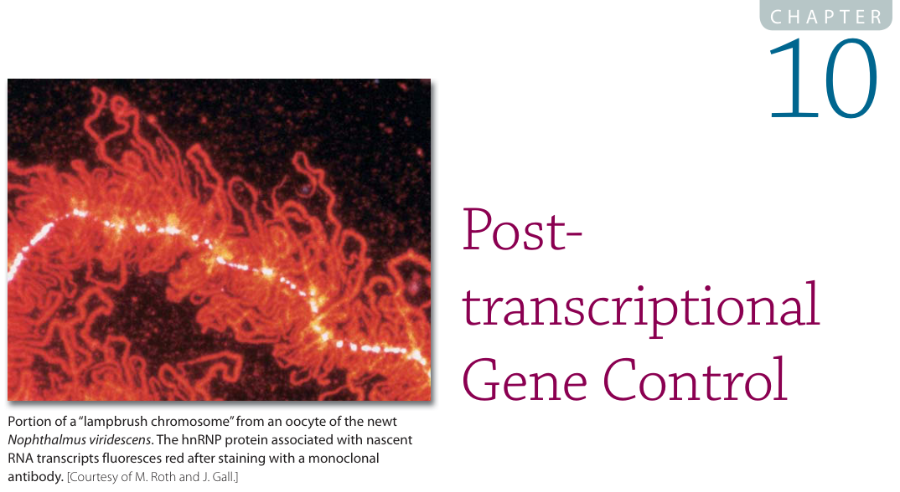
上一章我们看到，大多数基因的调控发生在基因表达的第一步——转录，方式是调控转录前起始复合物在启动子DNA序列上的组装，以及调控启动子近端区域内的转录延伸。转录起始之后，要合成所编码的RNA，就要求RNA聚合酶转录整个基因而不提前终止转录。此外，真核基因产生的最初初级转录本必须经过多种加工反应，才能生成相应的功能性RNA。对mRNA而言，必须加上翻译所必需的5′帽结构（见图5-14），必须从前体mRNA中剪除内含子，并且3′端必须进行多聚腺苷酸化（见图5-15）。成熟的功能性RNA在细胞核中形成后，作为核糖核蛋白的组分被输出到细胞质。RNA的加工及其从细胞核的输出，都为转录起始之后的基因表达提供了进一步调控的机会。
最近，关于在不同组织中以及胚胎发生和细胞分化各时期表达的人类mRNA的大量序列数据揭示，约95%的人类基因会产生可变剪接的mRNA。这些可变剪接的mRNA编码彼此相关的蛋白质，其序列差异仅限于特定的功能结构域。在许多情况下，可变RNA剪接受到调控，以满足特定细胞类型对某种特定蛋白质同种型的需要。鉴于前体mRNA剪接的复杂性，偶尔出错而产生外显子剪接不当的mRNA前体也就不足为奇。然而，真核细胞进化出了RNA监视机制，阻止加工不正确的RNA输出到细胞质，或者在其被输出时使其降解。
基因表达还可以在细胞质中受到额外控制。例如，对于蛋白质编码基因，所产生蛋白质的量取决于相应mRNA在细胞质中的稳定性及其翻译速率。
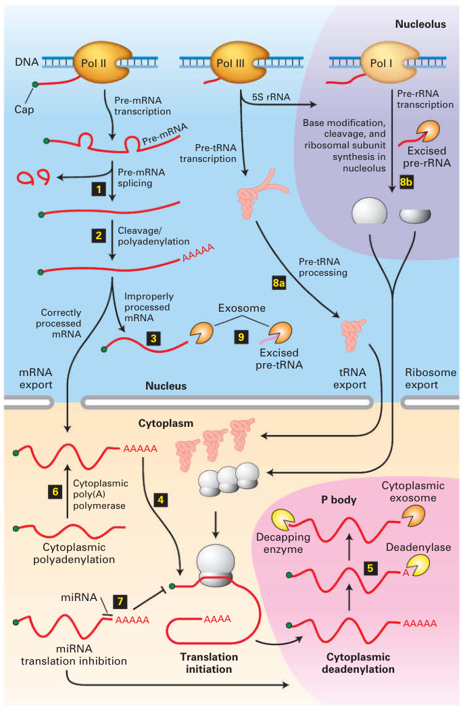
| Cytoplasm | 细胞质 |
| Nucleus | 细胞核 |
| Nucleolus | 核仁 |
| P body | P小体 |
| DNA | DNA |
| Pre-mRNA | 前体mRNA |
| transcription | 转录 |
| Cap | 帽子 |
| splicing | 剪接 |
| Pre-tRNA | 前体tRNA |
| Pre-rRNA | 前体rRNA |
| processing | 加工 |
| Correctly processed mRNA | 正确加工的mRNA |
| mRNA export | mRNA输出 |
| tRNA export | tRNA输出 |
| Excised pre-tRNA | 切出的前体tRNA |
| Excised pre-rRNA | 切出的前体rRNA |
| Improperly processed mRNA | 错误加工的mRNA |
| Cleavage/polyadenylation | 切割/多聚腺苷酸化 |
| Exosome | 外切体 |
| Base modification, cleavage, and ribosomal subunit synthesis in nucleolus | 核仁中的碱基修饰、切割与核糖体亚基合成 |
| Ribosome export | 核糖体输出 |
| 5S rRNA | 5S rRNA |
| Decapping enzyme | 脱帽酶 |
| Cytoplasmic exosome | 细胞质外切体 |
| Cytoplasmic deadenylation | 细胞质去腺苷酸化 |
| Cytoplasmic polyadenylation | 细胞质多聚腺苷酸化 |
| Cytoplasmic poly(A) polymerase | 细胞质poly(A)聚合酶 |
| Deadenylase | 去腺苷酸酶 |
| miRNA | miRNA |
| miRNA translation inhibition | miRNA翻译抑制 |
| Translation initiation | 翻译起始 |
| Pol I | Pol I |
| Pol II | Pol II |
例如，在免疫应答过程中，淋巴细胞通过分泌称为细胞因子的多肽激素进行通讯，这些激素通过跨越质膜的细胞因子受体向邻近的淋巴细胞发出信号（见第23章）。淋巴细胞以短促爆发的方式合成并分泌细胞因子十分重要。之所以能做到这一点，是因为细胞因子mRNA极不稳定；因此，一旦其合成停止，这些mRNA在细胞质中的浓度便迅速下降。相反，编码需要大量、长期发挥作用的蛋白质的mRNA（如核糖体蛋白的mRNA）极为稳定，因此每个mRNA可转录出多条多肽。
正如前体mRNA加工、核输出和翻译受到调控一样，许多（即便不是大多数）mRNA在细胞内的定位也受到调控，从而使新合成的蛋白质富集在需要它的地方。这类调控尤为显著的例子出现在多细胞动物的神经系统中。人脑中的某些神经元与其他神经元形成一千多个独立的突触。在学习过程中，放电频率高于其他的突触会增大许多倍，而同一神经元形成的其他突触则不会。之所以如此，是因为编码对突触增大至关重要的蛋白质的mRNA储存在所有突触处，但这些定位储存的mRNA的翻译，在每个突触处由该突触发出信号的频率独立调控。这样，突触相关蛋白质的合成就能在同一神经元形成的众多突触处各自独立地受到调控（见第22章）。
另一种基因调控涉及微RNA（miRNA），它们在多细胞动物和植物中调控特定靶mRNA的翻译与稳定性。对人类各种组织中这些短miRNA的分析表明，在人类多种细胞类型中有约1900种miRNA表达。尽管最近发现其中一些miRNA是通过在适当的组织和适当的发育时间抑制靶基因表达而发挥功能，但绝大多数人类miRNA的功能仍属未知，并且正成为一个不断壮大的新研究领域的研究主题。如果大多数miRNA确实具有重要功能，那么miRNA基因便构成约25,000个人类基因中的一个重要子集。一个密切相关的过程称为RNA干扰（RNAi），它导致感染细胞中病毒RNA的降解，以及许多真核生物中转座子所编码RNA的降解。这一发现对生物学研究者意义极其重大，因为可以设计短干扰RNA（siRNA），通过称为RNA敲低的实验过程抑制特定mRNA的翻译。该方法使得抑制任何目标基因的功能成为可能，即使在不适于用经典遗传学方法分离突变体的生物中也是如此。
我们把转录之后调控基因表达的所有机制统称为转录后基因调控（图10-1）。由于mRNA的稳定性和翻译速率决定了一个基因所表达蛋白质的量，这些转录后过程是基因控制的重要组成部分。事实上，一个基因的蛋白质产出在其mRNA生命过程的每一步都受到调控，从其合成起始直到其降解。因此，遗传调控过程既作用于RNA，也作用于DNA。本章中，我们讨论转录起始和启动子近端延伸之后mRNA加工过程中的事件，以及已知调控这些事件的各种机制。在最后一节，我们简要讨论由编码rRNA和tRNA的基因所产生的初级转录本的加工。
10.1 真核前体mRNA的加工
本节我们更仔细地考察真核细胞如何把RNA聚合酶II合成的初级转录本转变成功能性mRNA。这一过程发生三个主要事件：5′加帽、3′切割与多聚腺苷酸化，以及RNA剪接（图10-2）。在前体mRNA的5′和3′端添加这些特定修饰，可保护它免受那些迅速降解RNA加工所产生的无帽RNA（如剪出的内含子和从多聚腺苷酸化位点下游转录出的RNA）的酶的攻击。因此，5′帽和3′poly(A)尾把前体mRNA分子与细胞核中许多其他种类的RNA区分开来（表10-1）。前体mRNA分子由参与mRNA向细胞质输出的核蛋白结合。在核输出之前，必须切除内含子，以生成mRNA正确的编码区。在包括人类在内的高等真核生物中，可变剪接受到精细调控，以便把不同的功能结构域替换进蛋白质，从而使这些生物的蛋白质组显著扩大。
加帽、多聚腺苷酸化与剪接这些前体mRNA加工事件，在细胞核中随着新生mRNA前体被转录而同时发生。因此，前体mRNA加工是共转录的。当RNA从RNA聚合酶II表面露出时，其5′端立即被加上所有mRNA都具有的5′帽结构（见图5-14）。随着新生前体mRNA继续从聚合酶表面露出，它随即被一组复杂的RNA结合蛋白的成员结合，这些蛋白协助RNA剪接，并协助把完全加工好的mRNA经由核孔复合物输出到细胞质。其中一些蛋白在细胞质中仍与mRNA结合，但大多数要么留在细胞核中，要么在mRNA输出到细胞质后不久穿梭回细胞核。细胞质中的RNA结合蛋白会替换核内的RNA结合蛋白。因此，mRNA在细胞中从不以游离RNA分子的形式存在，而总是以核糖核蛋白（RNP）复合物的形式与蛋白质结合：最初是新生前体mRNP，它们在转录的同时被加帽并剪接；随后，在切割与多聚腺苷酸化之后，它们被称为核mRNP；在伴随向细胞质输出而发生的蛋白质交换之后，则称为细胞质mRNP。尽管我们经常提到前体mRNA和mRNA，但要记住它们总是以RNP复合物的形式与蛋白质结合。
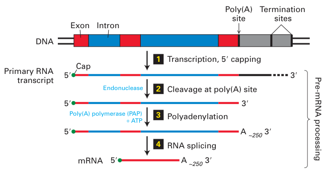
| Primary RNA transcript | 初级RNA转录本 |
| DNA | DNA |
| mRNA | mRNA |
| Pre-mRNA processing | 前体mRNA加工 |
| Cap | 帽子 |
| Exon | 外显子 |
| Intron | 内含子 |
| Transcription, 5′ capping | 转录与5′加帽 |
| Cleavage at poly(A) site | 在poly(A)位点切割 |
| Polyadenylation | 多聚腺苷酸化 |
| Poly(A) site | Poly(A)位点 |
| Termination sites | 终止位点 |
| RNA splicing | RNA剪接 |
| Poly(A) polymerase (PAP) | poly(A)聚合酶（PAP） |
| Endonuclease | 核酸内切酶 |
| ATP | ATP |
5′帽在转录起始后不久加到新生RNA上
当新生真核RNA转录本从RNA聚合酶II的RNA出口通道露出（见图9-12）并达到约25个核苷酸的长度时，一个由7-甲基鸟苷和甲基化核糖组成的保护性帽被加到mRNA的5′端（见图5-14）。
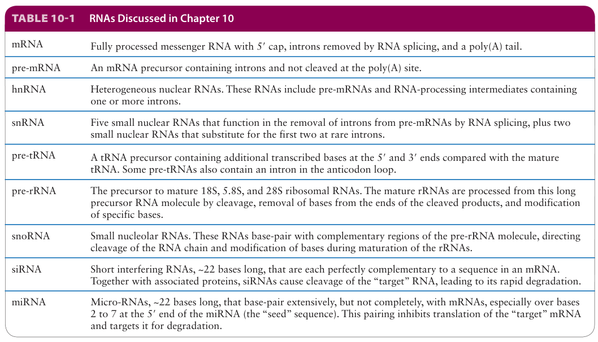
| mRNA | mRNA |
| pre-mRNA | 前体mRNA |
| hnRNA | hnRNA |
| snRNA | snRNA |
| pre-tRNA | 前体tRNA |
| pre-rRNA | 前体rRNA |
| snoRNA | snoRNA |
| siRNA | siRNA |
| miRNA | miRNA |
这个5′帽把RNA分子标记为mRNA前体，并保护它们免受细胞核和细胞质中降解RNA的酶（5′外切核糖核酸酶）的攻击。RNA加工的这一起始步骤由一个二聚体加帽酶催化，该酶与RNA聚合酶II磷酸化的羧基末端结构域（CTD）结合。回想一下，TFIIH通用转录因子在转录起始过程中使CTD七肽重复序列中的丝氨酸5多次磷酸化（见图19-20）。
加帽酶与丝氨酸5磷酸化的CTD结合，刺激该酶的活性，使其专注于从RNA聚合酶II露出的、含5′三磷酸的RNA，而不作用于由RNA聚合酶I或III转录的RNA（后两者没有CTD）。这一点很重要，因为在正在复制的细胞中，前体mRNA的合成仅占所合成RNA总量的约80%。约20%是前体核糖体RNA（由RNA聚合酶I转录），以及5S rRNA、tRNA和其他小的稳定RNA（由RNA聚合酶III转录）。两种机制——（1）加帽酶通过RNA聚合酶II独特的、在转录起始过程中被TFIIH磷酸化于七肽重复序列丝氨酸5的CTD而与之特异性结合，（2）丝氨酸5磷酸化的CTD激活加帽酶——共同导致了对RNA聚合酶II所转录RNA的特异性加帽。
加帽酶的一个亚基从新生RNA的5′端去除γ磷酸（图10-3）。该亚基的另一个结构域把GMP部分从GTP转移到新生转录本的5′二磷酸上，
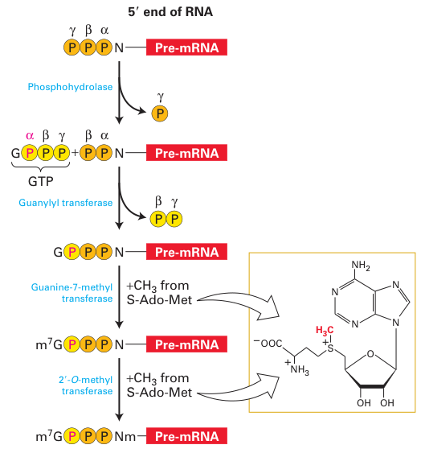
| Phosphohydrolase | 磷酸水解酶 |
| 5′ end of RNA | RNA的5′端 |
| Guanylyl transferase | 鸟苷酸转移酶 |
| GTP | GTP |
| Guanine-7-methyl transferase | 鸟嘌呤-7-甲基转移酶 |
| S-Ado-Met | S-腺苷甲硫氨酸 |
| 2′-O-methyl transferase | 2′-O-甲基转移酶 |
| m7G | m7G |
| Nm | Nm |
| Pre-mRNA | 前体mRNA |
形成不寻常的鸟苷5′-5′三磷酸结构。在最后的步骤中，另外一些酶把甲基从S-腺苷甲硫氨酸转移到鸟嘌呤的N7位，以及新生RNA 5′端头一两个核苷酸之核糖的2′氧上。
大量证据表明，新生转录本的加帽与RNA聚合酶II的延伸相偶联，因此其所有转录本在延伸的最早期就被加帽。如第9章所讨论，在后生动物中，由于NELF（负延伸因子）与RNA聚合酶II在启动子近端区域的结合，聚合酶在转录起始阶段延伸新生转录本非常缓慢（见图9-21）。一旦新生RNA的5′端被加帽，细胞周期蛋白T–CDK9蛋白激酶（也称为P-TEFb）对RNA聚合酶CTD七肽重复序列丝氨酸2的磷酸化，以及对NELF和DSIF（DRB敏感性诱导因子）的磷酸化，便导致NELF释放。（DRB是一种ATP类似物，可抑制CDK9，从而阻止转录从启动子近端区域延伸。）这使RNA聚合酶II进入一种更快的延伸模式，迅速转录离开启动子。这一机制的净效应是：聚合酶要等到新生RNA被加帽之后，才以快速率延伸。
具有保守RNA结合结构域的多种蛋白质与前体mRNA结合
如前所述，蛋白质编码基因的新生RNA转录本以及mRNA加工的中间产物（统称为前体mRNA），在真核细胞核中都不以游离RNA分子的形式存在。从新生转录本最初从RNA聚合酶II露出的时刻起，直到成熟mRNA被运送到细胞质，这些RNA分子一直与一组丰富的核蛋白结合。这些蛋白是不均一核糖核蛋白颗粒（hnRNP）的主要蛋白质组分，后者含有不均一核RNA（hnRNA）——这是指前体mRNA以及其他各种大小的核RNA的统称。这些hnRNP蛋白参与RNA加工的后续步骤，包括剪接、多聚腺苷酸化，以及经由核孔复合物输出到细胞质。
研究者鉴定hnRNP蛋白时，先让培养细胞接受高剂量紫外线照射，这会使RNA碱基与紧密结合的蛋白质之间形成共价交联。然后用寡聚dT纤维素柱（可结合带poly(A)尾的RNA）对处理细胞的核提取物进行层析，以回收已与核内多聚腺苷酸化RNA交联的蛋白质。随后用针对通过这种交联技术鉴定出的主要蛋白的单克隆抗体处理未照射细胞的提取物，揭示出一组复杂的丰富hnRNP蛋白，大小在30至120 kDa之间。
与转录因子一样，大多数hnRNP蛋白具有模块化结构。它们含有一个或多个RNA结合结构域，以及至少一个与其他蛋白相互作用的结构域。
通过构建缺失某些氨基酸序列的hnRNP蛋白并检测其结合RNA的能力，已鉴定出若干种不同的RNA结合基序。
hnRNP蛋白的功能
前体mRNA与hnRNP蛋白的结合，可防止前体mRNA通过互补区域的碱基配对形成短的二级结构，从而使前体mRNA易于与其他RNA分子或蛋白质相互作用。与hnRNP蛋白结合的前体mRNA，为后续加工步骤提供的底物比游离、未结合的前体mRNA更为均一，因为后者每一种都会因其特定序列而形成独特的二级结构。
用纯化的hnRNP蛋白进行的结合研究表明，不同的hnRNP蛋白与新合成前体mRNA分子的不同区域结合。例如，hnRNP蛋白A1、C和D优先结合内含子3′端的富含嘧啶序列（见下文图10-7）。一些hnRNP蛋白与指定RNA剪接或切割/多聚腺苷酸化的RNA序列相互作用，并参与构成被RNA加工因子识别的结构。最后，细胞融合实验表明，一些hnRNP蛋白始终定位在细胞核中，而另一些则在细胞质内外循环，提示它们参与mRNA从细胞核向细胞质的输出（图10-4）。
保守的RNA结合基序
RNA识别基序（RRM），也称为RNP基序和RNA结合结构域（RBD），是hnRNP蛋白中最常见的RNA结合结构域。
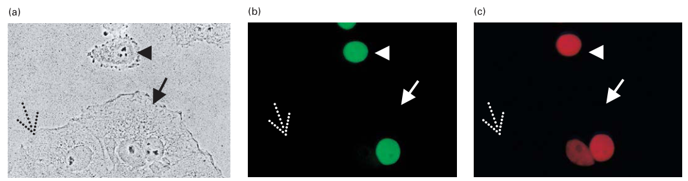
这个由80个残基构成的结构域也存在于许多其他RNA结合蛋白中，它含有两段高度保守的序列（RNP1和RNP2），从酵母到人类的各种生物中都能找到——这表明，与许多DNA结合结构域一样，它在真核生物进化的早期就已演化出来。
结构分析表明，RRM结构域由四股β片层构成，其一侧由两个α螺旋支撑。为了与带负电的RNA磷酸基团相互作用，β片层形成一个带正电的表面。保守的RNP1和RNP2序列并排位于中间的两条β股上，它们的侧链与横跨β片层表面的单链RNA区域形成多处接触（图10-5）。
由45个残基构成的KH基序存在于hnRNP K蛋白和其他几种RNA结合蛋白中。代表性KH结构域的三维结构与RRM结构域相似但更小，由三股β片层构成，一侧由两个α螺旋支撑。尽管如此，KH结构域与RNA的相互作用方式与RRM结构域大不相同。RNA通过与由α螺旋和一条β股形成的疏水表面相互作用而结合到KH结构域上。RGG框是hnRNP蛋白中发现的另一种RNA结合基序，含有五个Arg-Gly-Gly（RGG）重复序列，其间散布着若干芳香族氨基酸。最近的结构分析表明，在一个RNA结合的实例中，含RGG的肽结合在富含G的RNA双链区的大沟中（见图5-4b）。KH结构域和RGG重复序列常常以两组或多组交错的形式出现在同一个RNA结合蛋白中。
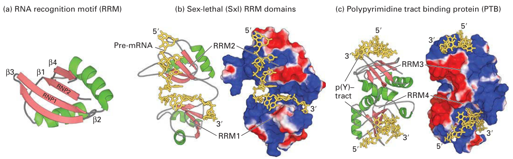
| (a) RNA recognition motif (RRM) | （a）RNA识别基序（RRM） |
| (b) Sex-lethal (Sxl) RRM domains | （b）Sex-lethal（Sxl）的RRM结构域 |
| (c) Polypyrimidine tract binding protein (PTB) | （c）多聚嘧啶序列结合蛋白（PTB） |
| Pre-mRNA | 前体mRNA |
| RRM1 | RRM1 |
| RRM2 | RRM2 |
| RRM3 | RRM3 |
| RRM4 | RRM4 |
| RNP1 | RNP1 |
| RNP2 | RNP2 |
| p(Y)–tract | 多聚嘧啶（p(Y)）序列 |
| polypyrimidine tract | 多聚嘧啶序列 |
| 5′ splice site | 5′剪接位点 |
| 3′ splice site | 3′剪接位点 |
剪接发生在前体mRNA中短的保守序列处，经由两次转酯反应
在成熟功能性mRNA的形成过程中，内含子被切除，外显子被剪接在一起。对于短的转录单位，RNA剪接通常发生在初级转录本3′端切割与多聚腺苷酸化之后，如图10-2所描绘的人β-珠蛋白mRNA的加工。然而，对于含多个外显子的长转录单位，新生RNA中外显子的剪接在基因转录完成之前就已开始。
早期关于mRNA核内加工的开拓性研究揭示，mRNA最初被转录成的分子比细胞质中的成熟mRNA长得多。研究还表明，转录起始后不久加上的5′帽附近的RNA序列保留在成熟mRNA中，而mRNA加工中间产物多聚腺苷酸化末端附近的RNA序列也保留在细胞质中的成熟mRNA中。这一表面上的悖论因内含子的发现而得以解决——内含子是通过电子显微镜观察腺病毒DNA与编码六邻体（一种主要病毒颗粒衣壳蛋白）的mRNA所形成的RNA-DNA杂交分子而发现的（图10-6）。其他研究揭示出与病毒DNA共线性的核内病毒RNA（初级转录本），以及已去除一个或两个内含子的核内病毒RNA（加工中间产物）。这些结果共同使人们认识到，内含子是在外显子被剪接在一起时从初级转录本中切除的。
前体mRNA中剪接位点——即外显子-内含子交界处——的位置，可以通过比较基因组DNA的序列与由相应mRNA制备的cDNA序列来确定（见图6-17）。存在于基因组DNA中但不存在于cDNA中的序列代表内含子，并指示剪接位点的位置。对大量不同mRNA的这种分析揭示，真核前体mRNA中内含子两侧的剪接位点具有中等保守的短共有序列，包括紧邻3′剪接位点上游的一段多嘧啶序列（图10-7）。对在内含子中引入缺失的突变基因的研究表明，内含子中部的大部分区域可以被去除而不影响剪接；一般而言，只需内含子两端各30–40个核苷酸，剪接就能以正常速率发生。
对体外前体mRNA剪接过程中所形成的中间产物的分析发现，外显子的剪接经由两次连续的转酯反应进行（图10-8）。内含子以套索结构被切除，其中内含子的5′鸟嘌呤通过一个不寻常的2′,5′-磷酸二酯键与内含子3′端附近的一个腺苷相连。这个A残基被称为分支点A，因为它在套索结构中形成RNA分支。在每一次转酯反应中，一个磷酸酯键被另一个磷酸酯键替换。
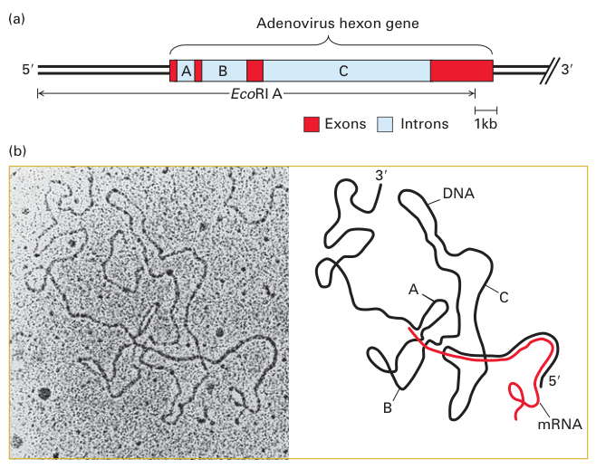
| mRNA | mRNA |
| DNA | DNA |
| Exons | 外显子 |
| Introns | 内含子 |
| EcoRI | EcoRI |
| Adenovirus hexon gene | 腺病毒六邻体基因 |
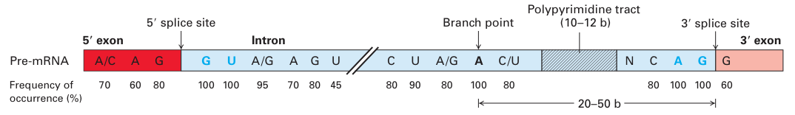
| Pre-mRNA | 前体mRNA |
| 5′ exon | 5′外显子 |
| 5′ splice site | 5′剪接位点 |
| 3′ splice site | 3′剪接位点 |
| 3′ exon | 3′外显子 |
| Polypyrimidine tract (10–12 b) | 多聚嘧啶序列（10–12个碱基） |
| Branch point | 分支点 |
| Intron | 内含子 |
| Frequency of occurrence (%) | 出现频率（%） |
由于分子中磷酸酯键的数目在两次反应中都没有改变，因此不消耗能量。这两次反应的净结果是两个外显子被连接起来，而介于其间的内含子以带分支的套索结构被释放。
剪接过程中snRNA与前体mRNA碱基配对
剪接需要小核RNA（snRNA）的存在，它们与前体mRNA碱基配对，还需要约170种相关蛋白。五种富含U的snRNA，称为U1、U2、U4、U5和U6，参与前体mRNA的剪接。这些snRNA长度在107至210个核苷酸之间，在真核细胞核内众多的小核核糖核蛋白颗粒（snRNP）中，每种各与6–10种蛋白结合。
U1 snRNA在剪接中作用的决定性证据来自以下实验：前体mRNA的5′剪接位点与U1 snRNA的5′区域之间的碱基配对是RNA剪接所必需的（图10-9a）。体外实验表明，一个与U1 snRNA 5′-端区域杂交的合成寡核苷酸可阻断RNA剪接。
体内实验表明，前体mRNA 5′剪接位点中破坏碱基配对的突变同样阻断RNA剪接；但在这种情况下，通过表达一种带补偿突变的U1 snRNA（该突变恢复与突变型前体mRNA 5′剪接位点的碱基配对）即可恢复剪接（图10-9b）。最初怀疑U2 snRNA参与剪接，是因为发现它含有一段内部序列，与前体mRNA中分支点两侧的共有序列在很大程度上互补（见图10-7）。与针对U1 snRNA和5′剪接位点所做的类似的补偿突变实验证明，U2 snRNA与前体mRNA中分支点序列之间的碱基配对对剪接也至关重要。
图10-9a展示了U1和U2 snRNA的一般结构，以及它们在剪接过程中如何与前体mRNA碱基配对。值得注意的是，分支点A本身不与U2 snRNA碱基配对，而是"凸出"在外（图10-10a），这使其2′羟基能够参与RNA剪接的第一次转酯反应（见图10-8）。
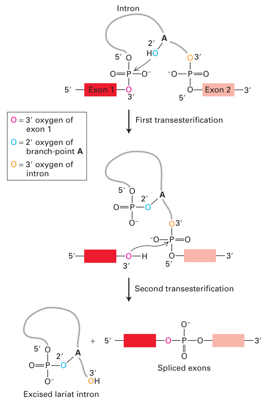
| Branch-point A | 分支点A |
| Excised lariat intron | 切出的套索内含子 |
| Spliced exons | 剪接后的外显子 |
| Second transesterification | 第二次酯交换反应 |
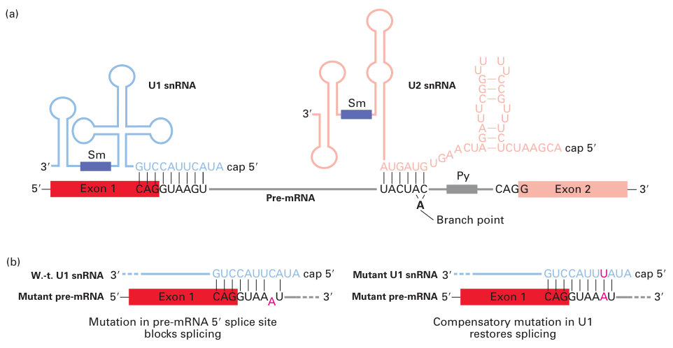
| Exon 1 | 外显子1 |
| Exon 2 | 外显子2 |
| Pre-mRNA | 前体mRNA |
| U1 snRNA | U1 snRNA |
| U2 snRNA | U2 snRNA |
| Sm | Sm |
| Py | 多聚嘧啶序列（Py） |
| Branch point | 分支点 |
| W.-t. U1 snRNA | 野生型U1 snRNA |
| Mutant U1 snRNA | 突变型U1 snRNA |
| Mutant pre-mRNA | 突变型前体mRNA |
| Mutation in pre-mRNA 5′ splice site blocks splicing | 前体mRNA 5′剪接位点突变阻断剪接 |
| Compensatory mutation in U1 restores splicing | U1的补偿性突变恢复剪接 |
对其他snRNA的类似研究表明，snRNA彼此之间的碱基配对在剪接过程中也会发生。此外，这些RNA-RNA相互作用的重排对剪接途径至关重要。
如上所述，一个与U1 snRNA 5′端碱基配对的合成寡核苷酸被发现可在体外抑制RNA剪接，这支持了U1 snRNA与5′剪接位点的碱基配对对前体mRNA剪接第一步的重要性。目前，一种类似策略正用于杜氏肌营养不良（DMD）治疗的临床试验。该病是人类最常见的由基因组新突变引起的遗传病。它由DMD基因突变引起，尤其是因外显子中碱基对改变产生终止密码子而导致的链终止突变。或者，改变信息阅读框的短缺失或插入会导致翻译出异常氨基酸，随后通常在新的阅读框中出现终止密码子。这些突变消除了所编码蛋白质——抗肌萎缩蛋白——的C端，而C端对其功能至关重要（见图17-20，下）。DMD基因是人类最长的基因（约200万个碱基对；是大肠杆菌整个基因组长度的一半！），这使它成为随机突变的大靶标。由于DMD基因位于X染色体上，男性没有第二个野生型拷贝来补偿该突变。人们已开发出经修饰可透过细胞膜、但具有正常Watson-Crick碱基配对特性的合成寡核苷酸。通过与突变外显子的末端杂交，它们可使异常外显子在前体mRNA剪接过程中被"跳过"，并且可以被设计成让突变上游的正常外显子剪接到下游一个保持阅读框的外显子上。这样就表达出一种内部缺失的蛋白质，但该蛋白质有可能具有足够的功能，以缓解原本极具破坏性的症状。■
剪接体由snRNP与前体mRNA组装而成，执行剪接
五种剪接snRNP以及参与剪接的其他蛋白质在前体mRNA上组装，形成一个大型核糖核蛋白复合物，称为剪接体（图10-11）。
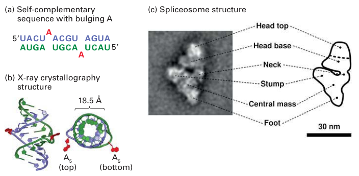
| (a) Self-complementary sequence with bulging A | （a）带凸出A的自互补序列 |
| (b) X-ray crystallography structure | （b）X射线晶体结构 |
| (c) Spliceosome structure | （c）剪接体结构 |
剪接体的质量与核糖体相近。剪接体的组装始于U1 snRNA与5′剪接位点的碱基配对，以及蛋白SF1（剪接因子1）与分支点A的协同结合，和异二聚体蛋白U2AF（U2相关因子）通过其大亚基与小亚基分别与内含子的多嘧啶序列和3′端AG的结合。随后U2 snRNP与分支点区域碱基配对（见图10-9a），同时SF1被释放。U4和U6 snRNP中的snRNA之间广泛的碱基配对形成一个复合物，该复合物与U5 snRNP结合。这个U4/U6/U5"三snRNP"随后与先前形成的U1/U2/前体mRNA复合物结合，生成剪接体。
剪接体形成之后，snRNA与前体mRNA的配对发生广泛重排，导致U1 snRNP释放。图10-10c显示了剪接过程中这一中间体的结构。随着U4 snRNP的丢失，剪接体组分发生进一步重排。U4的释放产生一个复合物，它催化第一次转酯反应，在分支点A的2′羟基与内含子5′端的磷酸之间形成2′,5′-磷酸二酯键（见图10-8）。在snRNP再一次重排之后，第二次转酯反应以标准的3′,5′-磷酸二酯键连接两个外显子，并以与snRNP结合的套索结构释放内含子。这个最终的内含子-snRNP复合物迅速解离，释放出的各个snRNP可参与新一轮剪接。被切除的内含子随后被脱支酶和后面讨论的其他核内RNase迅速降解。
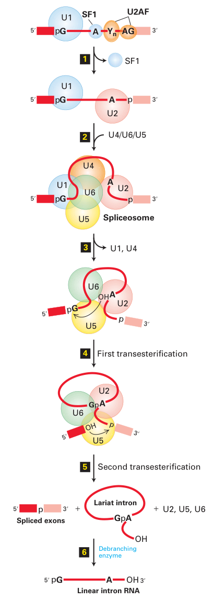
| U1 | U1 |
| U2 | U2 |
| U4 | U4 |
| U5 | U5 |
| U6 | U6 |
| SF1 | SF1 |
| U2AF | U2AF |
| Spliceosome | 剪接体 |
| First transesterification | 第一次酯交换反应 |
| Second transesterification | 第二次酯交换反应 |
| Spliced exons | 剪接后的外显子 |
| Lariat intron | 套索内含子 |
| Linear intron RNA | 线状内含子RNA |
| Debranching enzyme | 去分支酶 |
如上所述，剪接体大小大致相当于一个核糖体，由约170种蛋白质组成，其中除与五种snRNP结合的蛋白质外，还包括约100种"剪接因子"。这使RNA剪接的复杂程度可与转录起始和蛋白质合成相媲美。一些剪接因子与snRNP结合，另一些则不然。例如，U2AF的65-kDa亚基结合内含子3′端附近的多嘧啶序列以及U2 snRNP。U2AF的35-kDa亚基结合内含子3′端的AG二核苷酸，并与附近结合的较大的U2AF亚基相互作用。这两个U2AF亚基与SF1共同作用，通过促进U2 snRNP与分支点的相互作用来帮助确定3′剪接位点（见图10-11，步骤1）。一些剪接因子还与已知的RNA解旋酶具有序列同源性；这些因子很可能是剪接体剪接循环中snRNA之间发生碱基配对重排所必需的。当RNA聚合酶II的CTD被细胞周期蛋白T–CDK9转录延伸因子在七肽重复序列丝氨酸2上磷酸化时（见图9-21），若干剪接因子会与之结合。这种结合使这些剪接因子集中在RNA聚合酶II的RNA出口位点附近，从而能在剪接位点从聚合酶露出时迅速在该处组装剪接体。
RNA剪接之后，一组特定的hnRNP蛋白仍结合在剪接后RNA上每个外显子-外显子连接处5′侧约20个核苷酸处，从而形成外显子连接复合物。与外显子连接复合物结合的一种hnRNP蛋白是RNA输出因子（REF），它参与把完全加工好的mRNP从细胞核输出到细胞质，如第10.3节所讨论。与外显子连接复合物结合的其他蛋白质在细胞质中的一种质量控制机制中发挥作用，该机制导致剪接不当的mRNA被降解，称为无义介导的衰变（见第10.4节）。
一小部分前体mRNA（人类中约1%）所含内含子的剪接位点不符合标准共有序列。这类内含子以AU开头、以AC结尾，而不遵循通常的"GU-AG规则"（见图10-7）。这一类特殊内含子的剪接经由与图10-11所示类似的剪接循环进行，只是涉及四种新的、低丰度的snRNP以及标准的U5 snRNP。
脊椎动物、昆虫和植物细胞中几乎所有功能性mRNA，都是由相应的单个前体mRNA分子通过切除内部内含子并剪接外显子而产生的。然而，在两类原生动物——锥虫和眼虫——中，mRNA是通过把彼此分开的RNA分子剪接在一起而构建的。这一过程称为反式剪接，也用于线虫（蛔虫）Caenorhabditis elegans中10%–15%的mRNA的合成，该线虫是研究胚胎发育的重要模式生物。反式剪接由snRNP以与单个前体mRNA中外显子剪接相似的过程完成。
RNA聚合酶II的链延伸与RNA加工因子的存在相偶联
RNA加工如何与pre-mRNA的转录高效偶联？关键在于RNA聚合酶II长长的羧基末端结构域（CTD）——如第9章所讨论，它由七残基（七肽）序列的多个重复构成。完全伸展时，人RNA聚合酶II中的CTD结构域长约130 nm（图10-12）。CTD如此惊人的长度显然使多个蛋白质能同时与同一个RNA聚合酶II分子结合。例如，为新生转录物添加5′帽的酶
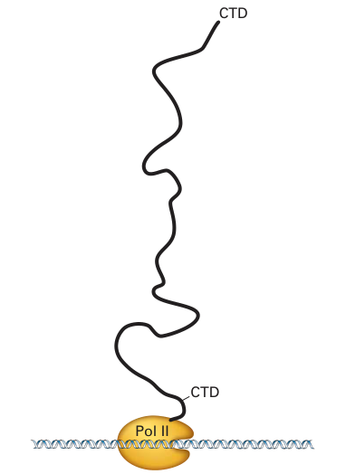
| Pol II | Pol II |
| CTD | CTD |
与丝氨酸5位磷酸化的CTD结合（如前所述），剪接和多聚腺苷酸化因子也是如此。因此，当聚合酶转录到剪接位点和多聚腺苷酸化信号时，这些加工因子在局部浓度很高，从而提高了RNA加工的速率和特异性。反过来，hnRNP蛋白与新生RNA的结合增强了RNA聚合酶II与DSIF、cyclin T–CDK9等延伸因子（见图9-21）的相互作用，提高了转录速率。因此，转录速率与新生RNA结合hnRNP和RNA加工因子的速率相协调。这一机制或许能确保：除非加工pre-mRNA的机器已正确就位，否则pre-mRNA不会被合成。
SR蛋白参与长pre-mRNA中的外显子界定
人类基因组中外显子的平均长度约为150个碱基，而内含子的平均长度约为3500个碱基，最长的内含子甚至超过500 kb！由于5′和3′剪接位点以及分支点的序列高度简并，这些序列的多个拷贝很可能随机出现在长内含子中。因此，在具有长内含子的高等生物中，需要额外的序列信息来界定哪些外显子应当被剪接在一起。
界定外显子边界的剪接位点，其信息就编码在外显子的序列之中。一个RNA结合蛋白家族——SR蛋白——与外显子内称为外显子剪接增强子的序列相互作用。SR蛋白是前文讨论过的hnRNP蛋白的一个亚类，含有一个或多个RRM RNA结合结构域。它们还含有若干富含精氨酸（R）和丝氨酸（S）残基的蛋白质-蛋白质相互作用结构域，称为RS结构域。当SR蛋白与外显子剪接增强子结合时，它们通过一个横跨外显子的蛋白质-蛋白质相互作用网络，介导U1 snRNP与真正的5′剪接位点、以及U2 snRNP与分支点的协同结合（图10-13）。SR蛋白、snRNP和其他剪接因子（如U2AF和SF1）跨越一个外显子组装成的复合体被称为跨外显子识别复合体，它使长pre-mRNA中的外显子得以被精确指定。
干扰SR蛋白与外显子剪接增强子结合的突变，即使并不改变所编码的氨基酸序列，也会阻止跨外显子识别复合体的形成。结果，受影响的外显子在剪接时被"跳过"，不被包含在最终加工好的mRNA中。此时产生的截短mRNA要么被降解，要么被翻译成功能异常的突变蛋白。这类突变出现在某些人类遗传病中。例如，脊髓性肌萎缩是儿童期死亡最常见的遗传原因之一。该疾病源于基因组中一个区域的突变，该区域含有两个由基因重复产生、密切相关的基因——SMN1和SMN2。这两个基因编码相同的蛋白质，但SMN2的表达
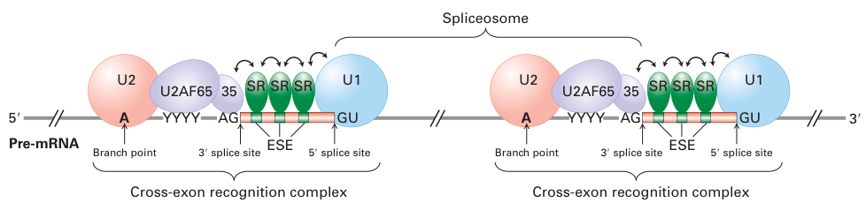
| Cross-exon recognition complex | 跨外显子识别复合体 |
| Pre-mRNA | 前体mRNA |
| U1 | U1 |
| U2 | U2 |
| U2AF35 | U2AF35 |
| U2AF65 | U2AF65 |
| SR proteins | SR蛋白 |
| ESE | ESE |
| 5′ splice site | 5′剪接位点 |
| 3′ splice site | 3′剪接位点 |
| Branch point | 分支点 |
| GU | GU |
| AG | AG |
| YYYY | YYYY |
| Spliceosome | 剪接体 |
水平低得多，因为其中一个外显子里的一处沉默突变干扰了SR蛋白的结合。这一突变导致大多数SMN2 mRNA发生外显子跳跃。小鼠中同源的SMN基因只有一个拷贝，是细胞存活所必需的。人类的脊髓性肌萎缩由使SMN1失活的纯合突变引起。由那一小部分被正确剪接的SMN2 mRNA所翻译出的少量蛋白质，足以在胚胎发生和胎儿发育期间维持细胞存活，却不足以维持儿童期脊髓运动神经元的存活，导致这些神经元死亡并引发相应疾病。■
在引起人类遗传病的单碱基突变中，约15%会干扰正确的外显子界定。其中一些突变发生在5′或3′剪接位点，常常导致使用附近正常基因序列中就存在的替代性"隐蔽"剪接位点。在正常剪接位点缺失时，跨外显子识别复合体会识别这些替代位点。另一些导致异常剪接的突变会产生一个新的共有剪接位点序列，后者被识别并取代正常剪接位点。最后，有些突变会干扰特定SR蛋白与pre-mRNA的结合。这类突变抑制正常剪接位点处的剪接，如SMN2基因的情形，从而导致外显子跳跃。
人们正在开发用于治疗这些遗传病的策略，所用的是膜通透性合成寡核苷酸衍生物，与前文讨论过的、用于在DMD中促使突变外显子被跳过的那类分子类似。这类分子可与产生异常剪接位点的突变序列杂交，从空间上阻断U1或U2 snRNA接近该位点。就脊髓性肌萎缩而言，研究人员正在试验一些修饰寡核苷酸，它们能与SMN2 pre-mRNA中靠近缺失的外显子剪接增强子的区域碱基配对。
分子中有一段不参与杂交的区域保持单链，能够结合含量丰富的SR蛋白，这或许有助于组装跨外显子识别复合体，从而提高由SMN2基因表达出的pre-mRNA中外显子的正确剪接。
自我剪接的II类内含子为snRNA的进化提供线索
在某些非生理性的体外条件下，一些RNA转录本的纯制品可在没有任何蛋白质存在时缓慢地剪接去除内含子。这一观察使人们认识到，有些内含子是自我剪接的。目前已发现两类自我剪接内含子：I类内含子，存在于原生动物的核rRNA基因中；II类内含子，存在于植物和真菌线粒体与叶绿体的蛋白编码基因以及一些rRNA和tRNA基因中。自我剪接内含子具有催化活性这一发现，彻底改变了我们对RNA功能的看法。如第5章所述，现已知道RNA能在核糖体的蛋白质合成过程中催化肽键形成。这里我们讨论II类内含子（如今仅见于线粒体和叶绿体DNA）在snRNA进化中可能扮演的角色；I类内含子的功能将在后面讨论rRNA加工的章节中介绍。
尽管II类内含子的精确序列并不高度保守，但它们全都折叠成一种保守而复杂的二级结构，其中含有大量茎环（图10-14a）。II类内含子的自我剪接通过两次转酯反应进行，其反应中间物和产物与核pre-mRNA剪接中所见者类似。II类内含子自我剪接与剪接体剪接在机制上的相似性，引出了这样一个假说：snRNA的功能与II类内含子二级结构中的茎环类似。根据这一假说，snRNA与pre-mRNA的5′和3′剪接位点相互作用，并且彼此相互作用，从而产生一个
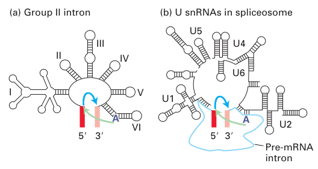
| (a) Group II intron | （a）II型内含子 |
| (b) U snRNAs in spliceosome | （b）剪接体中的U snRNA |
| Pre-mRNA | 前体mRNA |
| Intron | 内含子 |
| U1 | U1 |
| U2 | U2 |
| U4 | U4 |
| U5 | U5 |
| U6 | U6 |
在功能上类似于II类自我剪接内含子的三维RNA结构（图10-14b）。
该假说的一个延伸是：古代pre-mRNA中的内含子，是由II类自我剪接内含子通过逐步丢失内部RNA结构进化而来的，而这些丢失的结构同时进化成了执行相同功能的反式作用snRNA。支持这类进化模型的证据来自对II类内含子突变体的实验，这些突变体中结构域V和结构域I的一部分被删除。含有此类突变内含子的RNA转录本在自我剪接上存在缺陷，但当把相当于被删除区域的RNA分子加入体外反应时，自我剪接便发生了。这一发现表明，II类内含子中的这些结构域可以像snRNA一样以反式方式起作用。
II类内含子自我剪接与pre-mRNA的剪接体剪接在机制上的相似性还提示，剪接反应是由剪接体中的snRNA组分而非蛋白质组分催化的。尽管II类内含子在升高的温度和Mg2+浓度下能在体外自我剪接，但在体内条件下，需要一类称为成熟酶的蛋白质（它们与II类内含子RNA结合）才能快速剪接。据认为，成熟酶可稳定内含子RNA为催化两次剪接转酯反应所必需的精确三维相互作用。与此类似，剪接体中的snRNP蛋白被认为可稳定snRNA和内含子核苷酸为催化pre-mRNA剪接所需的精确几何构型。
snRNA的进化可能是高等真核生物快速进化中的重要一步。随着参与自我剪接的序列从内含子中丢失、其功能被反式作用snRNA取代，剩下的内含子序列便得以自由地趋异演化。这反过来很可能通过外显子洗牌促进了新基因的进化，因为在此过程中产生的新内含子序列所受的限制很少（见图8-18和图8-19）。这也使得由可变RNA剪接带来的蛋白质多样性得以增加，并带来由受调控的RNA剪接所实现的又一层基因控制。
pre-mRNA的3′切割与多聚腺苷酸化紧密偶联
在真核细胞中，除组蛋白mRNA外*，所有mRNA都有一个3′ poly(A)尾。早期对脉冲标记的腺病毒和SV40 RNA的研究证明，病毒初级转录本延伸超出了poly(A)尾所添加的位点。这些结果提示，A残基是加到由较长转录本经核酸内切酶切割所产生的3′羟基上的，但预测的下游RNA片段在体内始终未能检测到，大概是因为它们被迅速降解了。然而，在用培养的人细胞核提取物进行的体外加工反应中，两种预测的切割产物都被观察到了。在这些体外反应中，切割/多聚腺苷酸化过程以及切割位点下游RNA的降解都慢得多，因而更容易检测到下游切割产物。
*主要的组蛋白mRNA在S期由重复基因大量转录产生，数量极为可观。它们经历一种特殊形式的3′端加工，只涉及切割而不涉及多聚腺苷酸化。帮助调控组蛋白mRNA翻译的专一性RNA结合蛋白，会结合到由这一特殊系统所产生的3′端上。
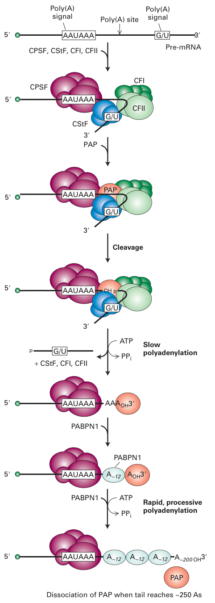
| Pre-mRNA | 前体mRNA |
| G/U | G/U |
| AAUAAA | AAUAAA |
| Poly(A) signal | Poly(A)信号 |
| Poly(A) site | Poly(A)位点 |
| Cleavage | 切割 |
| CPSF | CPSF |
| CStF | CStF |
| CFI | CFI |
| CFII | CFII |
| PAP | PAP |
| PABPN1 | PABPN1 |
| ATP | ATP |
| Poly(A) tail | Poly(A)尾 |
| Rapid, processive polyadenylation | 快速、持续的多聚腺苷酸化 |
| Slow polyadenylation | 缓慢多聚腺苷酸化 |
| Dissociation of PAP when tail reaches ~250 As | 尾长达约250个A时PAP解离 |
poly(A)聚合酶（PAP）必须在切割发生之前与该复合体结合。这一对PAP结合的要求把切割与多聚腺苷酸化联系起来，使得所产生的游离3′端被迅速多聚腺苷酸化，不会因未被保护的3′端遭到外切核酸酶降解而丢失重要信息。
这一大型多蛋白切割/多聚腺苷酸化复合体在pre-mRNA中富含AU的多聚腺苷酸化信号周围组装，在许多方面类似于在模板DNA分子富含AT的TATA框处形成转录前起始复合体（见图9-19）。在两种情况下，多蛋白复合体都是通过由特异性蛋白质-核酸和蛋白质-蛋白质相互作用构成的网络协同组装的。
在poly(A)位点切割之后，多聚腺苷酸化分两个阶段进行：先缓慢地添加最初约12个A残基，随后迅速再添加多达200–250个A残基。快速阶段需要含RRM基序的poly(A)结合蛋白以多个拷贝结合。该蛋白被命名为PABPN1，以区别于人类细胞质中的poly(A)结合蛋白PABPC1。PABPN1协同地结合到由PAP最初添加的短A尾上，以及结合到与AAUAAA多聚腺苷酸化信号结合的CPSF上。这种结合刺激PAP快速且持续地延伸短的poly(A)尾；所谓持续，即不把正在延长的poly(A)尾从PABPN1与CPSF的复合体上释放。一旦poly(A)尾达到约250个腺嘌呤的长度，这种持续合成能力便丧失，PAP从poly(A)-PABPN1复合体上解离，终止A的添加（见图10-15）。PABPN1与poly(A)尾的结合是mRNA输出到细胞质所必需的。与剪接因子一样，参与切割和多聚腺苷酸化的蛋白质中有若干亚基与RNA聚合酶II的丝氨酸2位磷酸化CTD结合，从而把它们富集在RNA中的多聚腺苷酸化信号从延伸中的聚合酶中伸出的区域。
在野生型基因中，RNA聚合酶II在多聚腺苷酸化信号约2 kb范围内的多个可能位点中的任一个处终止转录。用SV40和腺病毒（两者都是DNA病毒）进行的实验表明，当多聚腺苷酸化信号发生突变时，RNA聚合酶II不会终止转录，而是继续转录，直到遇到病毒基因组中的下一个poly(A)位点。类似的结果不久后也在一个重组
插入腺病毒的人β-珠蛋白基因中得到证实。这些实验表明，RNA聚合酶II的转录终止与转录本的切割和多聚腺苷酸化偶联。据推测，这是由于新生RNA的5′端失去保护所致。因为被切割RNA的5′端上没有帽结构，所以它易受XRN1 5′→3′外切核糖核酸酶的进攻。据认为，当这种外切核糖核酸酶到达仍在转录的聚合酶时，会触发终止：其方式要么是把新生RNA的3′端从聚合酶活性位点中拉出，要么是诱导聚合酶发生构象变化而导致转录终止。一旦新生RNA从延伸中的聚合酶上被移除，RNA聚合酶II的钳与聚合酶内部的RNA-DNA杂交体之间的接触（见图9-15）便丧失，使钳打开，聚合酶从DNA模板上释放。较新的针对RNA聚合酶II抗体的染色质免疫沉淀研究（ChIP-seq）（见图9-18）表明，聚合酶可能是在poly(A)位点下游约2 kb范围内的多个可能位点处从模板DNA上被移除的。
核外切核糖核酸酶降解从pre-mRNA中加工去除的RNA
由于人类基因组含有长内含子，在转录过程中由RNA聚合酶II聚合的核苷酸只有约5%保留在成熟加工好的mRNA中。这一过程看似低效，但它很可能是在多细胞生物中进化出来的，因为外显子洗牌过程促进了具有长内含子的生物中新基因的进化（见第8章）。被剪接去除的内含子以及切割/多聚腺苷酸化位点下游的RNA，由核外切核糖核酸酶降解。
如前所述，被切除内含子中的2′,5′-磷酸二酯键由去分支酶水解（见图10-11第6步），产生一个两端均无保护的线性分子。这样的线性RNA分子可被外切核糖核酸酶进攻，后者从5′或3′端一次水解一个碱基（与之相对，内切核糖核酸酶消化内部的磷酸二酯键）。RNA降解的主要机制是被一个约400 kDa的大型蛋白复合体——外切体——消化，该复合体内部含有一个3′→5′外切核糖核酸酶（图10-16）。（如下文所述，外切体在细胞质中也有功能。）外切体在许多方面类似于蛋白酶体（见图3-31），后者在细胞核和细胞质中都能消化多泛素化的蛋白质。外切体的主要活性位点位于复合体内部，只能消化穿入复合体顶部孔道中的单链RNA（图10-16b）。这个孔太小，容不下双链或其他有结构的RNA区域进入。与该复合体结合的其他蛋白质包括一种RNA解旋酶，它破坏碱基配对以及RNA-蛋白质相互作用，否则这些作用会阻碍RNA进入孔道。
除内含子外，外切体还降解未被正确剪接或多聚腺苷酸化的pre-mRNA，尽管目前尚不清楚外切体如何识别加工不当的pre-mRNA。但在PAP为温度敏感型突变体的酵母细胞中（见图10-15），在非许可温度下pre-mRNA会滞留在细胞核内的转录位点上。在另有一个突变的细胞中——该突变位于只见于核外切体而不见于胞质外切体的外切体亚基（Rrp6，见图10-16）——这些加工异常的pre-mRNA会被释放。此外，果蝇多线染色体的转录位点处富集有外切体，它们与RNA聚合酶II的延伸因子相关联。这些结果提示，外切体参与了细胞核中一种目前所知甚少的质量控制机制，该机制能识别加工异常的pre-mRNA，阻止它们输出到细胞质，并最终导致其降解。
为避免被核外切核酸酶降解，新生转录本、pre-mRNA加工中间物以及核内的成熟mRNA，其末端都必须受到保护。如上文所述，新生转录本的5′端一经从聚合酶中伸出，就通过添加5′帽结构而受到保护。5′帽之所以受到保护，是因为它被一个异二聚体的核帽结合复合体（CBC）结合，后者既保护它免受5′外切核酸酶的攻击，又参与把mRNA输出到细胞质。新生转录本的3′端位于RNA聚合酶内部，因此外切核酸酶无法接近（见图5-12）。如前所述，pre-mRNA在多聚腺苷酸化信号下游被切割所产生的游离3′端，会由与另外一些3′加工因子结合的PAP迅速多聚腺苷酸化，所产生的poly(A)尾则被PABPN1结合（见图10-15）。切割与多聚腺苷酸化的这种紧密偶联，再加上随后PABPN1的结合，使3′端免受外切核酸酶的攻击。
RNA加工解决了后生动物基因组广泛转录带来的问题
如第9章所述，对后生动物细胞中正在转录的RNA聚合酶II的位置分析揭示了一个令人惊讶的结果：在大多数启动子上，聚合酶向下游方向（朝向编码区）和向上游方向（背离编码区）转录的频率几乎相等（见图9-18）。这一发现得到从后生动物细胞中分离的小RNA深度测序的证实，测序显示在CpG岛启动子（约占哺乳动物启动子的70%）处，正义链和反义链都转录出低水平的短的有帽RNA。事实上，对全部细胞RNA的深度测序表明，几乎整个基因组的两条链都被转录，尽管由此产生的大部分RNA浓度极低，每细胞不足一个分子。这一发现提出了一个问题：细胞如何处理这种"广泛转录"？
对这些低丰度短的有帽RNA的序列分析表明，它们很可能因RNA加工以及针对异常加工RNA的核监视而无法
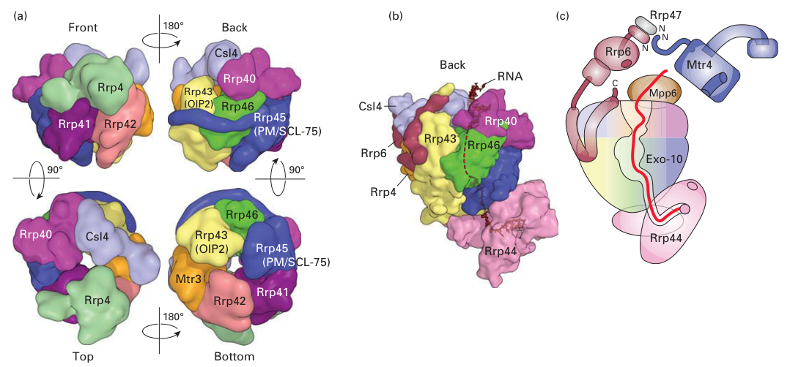
| Rrp4 | Rrp4 |
| Rrp40 | Rrp40 |
| Rrp41 | Rrp41 |
| Rrp42 | Rrp42 |
| Rrp43 (OIP2) | Rrp43（OIP2） |
| Rrp44 | Rrp44 |
| Rrp45 (PM/S CL-75) | Rrp45（PM/Scl-75） |
| Rrp46 | Rrp46 |
| Rrp6 | Rrp6 |
| Rrp47 | Rrp47 |
| Mtr3 | Mtr3 |
| Mtr4 | Mtr4 |
| Mpp6 | Mpp6 |
| Csl4 | Csl4 |
| Exo-10 | Exo-10 |
| RNA | RNA |
| Front | 前视图 |
| Back | 后视图 |
| Top | 顶部 |
| Bottom | 底部 |
达到高浓度。对来自几种细胞类型的RNA测序显示，反义RNA中由大多数后生动物富含AT的DNA（哺乳动物约60%为AT）转录出的AAUAAA多聚腺苷酸化信号序列，出现频率高于向编码区正义方向转录的转录本。由于哺乳动物DNA中AT含量高，反义转录本中的AAUAAA序列之后常常跟着一段富含U的序列，后者可能充当真正的pre-mRNA切割/多聚腺苷酸化信号的下游元件（见图10-15）。这些切割/多聚腺苷酸化信号在进入编码区的转录本中出现得少得多。当它们确实出现在pre-mRNA序列（无论在外显子还是内含子）中时，通常位于U1 snRNA共有碱基配对位点的下游；已发现U1 snRNA能抑制附近的AAUAAA序列之后的切割/多聚腺苷酸化。U1 snRNA的这一功能或许有助于解释为什么U1 snRNP比其他剪接体snRNP丰度高出许多。
用于加工mRNA 3′端的切割/多聚腺苷酸化信号则并非如此，因为U1 snRNA结合在末端内含子的5′端，远离poly(A)位点。此外，如上文所述，RNA聚合酶II的转录通常在pre-mRNA被切割和多聚腺苷酸化之后约2 kb内终止。因此，反义转录本中poly(A)位点的富集以及U1 snRNA结合位点的相对缺乏，可能导致这些转录本中的大多数在转录起始位点约2 kb之内就被切割/多聚腺苷酸化因子切割（见图10-15），随后转录终止（图10-17）。被切割的反义转录本，很可能由降解从pre-mRNA剪接去除的内含子、pre-mRNA切割/多聚腺苷酸化位点下游序列以及从rRNA和tRNA前体加工去除的序列（见下文）的那些相同的核外切核酸酶来降解（见图10-1）。因此，尽管有大量聚合酶朝"错误"方向转录，以这种方式产生的大多数转录本都被迅速降解。
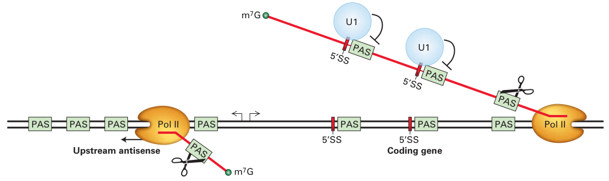
| Pol II | Pol II |
| PAS | PAS |
| 5′SS | 5′SS |
| U1 | U1 |
| m7G | m7G |
| Upstream antisense | 上游反义转录本 |
| Coding gene | 编码基因 |
| XRN1 | XRN1 |
- 在真核细胞的细胞核中，pre-mRNA与hnRNP蛋白结合，并经过5′加帽、3′切割与多聚腺苷酸化以及剪接的加工，然后才被转运到细胞质（见图10-2）。
- 转录起始后不久，加帽酶便与RNA聚合酶II的羧基端结构域（CTD）结合——在转录起始过程中，TFIIH会在该结构域七肽重复序列的丝氨酸5位将其多次磷酸化。当新生转录本达到约25个核苷酸的长度时，这些酶便迅速给它加上5′帽。参与RNA剪接以及3′切割和多聚腺苷酸化的其他RNA加工因子，则在七肽重复序列的丝氨酸2位被磷酸化时与CTD结合，从而提高转录延伸的速率。因此，只有在RNA加工因子与CTD结合之后，转录才会以高速率进行——此时它们已就位，可在新生pre-mRNA从聚合酶表面伸出时与之相互作用。
- 五种不同的snRNP通过碱基配对彼此之间以及与pre-mRNA相互作用，形成剪接体（见图10-11）。这个极其巨大的核糖核蛋白复合体催化两次转酯反应，把两个外显子连接起来，并以套索结构的形式切除内含子，后者随后被降解（见图10-8）。
- 结合在外显子剪接增强子序列上的SR蛋白，对于界定高等生物大型pre-mRNA中的外显子至关重要。SR蛋白、snRNP与剪接因子之间构成的相互作用网络形成跨外显子识别复合体，从而指定正确的剪接位点（见图10-13）。
- 据认为，剪接体中的snRNA整体三级结构类似于II类自我剪接内含子。
- 对于高等生物中的长转录单位，外显子的剪接通常在pre-mRNA仍在形成时就开始。而形成mRNA 3′端的切割和多聚腺苷酸化，则发生在poly(A)切割位点被转录之后。
- 在大多数蛋白编码基因中，一个保守的AAUAAA多聚腺苷酸化信号位于发生切割和多聚腺苷酸化的poly(A)位点稍上游。poly(A)位点下游的一段富含GU或U的序列有助于提高切割和多聚腺苷酸化的效率。
- 一个包含poly(A)聚合酶（PAP）在内的多蛋白复合体执行pre-mRNA的切割和多聚腺苷酸化。核poly(A)结合蛋白PABPN1刺激PAP添加A残基，并在poly(A)尾达到约250个残基后使其停止添加（见图10-15）。
- 被切除的内含子以及切割/多聚腺苷酸化位点下游的RNA，主要由外切体降解；外切体是含有内部3′→5′外切核酸酶的多蛋白复合体。外切体还降解加工不当的pre-mRNA。
10.2 pre-mRNA加工的调控
既然我们已经了解pre-mRNA如何被加工成成熟、有功能的mRNA，接下来就来看看这一过程的调控如何参与基因控制。回忆第8章所述，高等真核生物DNA中同时编码有简单转录单位与复杂转录单位。由前者产生的初级转录本只含一个poly(A)位点，即使存在多个内含子，也只呈现一种RNA剪接模式；因此简单转录单位只编码一种mRNA。相反，由复杂转录单位（约占人类全部转录单位的95%）产生的初级转录本可以以不同方式加工，产生编码不同蛋白质的多种mRNA（见图8-3）。
可变剪接产生含有不同外显子组合的转录本
高等生物中很大一部分转录单位编码经可变剪接的mRNA，而且剪接方式不同的mRNA在不同细胞类型中表达——这一发现揭示，RNA剪接的调控是高等真核生物中一种重要的基因控制机制。虽然已知许多pre-mRNA在可变poly(A)位点被切割的例子，但就从一个复杂转录单位表达不同蛋白质而言，不同外显子的可变剪接是更常见的机制。例如第5章曾提到，成纤维细胞产生一种类型的细胞外蛋白纤连蛋白，而肝细胞产生另一种类型。两种纤连蛋白同种型都由同一个转录单位编码，但该转录本在这两类细胞中发生不同的剪接，产生两种不同的mRNA（见图5-16）。在其他情况下，同一转录本的可变加工也可因不同的发育信号或环境信号而在同一细胞类型中同时发生。我们先讨论一个研究得最清楚的受调控RNA加工的例子，然后简要考察RNA剪接在神经系统发育中的后果。
级联式受调控RNA剪接控制果蝇的性别分化
受调控的pre-mRNA可变剪接最早的一个例子，来自对果蝇性别分化的研究。正常果蝇性别分化所需的基因，最初是通过分离在该过程中有缺陷的果蝇突变体而鉴定出来的。当对野生型基因所编码的蛋白质进行生化鉴定时，发现其中两种蛋白质调控果蝇胚胎中一个级联式的可变RNA剪接过程。较新的研究则揭示了这些蛋白质如何调控RNA加工，并最终产生两种不同的性别特异性转录抑制因子，它们分别抑制异性特征的发育。
由sex-lethal基因编码的Sex-lethal蛋白（Sxl）是该级联中第一个发挥作用的蛋白质（图10-18）。Sxl蛋白只存在于雌性胚胎中。
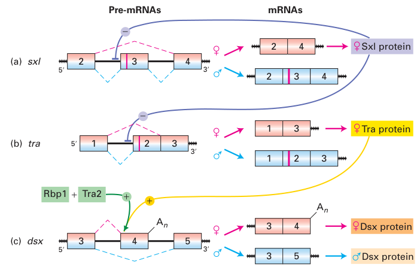
| sxl | sxl |
| tra | tra |
| dsx | dsx |
| Pre-mRNAs | 前体mRNA |
| mRNAs | mRNA |
| Sxl protein | Sxl蛋白 |
| Tra protein | Tra蛋白 |
| Tra2 | Tra2 |
| Dsx protein | Dsx蛋白 |
| Rbp1 | Rbp1 |
在发育早期，Sxl基因由一个只在雌性胚胎中才有活性的启动子转录。在发育后期，这个雌性特异性启动子被关闭，而sex-lethal的另一个启动子在雄性和雌性胚胎中都变得有活性。然而在雄性胚胎中，由于缺少早期的Sxl蛋白，sex-lethal pre-mRNA的外显子2被剪接到外显子3，产生的mRNA在序列前部含有一个终止密码子。净结果是，雄性胚胎无论在发育早期还是后期都不产生有功能的Sxl蛋白。
相反，早期雌性胚胎中表达的Sxl蛋白调控sex-lethal pre-mRNA的剪接，从而产生有功能的sex-lethal mRNA（图10-18a）。Sxl实现这一点的方式是：结合到该pre-mRNA中靠近外显子2与外显子3之间内含子3′端的一段序列上，从而阻断U2AF和U2 snRNP与雄性中所用的相邻3′剪接位点的正常结合（见图10-11）。其结果是，结合在外显子2与外显子3之间内含子5′端的U1 snRNP，转而与结合在外显子3与外显子4之间内含子3′端分支点上的U2 snRNP组装成剪接体，导致外显子2剪接到外显子4，而外显子3被跳过。Sxl在sex-lethal pre-mRNA中的结合位点被称为内含子剪接沉默子，因为它位于内含子中，且其功能是阻断（或称"沉默"）某个剪接位点的使用。由此产生的雌性特异性sex-lethal mRNA被翻译成有功能的Sxl蛋白，后者通过继续引起外显子3的跳过而强化其在雌性胚胎中的自身表达。雄性胚胎中缺少Sxl蛋白，因而外显子3得以被包含，随之也就包含了外显子3 5′端附近那个阻止有功能Sxl蛋白翻译的终止密码子（见图10-18a）。
Sxl蛋白还调控由transformer基因转录的pre-mRNA的可变剪接（图10-18b）。在不表达Sxl的雄性胚胎中，外显子1剪接到外显子2，而外显子2含有一个阻止有功能Transformer（Tra）蛋白合成的终止密码子。然而在雌性胚胎中，Sxl蛋白结合到外显子1与外显子2之间内含子3′端的一个内含子剪接沉默子上，阻断了U2AF在该位点的结合。Sxl与transformer pre-mRNA的相互作用由该蛋白中两个相邻的RRM结构域介导（见图10-5）。当Sxl结合后，U2AF转而结合到pre-mRNA中更靠3′的一个亲和力较低的位点；结果外显子1剪接到这个可变3′剪接位点，导致连同其终止密码子在内的外显子2被跳过。由此产生的雌性特异性transformer mRNA还含有其他组成型剪接的外显子，它被翻译成有功能的Tra蛋白。
最后，Tra蛋白调控由doublesex（dsx）基因转录的pre-mRNA的可变加工（图10-18c）。在雌性胚胎中，由Tra与两种组成型表达的SR蛋白Rbp1、Tra2组成的复合物指导外显子3剪接到外显子4，同时还促进外显子4 3′端可变poly(A)位点处的切割/多聚腺苷酸化，从而产生一种较短的雌性特异性Dsx蛋白。在不产生Tra蛋白的雄性胚胎中，外显子4被跳过，于是外显子3剪接到外显子5。外显子5组成型地剪接到外显子6，后者在其3′端被多聚腺苷酸化——从而产生一种较长的雄性特异性Dsx蛋白。Tra在外显子4中结合的RNA序列被称为外显子剪接增强子，因为它增强附近剪接位点的剪接。
如图10-18所示的级联式受调控RNA加工的最终结果是，雄性与雌性胚胎中表达不同的Dsx蛋白。这两种蛋白都是转录因子，它们共享由外显子1–3编码的N端序列（包括一个共同的DNA结合结构域），但C端序列不同：雌性中由外显子4编码，雄性中由外显子5及其下游的其他外显子编码。雌性蛋白特有的C端充当强激活结构域，而雄性蛋白的C端则是强抑制结构域。因此，雌性Dsx蛋白激活带有该转录因子结合位点的基因——包括诱导雌性特征发育的基因，而雄性Dsx蛋白则抑制同样的靶基因。
图10-19示出目前认为Tra/Tra2/Rbp1复合物与doublesex pre-mRNA相互作用的方式。Rbp1和Tra2都是SR蛋白，但在缺少Tra蛋白时它们不与外显子4相互作用。Tra蛋白与Rbp1、Tra2的相互作用，导致这三种蛋白协同结合到外显子4中的六个外显子剪接增强子上。随后，结合上去的Tra2和Rbp1蛋白促进U2AF与U2 snRNP结合到外显子3与外显子4之间内含子的3′端，正如其他SR蛋白对组成型剪接外显子所做的那样（见图10-13）。Tra/Tra2/Rbp1复合物还增强切割/多聚腺苷酸化复合物与外显子4 3′端的结合，这是因为结合在某个3′剪接位点上的U2 snRNP及其相关蛋白，能通过协同结合相互作用增强切割/多聚腺苷酸化因子（见图10-15）与间距适当的多聚腺苷酸化信号的结合。
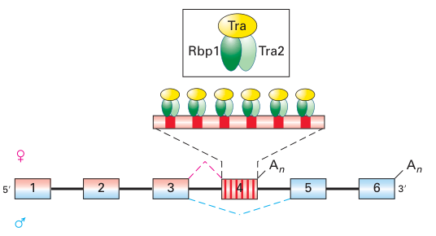
| Tra | Tra |
| Tra2 | Tra2 |
| Rbp1 | Rbp1 |
剪接抑制因子与激活因子控制可变位点的剪接
从图10-18可以明显看出，果蝇的Sxl蛋白与Tra蛋白作用相反：Sxl阻止剪接，使外显子被跳过；而Tra促进剪接。类似蛋白质的作用或许可以解释人类纤连蛋白同种型的细胞类型特异性表达（见图5-16）。例如，肝细胞中表达的一种类Sxl剪接抑制因子，可能结合到纤连蛋白pre-mRNA中EIIIA和EIIIB外显子的剪接位点上，使它们在RNA剪接过程中被跳过。反之，成纤维细胞中表达的一种类Tra剪接激活因子则可能激活与这些外显子相关的剪接位点，使它们被包含进成熟mRNA。对若干系统的实验研究表明，某个外显子在某些细胞类型中被包含、而在另一些细胞类型中被跳过，是多种剪接抑制因子（通常为hnRNP蛋白）与增强因子（通常为SR蛋白）共同作用的结果。抑制因子的RNA结合位点也可出现在外显子中，此时称为外显子剪接沉默子；剪接激活因子的结合位点也可出现在内含子中，此时称为内含子剪接增强子。
外显子的可变剪接在神经系统中尤为常见，它产生了脊椎动物和无脊椎动物中许多神经元发育与功能所需蛋白质的多种同种型。编码这些蛋白质的基因，其初级转录本往往表现出复杂的剪接模式，可产生若干种不同的mRNA，它们在中枢神经系统内不同的解剖位置表达。这里我们考察两个出色的例子，以说明该过程在神经功能中的关键作用。
脊椎动物毛细胞中K+通道蛋白的表达 在脊椎动物的内耳中，单个毛细胞（一种具纤毛的神经元）对某一特定频率的声音反应最强。对低频（约50 Hz）敏感的细胞位于构成内耳的管状耳蜗的一端，对高频（约5000 Hz）反应的细胞则位于另一端（图10-20a）。两端之间的细胞对介于这两个极端之间的频率梯度作出反应。在爬行动物和鸟类中，毛细胞调谐的一个组成部分是细胞内Ca2+浓度升高引起的K+离子通道开放。通道开放所需的Ca2+浓度决定了膜电位振荡的频率，从而决定了细胞所调谐的频率。
编码这种Ca2+激活的K+通道的基因可表达为多种经可变剪接的mRNA，它们编码在不同Ca2+浓度下开放的蛋白质。反应频率不同的毛细胞，依据其在耳蜗长轴上的位置表达不同的通道蛋白同种型。该蛋白的序列变化非常复杂：mRNA中至少有八个区域可在若干可变外显子中选用其一，从而有可能表达576种同种型（图10-20b）。
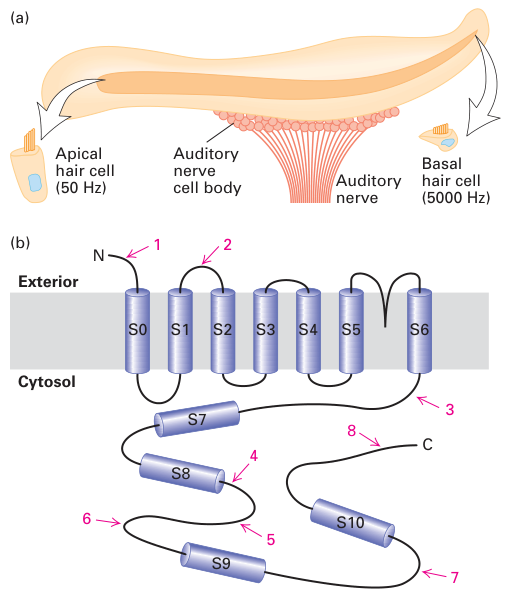
| Exterior | 外侧 |
| Cytosol | 胞质 |
| Apical hair cell (50 Hz) | 顶端毛细胞（50 Hz） |
| Basal hair cell (5000 Hz) | 基底毛细胞（5000 Hz） |
| Auditory nerve cell body | 听神经细胞体 |
| S0 | S0 |
| S1 | S1 |
| S2 | S2 |
| S3 | S3 |
| S4 | S4 |
| S5 | S5 |
| S6 | S6 |
| S7 | S7 |
| S8 | S8 |
| S9 | S9 |
| S10 | S10 |
对单个毛细胞mRNA的PCR分析表明，每个毛细胞都表达多种K+通道mRNA的混合物，其中占优势的同种型因细胞在耳蜗上的位置不同而异。这一精巧的安排提示，K+通道pre-mRNA的剪接是响应细胞外信号而受调控的，这些信号告知细胞其在耳蜗上的位置。
其他研究表明，在大鼠中，当神经元因与之相互作用的神经元传来突触活动而发生去极化、从而激活某种特定的蛋白激酶时，Ca2+激活的K+通道pre-mRNA中某个可变剪接位点的剪接会受到抑制。这一观察引出一个可能性：针对该剪接位点的剪接抑制因子在被这种蛋白激酶磷酸化时被激活，而该激酶的活性又受突触活动调控。由于hnRNP和SR蛋白会被磷酸化及其他翻译后
修饰广泛修饰。因此，通过剪接因子的翻译后修饰对可变RNA剪接进行复杂调控，很可能在调节神经元功能中起重要作用。
在脊椎动物神经元中已观察到许多与编码耳蜗K+通道的基因类似的基因；在这些情况下，某一类型神经元中由特定基因共表达的各种可变剪接mRNA，在中枢神经系统不同区域以不同的相对浓度存在。神经元中所表达基因转录区内微卫星重复数目的扩增，可以改变由多个基因转录的可变剪接mRNA的相对浓度。第8章我们讨论过DNA复制过程中的倒退滑移如何导致微卫星重复扩增（见图8-5）。至少有14种不同类型的神经疾病是由神经元中表达的转录单位内微卫星区域扩增所致。由此在这些神经元的核内pre-mRNA中产生的长重复简单序列区域，会导致
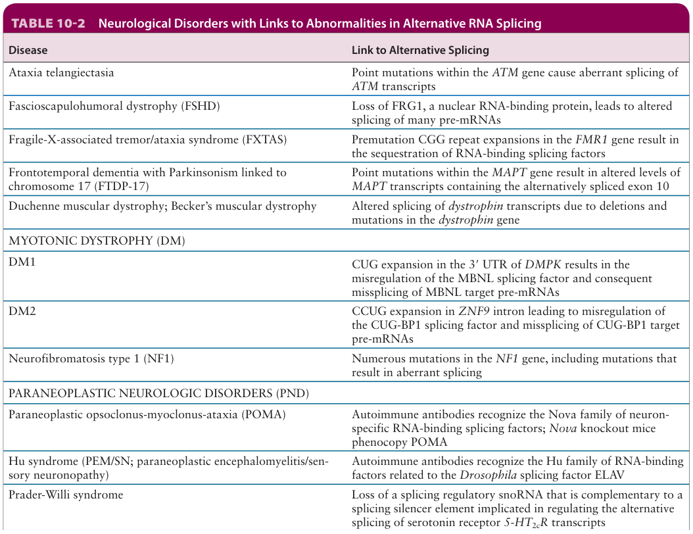
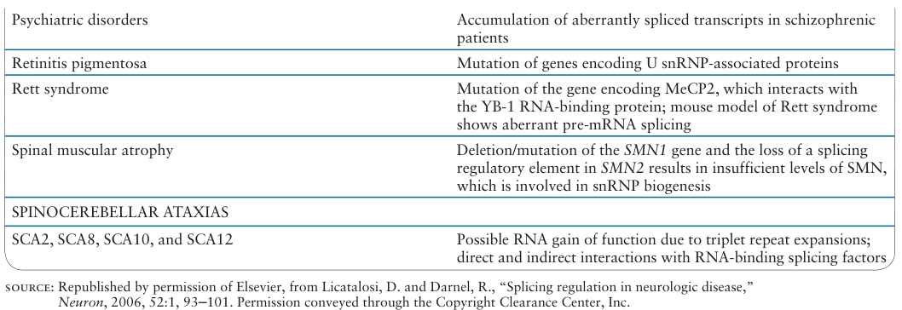
| Disease | 疾病 |
| Link to Alternative Splicing | 与可变剪接的关联 |
| Ataxia telangiectasia | 共济失调毛细血管扩张症 |
| Fascioscapulohumoral dystrophy (FSHD) | 面肩肱型肌营养不良（FSHD） |
| Fragile-X-associated tremor/ataxia syndrome (FXTAS) | 脆性X相关震颤/共济失调综合征（FXTAS） |
| Frontotemporal dementia with Parkinsonism linked to chromosome 17 (FTDP-17) | 与17号染色体连锁的帕金森综合征型额颞叶痴呆（FTDP-17） |
| Duchenne muscular dystrophy; Becker’s muscular dystrophy | 杜兴肌营养不良；贝克肌营养不良 |
| MYOTONIC DYSTROPHY (DM) | 强直性肌营养不良（DM） |
| DM1 | DM1 |
| DM2 | DM2 |
| Neurofibromatosis type 1 (NF1) | 1型神经纤维瘤病（NF1） |
| PARANEOPLASTIC NEUROLOGIC DISORDERS (PND) | 副肿瘤性神经系统疾病（PND） |
| Paraneoplastic opsoclonus-myoclonus-ataxia (POMA) | 副肿瘤性眼阵挛-肌阵挛-共济失调（POMA） |
| Hu syndrome (PEM/SN; paraneoplastic encephalomyelitis/sensory neuronopathy) | Hu综合征（PEM/SN；副肿瘤性脑脊髓炎/感觉神经元病） |
| Prader-Willi syndrome | Prader-Willi综合征 |
| Psychiatric disorders | 精神疾病 |
| Retinitis pigmentosa | 视网膜色素变性 |
| Rett syndrome | Rett综合征 |
| Spinal muscular atrophy | 脊髓性肌萎缩 |
| SPINOCEREBELLAR ATAXIAS | 脊髓小脑性共济失调 |
| SCA2, SCA8, SCA10, and SCA12 | SCA2、SCA8、SCA10和SCA12 |
可变剪接mRNA相对浓度的异常。例如，这类疾病中最常见的强直性肌营养不良，在部分患者中源于某一转录本中CUG重复拷贝数增加，在另一些患者中则源于另一转录本中CCUG重复拷贝数增加。当这些重复的数目增至正常重复数的10倍或更多时，可观察到两种结合这些重复序列的hnRNP蛋白功能异常。造成异常的原因可能是：在这些患者神经元的核内，异常高浓度的重复序列结合并占据了这些hnRNP，使它们无法与其他pre-mRNA结合。这些hnRNP被隔绝，导致多种原本受这些hnRNP蛋白调控的pre-mRNA中不同可变剪接位点的剪接速率发生改变。由于可变剪接的正确调控对神经元的正常功能至关重要，多种人类神经疾病都与核内RNA结合蛋白的功能异常，以及产生剪接因子结合位点的微卫星重复扩增有关（表10-2）。■
（续）
果蝇视网膜神经元中Dscam同种型的表达 迄今发现的最极端的受调控可变RNA加工例子，出现在果蝇Dscam基因的表达中。该基因的突变会干扰果蝇发育过程中视网膜轴突与树突之间形成的正常突触连接。对Dscam基因的分析表明，它含有四组外显子，最终成熟mRNA在每一组中只包含若干可能外显子中的一个。该基因总共含95个外显子（图10-21），可产生38,016种可能的可变剪接同种型！带有只能以约22,000种不同方式剪接的该基因版本的果蝇突变体，在神经元之间的连接性上表现出特定的缺陷。这些结果表明，通过受调控的RNA剪接表达大多数可能的Dscam同种型，有助于确定果蝇脑中神经元之间数以千万计的不同特异性
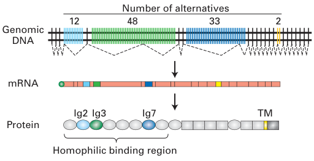
| Genomic DNA | 基因组DNA |
| mRNA | mRNA |
| Protein | 蛋白质 |
| Ig2 | Ig2 |
| Ig3 | Ig3 |
| Ig7 | Ig7 |
| TM | TM |
| Homophilic binding region | 同源结合区 |
| Number of alternatives | 可变剪接方式数 |
突触连接。换言之，脑中神经元的正确连线需要受调控的RNA剪接。
RNA编辑改变某些pre-mRNA的序列
20世纪80年代中期，对来自多种生物的大量cDNA克隆及其对应基因组DNA的测序，意外地发现了另一种类型的pre-mRNA加工。在这种称为RNA编辑的加工中，pre-mRNA的序列被改变；结果，成熟mRNA的序列与其在基因组DNA中编码它的外显子的序列不同。
RNA编辑在原生动物的线粒体中、在植物的线粒体和叶绿体中广泛存在。在某些致病性锥虫的线粒体中，有些mRNA一半以上的序列与相应初级转录本的序列不同。特定数目U的添加与缺失，遵循由碱基配对的短"引导"RNA提供的模板进行。这些RNA由数千个小的环状DNA分子编码，而这些小环状DNA分子又串联在数目少得多的大DNA分子上。这类原生动物为何采用如此繁复（巴洛克式）的机制来编码线粒体蛋白，原因尚不清楚。但这一体系确实是一个潜在的药物靶点：可以抑制该微生物所必需、而其人类或其他脊椎动物宿主细胞中并不存在的那些复杂加工酶。
在高等真核生物中，RNA编辑要罕见得多，迄今只观察到单碱基的改变。然而在某些情况下，这种微小的编辑具有重要的功能后果。哺乳动物中一个重要的RNA编辑例子涉及APOB基因，它编码一种血清蛋白的两种可变形式，而该血清蛋白在胆固醇的摄取与运输中处于核心地位。因此，它在导致动脉粥样硬化的致病过程中十分重要，而动脉粥样硬化这种动脉疾病是发达国家的主要死因。APOB基因既编码在肝细胞（肝脏的主要细胞类型）中表达的血清蛋白载脂蛋白B-100（apoB-100），也编码在肠上皮细胞中表达的apoB-48。240 kDa的apoB-48对应于500 kDa的
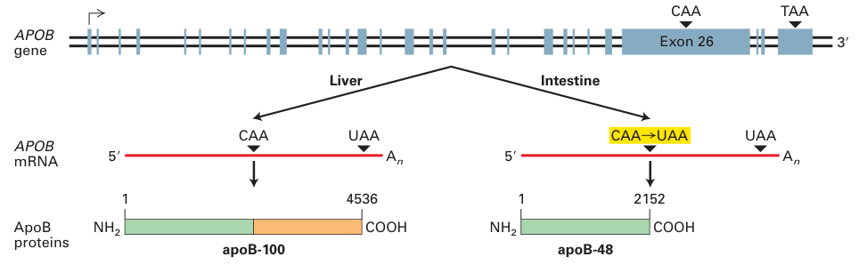
| APOB gene | APOB基因 |
| APOB mRNA | APOB mRNA |
| ApoB proteins | ApoB蛋白 |
| Exon 26 | 外显子26 |
| Liver | 肝 |
| Intestine | 肠 |
| apoB-100 | apoB-100 |
| apoB-48 | apoB-48 |
| CAA | CAA |
| UAA | UAA |
apoB-100。两种ApoB蛋白都是我们在第7章所述、在血清中运输脂质的大型脂蛋白复合物的组分。然而，只有表面带有apoB-100的低密度脂蛋白（LDL）复合物，才能通过结合存在于所有细胞上的LDL受体而将胆固醇递送至身体各组织（见图14-27和图14-29）。
ApoB两种形式的细胞类型特异性表达，源于ApoB pre-mRNA的编辑，使序列中第6666位的核苷酸由C变为U。这一改变只发生在肠道细胞中，它把编码谷氨酰胺的CAA密码子转变为UAA终止密码子，从而导致较短的apoB-48的合成（图10-22）。对执行C6666→U转录后脱氨基作用的酶进行部分纯化后的研究表明，该酶能够识别并编辑短至26个核苷酸的RNA，只要其中含有ApoB初级转录本中C6666周围的序列。
- 由于初级转录本的可变剪接、可变启动子的使用以及在不同poly(A)位点的切割，同一个基因可在不同细胞类型中或不同发育阶段表达出不同的mRNA（见图10-18）。
- 可变剪接可由RNA结合蛋白调控，这些蛋白结合到受调控剪接位点附近的特定序列上。剪接抑制因子可以空间阻碍剪接因子与pre-mRNA中特定位点的结合，或抑制其功能。剪接激活因子通过与剪接因子相互作用增强剪接，从而促进它们与受调控剪接位点的结合。剪接抑制因子所结合的RNA序列，根据其位于内含子还是外显子，分别称为内含子剪接沉默子或外显子剪接沉默子。剪接激活因子所结合的RNA序列则称为内含子剪接增强子或外显子剪接增强子。
- 在RNA编辑中，pre-mRNA的核苷酸序列在细胞核内被改变。在脊椎动物中这一过程相对罕见，只观察到C到U的单碱基改变，但这些改变可以通过改变被编辑密码子所编码的氨基酸而产生重要后果（见图10-22）。
10.3 mRNA跨核被膜的运输
细胞核中已完成加工的mRNA仍与hnRNP蛋白结合，形成称为核mRNP的复合物。mRNA在被翻译成它所编码的蛋白质之前，必须先由细胞核输出到细胞质。核被膜是分隔细胞核与细胞质的双层膜（见图1-12）。与包围细胞的质膜一样，两层核膜各由一层不透水的磷脂双分子层和多种与之结合的蛋白质构成。mRNP以及其他大分子，包括tRNA和核糖体亚基，都通过核孔复合物（NPC）穿越核被膜。本节聚焦于mRNP经NPC的输出，以及使这一步骤能在一定程度上受到调控的机制。mRNP、蛋白质和其他货物经NPC的运输将在第13章中更详细地讨论。
NPC镶嵌在核被膜中，呈圆柱形，直径约30 nm。大于40–60 kDa的蛋白质和RNP必须在转运蛋白的协助下才能选择性地跨越核被膜；这些转运蛋白既与它们结合，又与NPC中央通道中的组分可逆地相互作用。mRNP由mRNP输出受体运输通过NPC。
该输出受体是一个异二聚体，由一个大亚基（称为核输出因子1，NXF1）和一个小亚基（核输出转运蛋白1，NXT1）组成。NXF1通过与mRNP复合物中的RNA和蛋白质结合，与核mRNP相连。这些蛋白质中最重要的一种是REF（RNA输出因子），它是前文讨论过的外显子连接复合物的组分，结合于每个外显子-外显子连接处5′端约20个核苷酸处（图10-23）。mRNP输出受体还与结合于外显子剪接增强子的SR蛋白结合。因此，与外显子结合的SR蛋白既指导前体mRNA的剪接，也指导已完成加工的mRNA经NPC输出到细胞质。mRNP很可能沿其全长被多个mRNP输出受体结合，这些输出受体与填充NPC中央通道的无规蛋白结构域可逆地相互作用（见第13章）。蛋白质纤丝从NPC核心支架伸入核质，形成NPC核篮（见图10-23）。另一些蛋白质纤丝从NPC的胞质面伸入细胞质。这两组纤丝都协助mRNP的输出。Gle2是一种接头蛋白，能同时与NXF1和核篮中的一种蛋白质可逆结合，它把核mRNP带到NPC处，为输出做好准备。NPC胞质纤丝中的一种蛋白质结合一种RNA解旋酶（Dbp5），该解旋酶的作用是
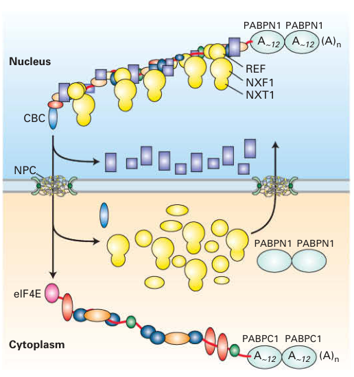
| Cytoplasm | 细胞质 |
| Nucleus | 细胞核 |
| NPC | NPC |
| NXF1 | NXF1 |
| NXT1 | NXT1 |
| CBC | CBC |
| REF | REF |
| PABPN1 | PABPN1 |
| PABPC1 | PABPC1 |
| eIF4E | eIF4E |
在mRNP到达细胞质时促使NXF1/NXT1和其他hnRNP蛋白从mRNP上解离。
在称为mRNP重塑的过程中，随着mRNP经NPC运输，核mRNP中与mRNA结合的蛋白质被替换为另一组不同的蛋白质（见图10-23）。有些核mRNP蛋白在运输早期即解离，留在细胞核中与新合成的初生前体mRNA结合。另一些核mRNP蛋白则在整个穿越NPC的过程中始终与mRNP相伴，直到复合物到达细胞质才与mRNP解离。属于后一类的蛋白质包括NXF1/NXT1 mRNP输出受体、结合在5′帽上的核帽结合复合物（CBC），以及结合在poly(A)尾上的PABPN1。如上所述，这些蛋白质在NPC的细胞质一侧，通过结合于NPC胞质纤丝的Dbp5 RNA解旋酶的作用从mRNP上解离。随后，这些蛋白质被重新输入细胞核，如第13章中对其他核蛋白所述，在那里它们可以参与另一个mRNP的输出。在细胞质中，帽结合翻译起始因子eIF4E取代了结合在核mRNP 5′帽上的CBC（见图5-23）。在脊椎动物中，核poly(A)结合蛋白PABPN1被细胞质poly(A)结合蛋白PABPC1取代（后者如此命名，以区别于核内的PABPN1）。芽殖酵母中只有一种PABP，同时存在于细胞核和细胞质中。
SR蛋白的磷酸化与去磷酸化赋予mRNP跨核孔复合物输出的方向性 对酿酒酵母（S. cerevisiae）的研究表明，mRNP由细胞核输出到细胞质的方向，受mRNP接头蛋白（如REF）磷酸化与去磷酸化的控制，这类接头蛋白协助NXF1/NXT1 mRNP输出受体与mRNP结合。在其中一个例子中，一种酵母SR蛋白（Npl3）充当中介，促进酵母mRNP输出受体的结合（图10-24）。该SR蛋白以磷酸化形式首先与初生前体mRNA结合。当3′切割与多聚腺苷酸化完成后，这一接头蛋白被一种对mRNP输出必需的特定核蛋白磷酸酶去磷酸化。只有去磷酸化的接头蛋白才能结合mRNP输出受体，从而把mRNP的输出与正确的多聚腺苷酸化偶联起来。这一机制是mRNA"质量控制"的一种形式。如果初生mRNP未被正确加工，它就不会被使Npl3去磷酸化的磷酸酶识别，因而不能被mRNP输出受体结合，也就不能从细胞核输出。它转而会被外切体降解——外切体是降解细胞核与细胞质中未受保护RNA的多蛋白复合物（见图10-1和图10-16）。
输出到细胞质后，Npl3 SR蛋白被一种特定的细胞质蛋白激酶磷酸化。
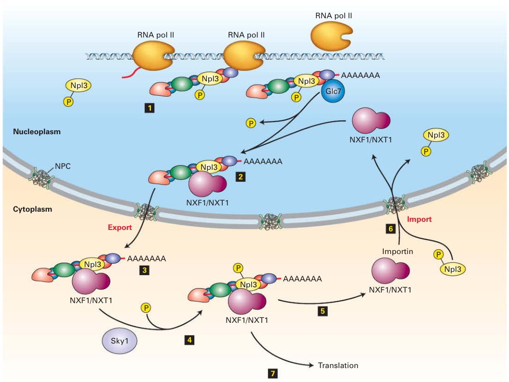
| Cytoplasm | 细胞质 |
| Nucleoplasm | 核质 |
| NPC | NPC |
| RNA pol II | RNA聚合酶II |
| Npl3 | Npl3 |
| Glc7 | Glc7 |
| Sky1 | Sky1 |
| Importin | 输入蛋白 |
| NXF1/NXT1 | NXF1/NXT1 |
| Export | 输出 |
| Import | 输入 |
| Translation | 翻译 |
这种磷酸化使Npl3连同mRNP输出受体一起从mRNP上解离。这样一来，RNA加工完成后核内mRNP接头蛋白的去磷酸化，以及它们在细胞质中的磷酸化及由此导致的解离，使得mRNP输出受体–mRNP复合物在其形成的细胞核中浓度较高，而在其解离的细胞质中浓度较低。因此，mRNP输出的方向可能是由mRNP输出受体–mRNP复合物跨NPC的简单扩散所驱动的，即顺着该复合物的浓度梯度，从核内高浓度处扩散到细胞质低浓度处。
昆虫幼虫唾液腺中的巴氏环使mRNP经NPC的输出得以直接观察 昆虫摇蚊（Chironomus tentans）的幼虫唾液腺，为hnRNP的形成及其经NPC的输出提供了一个良好的电镜研究模型系统。在这些幼虫中，称为巴氏环的大型染色体膨突上的基因被大量转录为初生前体mRNA，后者与hnRNP蛋白结合，并被加工成卷曲的mRNP，最终mRNA长度约为75 kb（图10-25a、b）。这些巨大的mRNA编码大的
黏胶蛋白，使发育中的幼虫附着在叶片上。前体mRNA在巴氏环hnRNP中加工完成后，生成的mRNP经NPC进入细胞质。这些细胞切片的电镜照片显示，mRNP在通过NPC的过程中解卷曲，随后在进入细胞质时与核糖体结合。这种解卷曲很可能是mRNP重塑的结果，而重塑由细胞质激酶对mRNP蛋白的磷酸化，以及上一节讨论过的、结合在NPC胞质纤丝上的RNA解旋酶的作用所引起。mRNP在运输过程中与核糖体结合的观察结果表明，5′端率先通过NPC。对巴氏环mRNP经核孔复合物运输的详细电镜研究，导出了图10-25c所示的模型。
剪接体中的前体mRNA不会从细胞核输出 只有完成加工的成熟mRNA才能从细胞核输出，这一点至关重要，因为翻译含有内含子的未完全加工的前体mRNA会产生有缺陷的蛋白质，可能干扰细胞的正常功能。为防止这种情况，与剪接体中小核核糖核蛋白（snRNP）结合的前体mRNA通常被阻止运输到细胞质。
在证明这种限制的一类实验中，将一个编码含单个内含子的前体mRNA的基因（该内含子通常会被剪接去除）加以突变，使其偏离共有剪接位点序列。突变内含子两端5′或3′的恒定剪接位点碱基，都会导致前体mRNA被snRNP结合形成剪接体；然而RNA剪接被阻断，前体mRNA滞留在细胞核中。相反，若在同一前体mRNA中同时突变5′和3′剪接位点，则未剪接的前体mRNA会被输出，尽管效率低于已剪接的mRNA，这很可能是由于缺乏外显子连接复合物。当两个剪接位点都被突变时，前体mRNA不能被snRNP有效结合，因此其输出也就不被阻断。
酵母中的研究表明，NPC核篮的一个蛋白质组分是把与snRNP结合的前体mRNA滞留在细胞核中所必需的。如果缺失该蛋白质，或缺失与之结合的核篮蛋白，未剪接的前体mRNA就会被输出。因此，这些蛋白质阻止与snRNP结合的hnRNP穿越NPC。
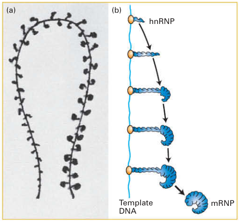
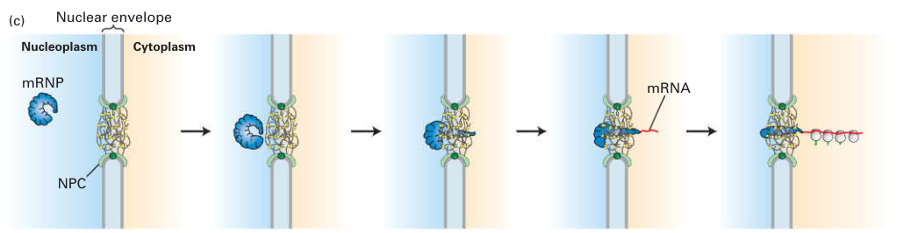
| Cytoplasm | 细胞质 |
| Nucleoplasm | 核质 |
| Nuclear envelope | 核膜 |
| NPC | NPC |
| Template DNA | 模板DNA |
| mRNA | mRNA |
| mRNP | mRNP |
| hnRNP | hnRNP |
地中海贫血是一种遗传病，会导致珠蛋白水平异常低下；许多地中海贫血病例是由珠蛋白基因剪接位点的突变引起的，这些突变降低剪接效率，但不妨碍前体mRNA与snRNP结合。由此产生的未剪接珠蛋白前体mRNA滞留在红系前体细胞的细胞核中（见图16-7），并被迅速降解。■
HIV Rev蛋白调控未剪接病毒mRNA的运输 如前所述，含有成熟功能性mRNA的mRNP经NPC从细胞核运输到细胞质，涉及一套对基因表达至关重要的复杂机制（见图10-23、图10-24和图10-25）。从理论上说，对这一运输的调控可以提供另一种基因控制手段，不过它似乎相对罕见。事实上，已知的受调控mRNA输出实例只出现在细胞对引起蛋白质变性的条件（如热激）作出应答时，或出现在病毒感染期间——此时病毒诱导的mRNP核输出改变使病毒复制达到最大。下面我们介绍由人类免疫缺陷病毒（HIV）所编码的一种蛋白质介导的mRNP输出调控。
HIV是一种逆转录病毒，它把自身RNA基因组的DNA拷贝整合到宿主细胞DNA中（见图5-48）。整合后的病毒DNA，即原病毒，含有一个单一的转录单元，由细胞的RNA聚合酶II转录成单一初级转录本。HIV转录本可通过不同的可变剪接方式，产生三类
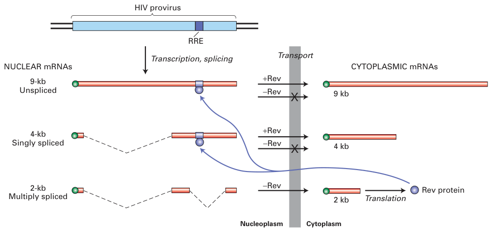
| HIV provirus | HIV原病毒 |
| 9-kb (Unspliced) | 9 kb（未剪接） |
| 4-kb (Singly spliced) | 4 kb（单次剪接） |
| 2-kb (Multiply spliced) | 2 kb（多次剪接） |
| NUCLEAR mRNAs | 核内mRNA |
| CYTOPLASMIC mRNAs | 细胞质mRNA |
| RRE | RRE |
| Rev | Rev |
| Rev protein | Rev蛋白 |
| Nucleoplasm | 核质 |
| Cytoplasm | 细胞质 |
| Transcription, splicing | 转录、剪接 |
| Transport | 转运 |
| Translation | 翻译 |
mRNA：9 kb的未剪接mRNA；切除一个内含子形成的4 kb mRNA；以及切除两个或更多内含子形成的2 kb mRNA（图10-26）。这三类HIV mRNA在宿主细胞核中合成后，都被运输到细胞质并翻译成病毒蛋白；一部分未剪接的9 kb RNA则作为病毒基因组，包装进从细胞表面出芽释放的子代病毒颗粒中。
由于9 kb和4 kb的HIV mRNA含有剪接位点，它们可被视为剪接不完全的mRNA。如前所述，这类剪接不完全的mRNA与剪接体中的snRNP结合后，通常会阻断它们从细胞核输出。因此，HIV以及其他逆转录病毒必定具有某种克服这一阻断的机制，使较长的病毒mRNA得以输出。有些逆转录病毒在其基因组中进化出一段称为组成型转运元件（CTE）的RNA序列，它能以高亲和力与NXF1/NXT1 mRNP输出受体结合。这种与mRNP输出受体的强相互作用使未剪接的逆转录病毒RNA得以输出到细胞质。HIV则以另一种方式解决了这一问题。
对HIV突变体的研究表明，未剪接的9 kb和单次剪接的4 kb病毒mRNA从细胞核运输到细胞质，需要病毒编码的Rev蛋白。随后的生化实验证明，Rev结合于HIV RNA中存在的一个特定Rev应答元件（RRE）。在用缺乏RRE的HIV突变体感染的细胞中，未剪接和单次剪接的病毒mRNA滞留在细胞核内，表明RRE是Rev介导的核输出刺激所必需的。在感染早期，尚未合成任何Rev蛋白时，只有不含任何剪接
位点的多次剪接2 kb mRNA才能被输出。这些可变剪接的2 kb mRNA之一编码Rev，Rev含有一个富含亮氨酸的核输出信号，该信号与转运蛋白输出蛋白1相互作用（见第13章），而不与NXF1/NXT1 mRNP输出受体作用。Rev在细胞质中翻译后又被输入细胞核，从而导致较大的未剪接和单次剪接HIV mRNA经NPC输出。
- 大多数mRNP由异二聚体mRNP输出受体从细胞核输出，该输出受体与填充NPC中央通道的无规蛋白结构域相互作用。运输方向（从细胞核到细胞质）源于mRNP输出受体–mRNP复合物在细胞质中的解离，而解离由细胞质激酶对mRNP接头蛋白的磷酸化，以及结合在核孔复合物胞质纤丝上的RNA解旋酶的作用所导致。结果，mRNP输出受体–mRNP复合物经NPC顺着浓度梯度从细胞核扩散到细胞质。
- mRNP输出受体与大多数mRNA的结合是协同进行的：既与结合在外显子剪接增强子上的SR蛋白协同，也与外显子连接复合物中的REF以及其他mRNP蛋白协同。
- 被剪接体结合的前体mRNA通常不会从细胞核输出，从而确保只有完成加工的功能性mRNA到达细胞质进行翻译。
10.4 细胞质中的转录后调控机制
在继续之前，我们先快速回顾基因表达中受到调控的各个步骤。我们在第9章看到，转录起始的调控以及启动子近端区域转录延伸的调控，是DNA→RNA→蛋白质途径中控制基因表达的最初机制。在本章前面各节中，我们了解到蛋白质同工型的表达受可变RNA剪接、以及可变poly(A)位点上的切割与多聚腺苷酸化的调控。尽管完全且正确加工的mRNP向细胞质的核输出很少受到调控，但加工不当或异常重塑的前体mRNP的输出会被阻止，这类异常转录本由外体（exosome）降解。然而，包括HIV在内的逆转录病毒已进化出一些机制，使保留剪接位点的前体mRNA得以输出并翻译。
本节我们讨论其他一些参与许多基因表达调控的转录后控制机制。这些机制大多在细胞质中发挥作用，控制mRNA的稳定性或其定位，或者控制其翻译成蛋白质。一种mRNA在细胞质中的浓度由其合成速率和降解速率共同决定。最稳定的mRNA编码大量需要的蛋白质（如核糖体蛋白），它们能在每个细胞中积累到极高的拷贝数。相反，高度不稳定的mRNA编码以短促脉冲方式表达的蛋白质（如细胞因子——调节免疫反应的分泌型蛋白），即使其转录、加工以及从细胞核输出的速率都很高，也很少能达到如此高的浓度。我们先讨论降解mRNA的主要途径。
接下来我们讨论两种相关的基因调控机制，它们为实验和治疗目的操纵特定基因的表达提供了强有力的新技术。这些机制由称为微小RNA（miRNA）和短干扰RNA（siRNA）的短（约22个核苷酸）单链RNA所控制。两者都与特定的靶mRNA碱基配对，导致其迅速降解（siRNA），或抑制其翻译并诱导一种较慢的降解形式（miRNA）。许多miRNA可以靶向一种以上的mRNA。因此，这些机制对基因表达的调控有重要贡献。参与RNA干扰过程的短干扰RNA，是细胞抵御病毒感染和逆转座子过度转座的重要防御手段。我们还将讨论控制蛋白质合成总体速率的机制，以及调控特定mRNA翻译与稳定性的高度特异的机制。最后，我们讨论在不对称细胞的细胞质中控制mRNA定位的机制，使所编码的蛋白质在细胞需要它的部位被翻译。
细胞质中mRNA的降解通过若干机制进行
如上所述，一种mRNA的浓度是其合成速率与降解速率的函数。因此，如果两个基因以相同速率转录，较稳定的那种mRNA的稳态浓度将高于另一种。mRNA的稳定性还决定了所编码蛋白质的合成能以多快的速度被关闭。对于稳定的mRNA，即便基因的转录已被阻遏，所编码蛋白质的合成仍会持续很久。大多数细菌mRNA都不稳定，以典型的几分钟半衰期呈指数衰减。因此，细菌细胞能够迅速调整蛋白质的合成，以适应细胞环境的变化。另一方面，多细胞生物中的大多数细胞生活在相当恒定的环境中，在数天到数月甚至生物体一生（例如神经元）中执行一组特定的功能。相应地，高等真核生物的大多数mRNA的半衰期为许多小时。
然而，真核细胞中有些蛋白质只在短时间内需要，必须以脉冲方式表达。例如，如前所述，某些称为细胞因子的信号分子参与调节哺乳动物的免疫反应，它们以短促的脉冲被合成并分泌（见第23章）。类似地，许多调控细胞周期S期启动的转录因子，如Fos和Jun，也只在短暂的时间里被合成（见第19章）。这类蛋白质之所以以短促脉冲的方式表达，是因为其基因的转录能够被迅速开启和关闭，而且它们的mRNA具有异常短的半衰期，约30分钟或更短。
细胞质中的mRNA通过图10-27所示的三种途径之一被降解。对大多数mRNA而言，走的是依赖去腺苷酸化的途径：在去腺苷酸化核酸酶复合物的作用下，poly(A)尾的长度随时间逐渐缩短。当尾部缩短到足够短时，PABPC1分子便不能再与之结合，也就无法稳定5′帽与翻译起始因子之间的相互作用（参见图5-23，其中总结了翻译起始的各个步骤）。暴露出来的帽子随即被脱帽酶（DCP1/DCP2）移除，失去保护的mRNA因而容易遭到降解。
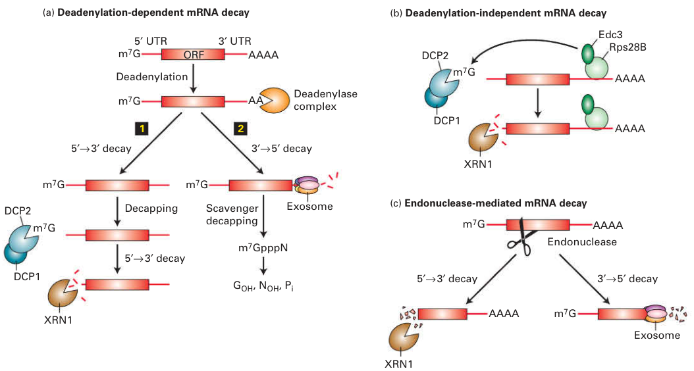
| Deadenylation-dependent mRNA decay | 去腺苷酸化依赖性mRNA降解 |
| Deadenylation-independent mRNA decay | 去腺苷酸化非依赖性mRNA降解 |
| Endonuclease-mediated mRNA decay | 核酸内切酶介导的mRNA降解 |
| Deadenylation | 去腺苷酸化 |
| Decapping | 脱帽 |
| Scavenger decapping | 清道夫脱帽 |
| Deadenylase complex | 去腺苷酸酶复合体 |
| Exosome | 外切体 |
| DCP1 | DCP1 |
| DCP2 | DCP2 |
| XRN1 | XRN1 |
| Endonuclease | 核酸内切酶 |
| Edc3 | Edc3 |
| Rps28B | Rps28B |
| ORF | ORF |
| 5′ UTR | 5′UTR |
| 3′ UTR | 3′UTR |
| m7G | m7G |
| GpppN | GpppN |
| 5′→3′ decay | 5′→3′降解 |
| 3′→5′ decay | 3′→5′降解 |
降解由XRN1（一种5′→3′外切核糖核酸酶）完成。poly(A)尾的移除还使mRNA容易被含3′→5′外切核酸酶的细胞质外体降解。5′→3′外切核酸酶途径在酵母中占主导，而3′→5′外体途径在哺乳动物细胞中占主导。脱帽酶和5′→3′外切核酸酶都富集于P小体（processing body，加工小体，见下文）中，后者是细胞质里RNP浓度异常高的区域。
有些mRNA主要经由不依赖去腺苷酸化的脱帽途径被降解（图10-27b）。mRNA 5′端的某些序列使帽子对脱帽酶敏感。对这些mRNA而言，脱帽速率决定了它们被降解的速率，因为一旦5′帽被移除，RNA便迅速被5′→3′外切核糖核酸酶XRN1水解。
另一些mRNA则经由一种不涉及脱帽、也不涉及明显去腺苷酸化的核酸内切途径被降解（图10-27c）。这类途径的一个例子是下文将要讨论的RNA干扰途径。每个siRNA-RISC复合物都能降解数千个靶RNA分子。内部切割产生的片段随后被外切核酸酶降解。
mRNA的去腺苷酸化速率与其翻译起始频率成反比：起始频率越高，去腺苷酸化速率越慢。这种关系可能是由结合在5′帽上的翻译起始因子与结合在poly(A)尾上的PABPC1之间的相互作用所致。对于翻译速率高的mRNA，起始因子大部分时间都结合在帽上，从而稳定了PABPC1的结合，进而保护poly(A)尾免受去腺苷酸化核酸酶复合物的作用。
哺乳动物细胞中许多短寿命的mRNA——即编码细胞因子和转录因子等浓度必须迅速变化的蛋白质的mRNA——在其3′非翻译区中含有多个（有时相互重叠的）AUUUA序列拷贝。这些序列称为AU富含元件。现已发现一些特异性的RNA结合蛋白能结合这些3′端AU富含序列，并与一种去腺苷酸化酶以及外体相互作用，导致这些mRNA迅速去腺苷酸化并随后被3′→5′降解。这一机制使mRNA的降解速率与翻译频率脱钩。因此，含有AU富含元件的mRNA既能高频翻译，又能被迅速降解，从而使所编码的蛋白质以短促脉冲的方式表达。
P小体是致密的细胞质结构域，其大小是核糖体的许多倍。它们是翻译阻遏的场所，不含核糖体或翻译因子。它们也是细胞质中mRNA降解的主要场所。这些致密的细胞质区域含有脱帽酶（DCP1/DCP2）、脱帽激活因子（DHH、PAT1、LSM1-7）以及主要的5′→3′外切核糖核酸酶XRN1，还含有密集结合的mRNA。P小体是动态结构，其大小会随mRNP与之结合的速率、mRNA被降解的速率以及mRNP离开P小体、重新进入被翻译mRNP库的速率而增大或缩小。那些因miRNA的不完全碱基配对而翻译受到抑制的mRNA，是P小体的主要成分，我们很快将看到这一点。
mRNA和lncRNA中的腺嘌呤可在转录后被N6甲基化修饰
与DNA一样（DNA在合成之后可以被C甲基化修饰，这种修饰一般通过甲基CpG结合蛋白导致转录阻遏；见第404页），前体mRNA、mRNA和lncRNA在转录之后也能发生碱基修饰。mRNA最常见的转录后碱基修饰——腺嘌呤N6位的甲基化（m6A）——其功能是目前研究的热点领域。在哺乳动物细胞中，mRNA和长非编码RNA（lncRNA）里大约每2000个碱基就有一个m6A，平均每种mRNA含3–5个m6A。m6A位点见于所有rRNA、所有snRNA以及所有tRNA的TΨCG环中（见图5-20）。相比之下，在mRNA和lncRNA中，只有一部分分子含有m6A；就迄今分析过的少数mRNA和lncRNA而言，这一比例为10%到70%。但已在7000多个人类蛋白编码基因和约300个lncRNA的转录本中检测到m6A。在内含子中也检测到了m6A，说明它可以在共转录过程中加到前体mRNA上。在mRNA中，很高比例的m6A位于终止密码子附近、3′非翻译区以及异常长的内部外显子中。
与DNA的情形一样，特定的酶把来自S-腺苷甲硫氨酸（许多生化反应中常见的甲基供体）的甲基基团加到特定位点上；而且人们已经鉴定出能够去除RNA甲基基团的酶。这些观察提示，特定RNA分子的m6A修饰可能是动态调控的。然而，这些酶主要位于细胞核内，所以mRNA一旦被m6A修饰，很可能不会在细胞质中被去甲基化。重要的是，人们已经鉴定出一些蛋白质，它们优先结合m6A修饰的RNA，而不结合缺少m6A的RNA。与DNA的C甲基化相类比，这类蛋白质可能执行m6A修饰的功能。
最近的研究表明，m6A可能影响特定mRNA"生命周期"的许多方面，包括RNA剪接、核输出、翻译和降解。在果蝇和植物拟南芥（A. thaliana）中，只有一种mRNA m6A甲基转移酶，其基因的敲除在这两个物种中都是胚胎致死的，这证明了m6A修饰在功能上的重要性。含m6A的RNA分子比相同但未甲基化的RNA更不稳定。在这方面，已有报道称m6A结合蛋白能诱导含m6A的mRNA与P小体结合，这或许可以解释这种碱基修饰如何影响mRNA的翻译与稳定性。除m6A之外，RNA中四种碱基还有一百多种其他修饰已被鉴定。显然，关于这些碱基修饰的功能，还有待了解的东西很多。
微小RNA抑制翻译并诱导特定mRNA的降解
微小RNA（miRNA）最早是在分析线虫秀丽隐杆线虫（C. elegans）lin-4和let-7基因的突变时被发现的，这两个基因影响该生物体的发育。对野生型lin-4和let-7的克隆与分析显示，它们并不编码蛋白质产物，而只编码分别长21和22个核苷酸的RNA。这些RNA与特定靶mRNA的3′非翻译区（3′ UTR）杂交。例如，在胚胎发生早期表达的lin-4 miRNA与细胞质中lin-14和lin-28两种mRNA的3′ UTR杂交，从而阻遏它们的翻译。发育后期lin-4 miRNA的表达停止，使此时新合成的lin-14和lin-28 mRNA得以翻译。let-7 miRNA的表达在所有两侧对称动物的胚胎发生过程中都出现于相当的时间。
miRNA对翻译的调控似乎广泛存在于所有多细胞植物和动物之中。在过去
几年中，人们已从多种模式生物的各个组织中分离、克隆并测序了20–26个核苷酸的小RNA。最近的估计表明，从各种组织中分离出的约1900种人类miRNA调控着全部人类基因中三分之一的表达。一种miRNA调控多种mRNA的潜力很大，因为miRNA与其所调控mRNA 3′端之间的碱基配对不必完美（图10-28）。事实上，用合成miRNA进行的大量实验表明，miRNA 5′端第2–7位碱基（称为"种子"序列）与靶mRNA 3′ UTR之间的互补性，对靶mRNA的选择最为关键。
大多数miRNA由长数百至数千个核苷酸的RNA聚合酶II转录本加工而来，这些转录本称为pri-miRNA（初级转录本，primary transcript）（图10-29）。一个pri-miRNA可以含有一种或多种miRNA的序列。有些miRNA还由切除的内含子以及某些前体mRNA的3′ UTR加工而来。在这些长转录本中，有些序列会折叠成约70个核苷酸长、茎部碱基配对不完美的发夹结构。一种特异性识别双链RNA的核内RNase——Drosha，与一种核内双链RNA结合蛋白——在人类中称为DGCR8（DiGeorge综合征染色体区8，因其与这种遗传病的关联而得名；在果蝇中称为Pasha）——共同作用，从长前体RNA中切出发夹区域，生成pre-miRNA。pre-miRNA被一种特定的核输出因子exportin 5识别并结合，从而能够通过核孔复合物的内通道扩散。到达细胞质后，
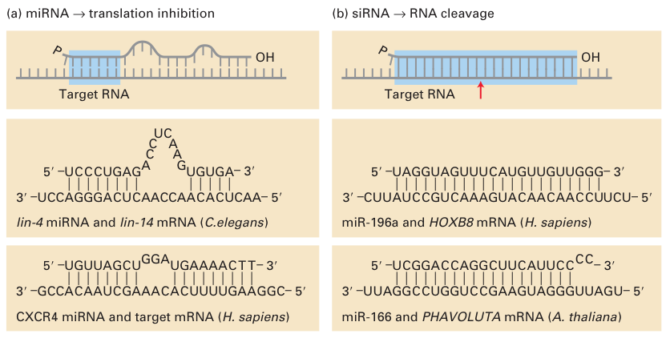
| Target RNA | 靶RNA |
| (a) miRNA → translation inhibition | （a）miRNA→翻译抑制 |
| (b) siRNA → RNA cleavage | （b）siRNA→RNA切割 |
| lin-4 miRNA and lin-14 mRNA (C. elegans) | lin-4 miRNA与lin-14 mRNA（秀丽隐杆线虫） |
| miR-196a and HOXB8 mRNA (H. sapiens) | miR-196a与HOXB8 mRNA（人类） |
| CXCR4 miRNA and target mRNA (H. sapiens) | CXCR4 miRNA与靶mRNA（人类） |
| miR-166 and PHAVOLUTA mRNA (A. thaliana) | miR-166与PHAVOLUTA mRNA（拟南芥） |
一种细胞质双链RNA特异性的RNase——Dicer，与一种细胞质双链RNA结合蛋白——在人类中称为TRBP（Tar结合蛋白；在果蝇中称为Loquacious）——共同作用，将pre-miRNA进一步加工为双链miRNA。双链miRNA的长度约为A型RNA螺旋的两圈，两条链各长21–23个核苷酸，两端各有两个未配对的3′核苷酸。最后，两条链中的一条被选中，组装进成熟的RNA诱导沉默复合物（RISC）中，该复合物含有一条由多结构域Argonaute蛋白结合的单链成熟miRNA，Argonaute蛋白是拥有可识别保守序列的蛋白家族的成员；复合物中还含有其他蛋白质。有些生物（尤其是植物）表达几种Argonaute蛋白，它们存在于功能各异的RISC复合物中。人类表达四种Argonaute蛋白。AGO2是含miRNA的RISC复合物中的人类Argonaute蛋白。其他人类Argonaute蛋白的功能部分重叠，因为同时敲除全部四种人类Argonaute蛋白对人类胚胎干细胞是致死的，而其中任何一种都足以维持存活。其他Argonaute蛋白在小鼠发育过程中的具体功能目前正在研究中。
miRNA-RISC复合物通过Argonaute所结合的成熟miRNA与靶mRNA 3′ UTR中的互补区域之间的碱基配对，与靶mRNP结合（见图10-28）。要抑制靶mRNA的翻译，需要两个或更多RISC复合物结合到靶mRNA 3′ UTR中不同的互补区域。一般来说，结合到mRNA 3′ UTR上的RISC复合物越多，翻译受抑制的程度越大。这一机制使得可以通过分别调控两种或更多不同pri-miRNA的转录，对mRNA翻译实现组合式
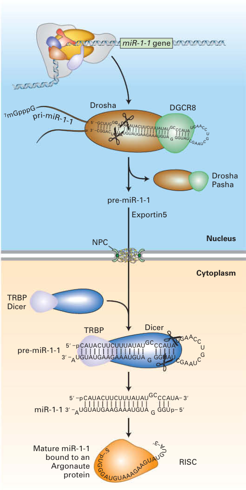
| Cytoplasm | 细胞质 |
| Nucleus | 细胞核 |
| miR-1-1 gene | miR-1-1基因 |
| pre-miR-1-1 | pre-miR-1-1 |
| Drosha | Drosha |
| Pasha | Pasha |
| DGCR8 | DGCR8 |
| Exportin5 | Exportin5 |
| NPC | NPC |
| miR-1-1 | miR-1-1 |
| Mature miR-1-1 | 成熟miR-1-1 |
| mGpppG | mGpppG |
| TRBP | TRBP |
| Dicer | Dicer |
| RISC | RISC |
| Argonaute protein | Argonaute蛋白 |
调控。这些pri-miRNA被加工成miRNA，而只有把它们组合起来，才能抑制特定靶mRNA的翻译。
若干RISC复合物结合到mRNA上从而抑制翻译起始的机制，目前正在研究之中。RISC复合物的结合使所结合的mRNP与P小体结合。由于P小体是mRNA降解的主要场所，脱帽复合物DPC1/DPC2、5′→3′外切核酸酶XRN1和细胞质外体都在此富集，因此被若干RISC复合物结合的mRNA会被降解。
如前所述，已观察到约1900种不同的人类miRNA，其中大多数只在特定细胞类型中、在胚胎发生过程中及出生后的特定时间表达。确定这些miRNA的功能是目前十分活跃的研究领域。举一个例子：当成肌细胞分化为肌肉细胞时，一种称为miR-133的特定miRNA被诱导产生。这种miRNA抑制PTB的翻译；PTB是一种调节性剪接因子，其功能与果蝇中的Sxl类似（见图10-18）。PTB结合在许多基因前体mRNA的3′剪接位点上，导致外显子跳跃或使用可变3′剪接位点。当miR-133在分化的成肌细胞中表达时，PTB浓度下降。结果，对肌肉细胞功能重要的多种蛋白质的可变同工型在分化细胞中得以表达。
其他miRNA调控的例子正在各种生物体中迅速被发现。敲除dicer基因会消除哺乳动物中miRNA的生成。这种操作会导致小鼠发育早期胚胎死亡。然而，如果只在肢芽原基中敲除dicer，就可以观察到miRNA对非必需肢体发育的影响（图10-30）。尽管肢体中所有主要细胞类型都分化了，肢体图式形成的基本方面也得以维持，但发育是异常的——这表明
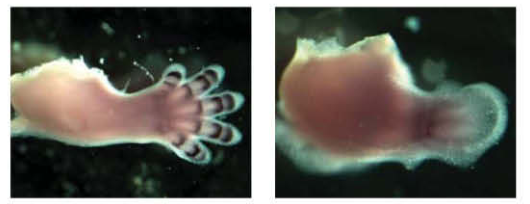
miRNA在把多种mRNA的翻译水平调控到适当程度方面具有重要性。实际上，miRNA把基因表达"微调"到适合各种细胞类型中基因功能的恰当水平。在1900种人类miRNA中，有53种似乎是灵长类所特有的。看来在进化过程中，新的miRNA很容易通过以下方式产生：一个pri-miRNA基因发生重复，随后编码成熟miRNA的碱基发生突变。miRNA在植物中尤为丰富——在拟南芥（Arabidopsis thaliana）中已鉴定出150万种以上不同的miRNA！
可变多聚腺苷酸化增加miRNA的调控选项
除可变剪接之外（约95%的人类基因在某一组织中发生可变剪接），约50%的人类mRNA还发生可变多聚腺苷酸化。可变多聚腺苷酸化源于不同细胞类型中使用了两个或更多个可变多聚腺苷酸化信号。在某些情况下，这似乎是由于不同细胞类型中切割/多聚腺苷酸化因子的浓度不同，加之不同的可变poly(A)信号对结合切割/多聚腺苷酸化信号下游G/U富含部分的CStF复合物具有不同亲和力所致（见图10-15）。在这些情况下，当CStF浓度较低时，只有亲和力最高的多聚腺苷酸化信号被使用。而在CStF浓度较高的其他细胞类型中，上游的一个低亲和力位点被优先使用，因为前体mRNA一旦被切割，下游的位点就无法再被使用。在另一些情况下，序列特异性的RNA结合蛋白可能阻断或增强切割/多聚腺苷酸化因子的结合，就像剪接阻遏物和激活物的情形一样。
当同一个基因表达出的多种mRNA使用不同的多聚腺苷酸化位点时，额外的miRNA结合位点可能位于3′外显子更长的那个mRNA上。因此，蛋白编码序列相同的mRNA，可能因3′ UTR的长度以及这些细胞中所表达的miRNA的不同，而在不同细胞类型中受到不同的调控。可见，借助miRNA对翻译和mRNA稳定性的控制，可变多聚腺苷酸化可以调控编码同一蛋白质的mRNA的翻译。
多聚腺苷酸化的可变位点还可以与mRNA最后一个外显子的可变剪接相偶联。这样就能表达出C端氨基酸序列不同的蛋白质同工型。这种变异见于B淋巴细胞发育过程中可变免疫球蛋白分子的表达（见图23-19）。最初产生的免疫球蛋白抗体带有跨膜结构域（把抗体锚定在质膜上）和胞质结构域（当抗原结合胞外结构域——即被抗体结合的分子——时发出信号）。当抗原被结合后，前体mRNA的加工发生改变，使mRNA中包含一个可变的3′外显子。由这种可变加工mRNA翻译出的抗体分子缺少跨膜结构域，因而被分泌到细胞外空间，在那里中和病原体（见第14章和第23章）。
RNA干扰诱导与序列完全互补的mRNA降解
RNA干扰（RNAi）是在尝试用实验方法操纵特定基因表达的过程中意外发现的。研究人员曾试图通过显微注射一条能与所编码mRNA杂交并阻止其翻译的单链互补RNA，来抑制秀丽隐杆线虫（C. elegans）中某个基因的表达，这种方法称为反义抑制。但在对照实验中，一条几百碱基对长、完全碱基配对的双链RNA在抑制该基因表达方面，比反义链单独作用有效得多（见图6-42）。不久之后，人们在植物中也观察到了导入双链RNA对基因表达的类似抑制。在每一种情况下，双链RNA都诱导了细胞中所有含有一段与其一条链序列完全相同序列的RNA的降解。由于这种技术靶向破坏mRNA具有特异性，它已成为研究基因功能的强大实验工具。
随后用果蝇胚胎提取物进行的生化研究表明，介导RNA干扰的长双链RNA先被加工成双链的短干扰RNA（siRNA）。siRNA中的两条链各含21–23个核苷酸，彼此杂交，使每条链3′端的两个碱基不配对。进一步的研究揭示，把长双链RNA切割成siRNA的细胞质双链RNA特异性核糖核酸酶，正是参与pre-miRNA输出到细胞质后加工的同一个Dicer酶（见图10-29）。这一发现使人们认识到，RNA干扰与miRNA介导的翻译抑制和靶mRNA降解是相关的过程。在这两种情况下，成熟的短单链RNA（siRNA或miRNA）都被组装进RISC复合物，在其中与Argonaute蛋白结合。含siRNA的RISC复合物与含miRNA的RISC复合物的区别在于：siRNA与其靶RNA完全碱基配对并诱导其切割，而与miRNA结合的RISC复合物则通过不完美的碱基配对识别其靶标，导致翻译受到抑制，并以较慢的方式降解靶mRNA（见图10-28）。
AGO2是负责切割靶RNA的蛋白质。该蛋白质的一个结构域与降解RNA-DNA杂交体中RNA的RNase H酶同源（见图8-14）。当RISC复合物中siRNA的5′端与靶mRNA精确碱基配对达一个RNA螺旋圈的距离（10–12个碱基对）时，AGO2的这个结构域就在与siRNA第10和第11位核苷酸相对的位置切开靶RNA的磷酸二酯键（见图10-28b）。被切割的RNA随即被释放。
释放后的RNA被细胞质外体和XRN1 5′→3′外切核糖核酸酶降解。如果碱基配对不完美，AGO2的这个结构域就不会切割或释放靶mRNA。相反，如果有若干个miRNA-RISC复合物与同一靶mRNA结合，其翻译就会受到抑制，该mRNA会与P小体结合；如前所述，在P小体中，它通过一种不同于——也更慢于——RISC切割完全互补靶RNA所启动的降解途径的机制被降解。
当把双链RNA导入真核细胞的细胞质中时，它会进入siRNA组装成RISC复合物的途径，因为它能被Dicer和TRBP识别（见图10-29）。RNA干扰这一过程被认为是一种古老的细胞防御机制，用于抵御植物和动物中的某些病毒和可移动遗传元件。dicer和RISC蛋白编码基因发生突变的植物，对RNA病毒感染更敏感，其基因组内转座子的移动也增多。RNA病毒复制过程中产生的双链RNA中间体被认为能被Dicer识别，从而诱导RNAi应答，最终降解病毒的mRNA。在转座过程中，转座子以随机方向插入细胞基因，它们从不同启动子的转录产生彼此互补、能相互杂交的RNA，从而启动RNAi系统，进而干扰完成后续转座所需的转座子蛋白的表达。
在植物和秀丽隐杆线虫（C. elegans）中，只需把双链RNA导入少数几个细胞，就能在整个生物体的所有细胞中诱导RNA干扰。这种全生物体范围的诱导需要产生一种与RNA病毒的RNA复制酶同源的蛋白质。研究表明，在这类生物体中，双链siRNA会被复制，然后转移到其他细胞。在植物中，siRNA的转移可能通过胞间连丝进行，胞间连丝是植物细胞之间穿过细胞壁的细胞质连接（见图20-42）。RNA干扰的全生物体诱导不会在果蝇或哺乳动物中发生，想必是因为它们的基因组不编码RNA复制酶的同源物。
在哺乳动物细胞中，把长的RNA-RNA双链体导入细胞质会通过PKR途径引起蛋白质合成的全面抑制，这一点将在下文进一步讨论。这种反应大大限制了用长双链RNA在实验中对特定靶mRNA诱导RNA干扰的用途。幸运的是，研究人员发现，长21–23个核苷酸、带有两个碱基的3′单链区的双链siRNA，能生成被掺入功能性siRNA RISC复合物的单链RNA，而不会引起蛋白质合成的全面抑制。这一发现使研究人员能够利用合成的双链siRNA，在人类细胞以及其他哺乳动物中敲低特定基因的表达。这种siRNA敲低方法现已被广泛用于研究各种过程，包括RNAi途径本身！
细胞质多聚腺苷酸化促进某些mRNA的翻译
除miRNA之外，还有几种蛋白质介导的翻译控制有助于调控某些基因的表达。mRNA中与特定蛋白质相互作用以控制翻译的调控元件，通常位于mRNA 3′端或5′端的UTR中。这里我们讨论一类涉及3′调控元件的蛋白质介导的翻译控制。另一种机制涉及与5′调控元件相互作用的RNA结合蛋白，将在后面讨论。
许多真核mRNA的翻译由序列特异性的RNA结合蛋白调控，这些蛋白协同地结合到3′ UTR中相邻的位点上。这使它们能以组合的方式发挥作用，类似转录因子协同结合到增强子或启动子区的调控位点。在已研究的大多数情况中，蛋白质结合3′调控元件会阻遏翻译，而调控则来自在细胞或发育胚胎中适当的时间或地点发生的去阻遏。这类阻遏的机制，对于必须经过细胞质多聚腺苷酸化才能翻译的mRNA了解得最为清楚。
细胞质多聚腺苷酸化是动物早期胚胎中基因表达的一个关键方面。多细胞动物的卵细胞（卵母细胞）含有许多编码各种不同蛋白质的mRNA，这些mRNA在卵被精子受精之后才被翻译。其中一些"储存的"mRNA只有很短的poly(A)尾，仅由20–40个A残基组成，只能结合少数几个细胞质poly(A)结合蛋白（PABPC1）分子。如第5章所讨论的，结合在mRNA长poly(A)尾上的多个PABPC1分子与eIF4G起始因子相互作用，从而稳定mRNA 5′帽与eIF4E之间的结合，而这是翻译起始所必需的（见图5-23）。由于短poly(A)尾的mRNA无法实现这种稳定作用，这类mRNA不能被有效翻译。在卵母细胞成熟过程中的适当时候或受精之后，通常响应一个外部信号，约150个A残基会在细胞质中被加到这些mRNA的短poly(A)尾上，从而刺激它们的翻译。
对储存在非洲爪蟾（Xenopus）卵母细胞中的mRNA的研究，帮助阐明了这类翻译控制的机制。把短尾mRNA注射到卵母细胞中的实验表明，其3′ UTR中有两段序列是它们在细胞质中发生多聚腺苷酸化所必需的：一是AAUAAA多聚腺苷酸化信号（前体mRNA在核内多聚腺苷酸化也需要它），二是上游一个或多个拷贝的富含U的细胞质多聚腺苷酸化元件（CPE）。这一调控元件由高度保守的CPE结合蛋白（CPEB）结合，CPEB含有一个RRM结构域和一个锌指结构域。
在没有刺激信号时，结合在富含U的CPE上的CPEB与Maskin蛋白相互作用，Maskin又与mRNA 5′帽上结合的eIF4E结合（图10-31，左）。结果，eIF4E不能与其他起始因子或小核糖体亚基相互作用，于是翻译起始被阻断。在卵母细胞成熟过程中，
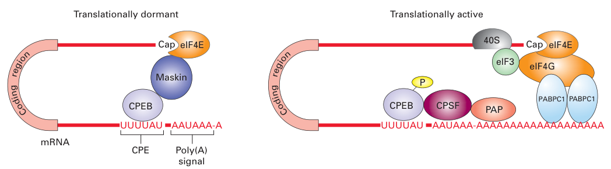
| Translationally dormant | 翻译静止 |
| Translationally active | 翻译活跃 |
| Cap | 帽子 |
| Maskin | Maskin |
| CPEB | CPEB |
| CPE | CPE |
| Poly(A) signal | Poly(A)信号 |
| eIF4E | eIF4E |
| eIF4G | eIF4G |
| eIF3 | eIF3 |
| PABPC1 | PABPC1 |
| CPSF | CPSF |
| PAP | PAP |
| 40S | 40S |
| Coding region | 编码区 |
| mRNA | mRNA |
CPEB上特定的丝氨酸被磷酸化，导致Maskin从复合物中解离。这使细胞质形式的切割与多聚腺苷酸化特异性因子（CPSF）和poly(A)聚合酶（PAP）能够与CPEB协同地结合到mRNA上。PAP一旦催化加上A残基，PABPC1就能结合到延长的poly(A)尾上，从而使启动翻译所需的所有因子之间的相互作用得以稳定（图10-31，右；另见图5-23）。就非洲爪蟾卵母细胞成熟而言，使CPEB磷酸化的蛋白激酶是响应激素孕酮而被激活的。因此，编码卵母细胞成熟所需蛋白质的储存mRNA，其翻译的时间由这个外部信号所调控。
大量证据表明，一种类似的翻译控制机制在学习和记忆中发挥作用。在中枢神经系统中，来自约一千个神经元的轴突可以与单个突触后神经元的树突形成连接（突触）（见图22-31）。当其中某个轴突受到刺激时，突触后神经元会"记住"这数千个突触中是哪一个受到了刺激。下一次该突触受到刺激时，突触后细胞中引发的反应强度与第一次不同。这种反应变化已被证明主要来自储存在突触区域的mRNA被翻译激活，从而导致局部合成新的蛋白质，使突触变大并改变其神经生理特性。CPEB存在于神经元树突中这一发现，提示细胞质多聚腺苷酸化在树突中刺激特定mRNA的翻译，与在卵母细胞中十分相似。在这种情况下，推测是突触活动（而非激素）作为信号，诱导CPEB磷酸化并随后激活翻译。
蛋白质合成可受到全局性调控
与其他过程所涉及的蛋白质一样，翻译起始因子和核糖体蛋白也可以受到磷酸化等翻译后修饰的调控。这类机制影响大多数mRNA的翻译速率，从而影响细胞蛋白质合成的总体速率。
TOR通路 TOR通路是通过研究雷帕霉素（rapamycin）的作用机制而被发现的。雷帕霉素是一种由链霉菌（Streptomyces）某菌株产生的抗生素，可用于抑制接受器官移植患者的免疫反应。人们通过分离对雷帕霉素抑制细胞生长具有抗性的酵母突变体，鉴定出了雷帕霉素的靶标（TOR）。TOR是一种大的（约2400个氨基酸）蛋白激酶，在酵母细胞中响应营养状态而调控若干细胞过程。在哺乳动物中，mTOR（哺乳动物TOR）响应来自细胞表面信号蛋白的多种信号，把细胞生长与发育程序以及营养状态协调起来。
在哺乳动物中，mTOR被组装成两类多蛋白复合物，即mTOR复合物1和2（mTORC1和mTORC2）。mTORC1的蛋白激酶活性随溶酶体中氨基酸的出现而升高。其蛋白激酶活性还因足以支持细胞生长的ATP水平、氧气以及生长因子受体的信号传导而升高（见第16章）。mTORC1受到各种细胞应激的抑制，包括缺氧以及ATP和营养物质水平低下。它也是被雷帕霉素抑制的那个mTOR复合物。有活性的mTORC1调控细胞代谢以促进细胞生长，并刺激核糖体合成和翻译。它还抑制自噬作用。
自噬过程中，细胞质的大部分（包括整个核糖体、线粒体和其他细胞器）被双层膜包围，形成自噬体，随后与溶酶体融合，其中的内容物被消化，以便在应激时和营养供应不足时提供必需的营养物质。另一个复合物mTORC2对雷帕霉素不敏感。它有活性时，调控控制细胞形状和运动的肌动蛋白细胞骨架（见第17章），并抑制细胞凋亡——一种高度有序且受调控的细胞死亡途径，它回收大分子和膜的分解产物，供吞噬细胞摄取利用（见第21章）。
我们目前对mTORC1功能的理解总结于图10-32。有活性的mTORC1通过磷酸化两类直接调控翻译的关键蛋白，提高蛋白质合成的总体速率。回想一下，真核mRNA翻译的第一步是eIF4起始复合物通过其eIF4E帽结合亚基结合到5′帽上（见图5-23）。
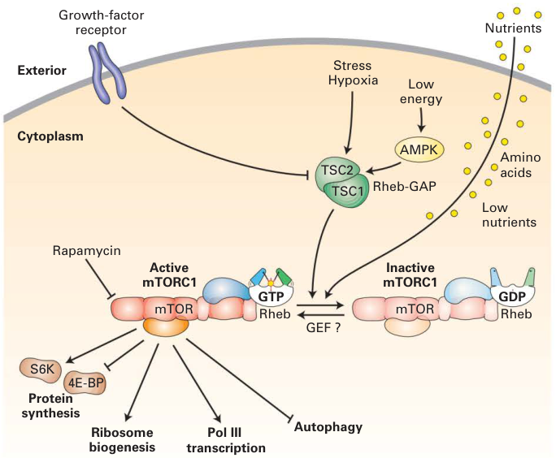
| Exterior | 外部 |
| Cytoplasm | 细胞质 |
| Cell | 细胞 |
| Growth-factor receptor | 生长因子受体 |
| Stress | 应激 |
| Hypoxia | 缺氧 |
| Low energy | 低能量 |
| Low nutrients | 低营养 |
| Amino acids | 氨基酸 |
| AMPK | AMPK |
| TSC1 | TSC1 |
| TSC2 | TSC2 |
| Rheb | Rheb |
| Rheb-GAP | Rheb-GAP |
| GEF ? | GEF？ |
| mTOR | mTOR |
| mTORC1 | mTORC1 |
| Active mTORC1 | 活性mTORC1 |
| Inactive mTORC1 | 失活mTORC1 |
| Rapamycin | 雷帕霉素 |
| S6K | S6K |
| 4E-BP | 4E-BP |
| Protein synthesis | 蛋白质合成 |
| Ribosome biogenesis | 核糖体生物发生 |
| Pol III transcription | Pol III转录 |
| Autophagy | 自噬 |
| GTP | GTP |
| GDP | GDP |
活性eIF4E的浓度由一个同源的eIF4E结合蛋白（4E-BP）小家族调控，这些蛋白抑制eIF4E与mRNA 5′帽的相互作用。4E-BP是mTORC1的直接靶标。当被mTORC1磷酸化后，4E-BP释放eIF4E，刺激翻译起始。mTORC1还磷酸化并激活另一种蛋白激酶——S6激酶（S6K），后者磷酸化小核糖体亚基蛋白S6及其他底物，使蛋白质合成速率进一步提高。
mTORC1对一类特定mRNA的翻译刺激尤为强烈：这些mRNA的5′ UTR中含有一串嘧啶，称为TOP mRNA（tract of oligopyrimidine，寡嘧啶序列）。TOP mRNA编码核糖体蛋白和翻译延伸因子。由mTORC1激活的S6K激活RNA聚合酶I转录因子TIF-1A，刺激大rRNA前体的转录（见图9-51）。mTORC1还磷酸化并抑制RNA聚合酶III抑制因子MAF1，从而
刺激5S rRNA和tRNA的合成。此外，mTORC1激活两个RNA聚合酶II激活因子，它们刺激编码核糖体蛋白和翻译因子的基因转录。最后，mTORC1刺激大rRNA前体的加工（见10.5节）。由于这几种mTORC1底物被磷酸化，核糖体的合成与组装以及翻译因子和tRNA的合成都大为增加。反之，当mTORC1激酶活性被抑制时，这些底物被去磷酸化，蛋白质合成速率以及核糖体、翻译因子和tRNA的生成随之大减，细胞生长因而停止。
mTORC1的活性由Ras蛋白家族中的一种单体G蛋白Rheb调控。与其他小单体G蛋白一样，Rheb在结合GTP时处于活性构象（见图15-4和图15-5）。Rheb⋅GTP结合mTORC1复合物，刺激mTORC1激酶活性，这很可能是通过诱导其激酶结构域发生构象变化实现的。Rheb本身则受一个由TSC1和TSC2两个亚基组成的异二聚体调控，这两个亚基因参与下文所述的医学综合征——结节性硬化症复合物（tuberous sclerosis complex）——而得名。在活性构象下，TSC1/TSC2异二聚体作为Rheb的GTP酶激活蛋白（GAP）发挥作用，使Rheb结合的GTP水解为GDP。这使Rheb转变为GDP结合的构象，该构象不能激活mTORC1激酶。
TSC1/TSC2 Rheb-GAP的活性受多种输入信号调控，使细胞能够整合来自不同细胞信号通路的信息，从而控制蛋白质合成的总体速率。来自细胞表面生长因子受体的信号导致TSC1/TSC2在抑制性位点被磷酸化，使Rheb⋅GTP增多、mTORC1激酶活性被激活。这种通过细胞表面受体进行的调控，把细胞生长的控制与由细胞间相互作用支配的发育过程联系起来。
当来自营养物的能量不足以支持细胞生长时，ATP与AMP浓度之比的下降会被AMP活化蛋白激酶（AMPK）检测到。被激活的AMPK磷酸化TSC1/TSC2的激活位点，刺激其Rheb-GAP活性，从而抑制mTORC1激酶活性和翻译的全局速率。缺氧和其他细胞应激也会激活TSC1/TSC2 Rheb-GAP。
mTORC1的激活取决于其与溶酶体的受调控结合。细胞中大部分Rheb与溶酶体外膜结合，而帮助Rheb⋅GTP与mTORC1结合的其他蛋白也局限于溶酶体外膜。如前所述，mTORC1活性的调控受溶酶体内氨基酸浓度的控制。其发生机制目前是活跃的研究领域。
与mTORC1相反，mTORC2对营养物不敏感。然而，mTORC2可由胰岛素与胰岛素受体结合而激活，后者调控碳水化合物的摄取与代谢（见16.8节）。mTORC2还磷酸化并激活蛋白激酶B（又称Akt）（见图16-29）、蛋白激酶C（见第714页）以及血清和糖皮质激素诱导的蛋白激酶1（SGK1）。这些蛋白激酶反过来通过调控肌动蛋白细胞骨架来调节代谢、细胞凋亡和细胞形状（见第17章）。
编码mTORC1通路组分的基因在许多人类癌症中发生突变，导致细胞在缺乏正常生长信号的情况下仍能生长。TSC1和TSC2（见图10-32）最初之所以被发现，是因为其中之一在一种罕见的人类遗传综合征——结节性硬化症复合物——中发生突变。患此病的患者会在多种组织中发生良性肿瘤。该病的成因是：TSC1或TSC2失活会消除TSC1/TSC2异二聚体的Rheb-GAP活性，使Rheb⋅GTP水平异常升高且不受调控，因而mTOR活性高且不受调控。导致TSC1/TSC2 Rheb-GAP活性受抑制的细胞表面受体信号转导通路组分的突变，在人类肿瘤中也很常见，并促使细胞在缺乏正常生长和增殖信号时仍能生长和复制。肿瘤中mTORC1蛋白激酶活性高与临床预后不良相关。因此，mTOR抑制剂目前正在临床试验中检验其与其他治疗方式联合治疗癌症的效果。雷帕霉素和其他结构相关的mTORC1抑制剂是免疫反应的有效抑制剂，因为它们抑制T淋巴细胞对外来抗原的激活和复制（见第23章）。多种病毒编码的蛋白能在病毒感染后不久激活mTORC1。由此产生的翻译刺激对这些细胞内寄生物具有明显的选择优势。■
eIF2激酶 eIF2激酶也调控细胞蛋白质合成的全局速率。如图5-23所示，翻译起始因子eIF2将携带氨基酸的起始tRNA带到小核糖体亚基的P位点。eIF2是一种三聚体G蛋白，因此以GTP结合或GDP结合两种构象之一存在。只有GTP结合形式的eIF2才能结合携带氨基酸的起始tRNA并与小核糖体亚基结合。带有结合的起始因子和携带氨基酸起始tRNA的小核糖体亚基，随后通过其eIF4E亚基与结合在mRNA 5′帽上的eIF4复合物相互作用。小核糖体亚基随后沿mRNA向3′方向扫描，直到到达一个能在其P位点与起始tRNA碱基配对的AUG起始密码子。当这发生时，eIF2所结合的GTP水解为GDP，生成的eIF2⋅GDP复合物被释放。GTP水解造成一个不可逆的"校对"步骤，它使小核糖体亚基只有在起始tRNA正确
结合在P位点并与AUG起始密码子正确碱基配对时才准备与大亚基结合。在eIF2能参与下一轮起始之前，其结合的GDP必须被GTP置换。这一过程由翻译起始因子eIF2B催化，eIF2B是一种对eIF2特异的鸟苷酸交换因子（GEF）。
应激细胞中抑制蛋白质合成的一种全局机制，涉及eIF2α亚基在特定丝氨酸上的磷酸化。该位点的磷酸化并不直接干扰eIF2在蛋白质合成中的功能。相反，磷酸化的eIF2对eIF2鸟嘌呤核苷酸交换因子eIF2B具有极高的亲和力，后者无法释放磷酸化的eIF2，因而被阻断，不能催化其他eIF2因子的GTP交换。由于eIF2的量超过eIF2B，一部分eIF2被磷酸化即可抑制细胞内全部eIF2B。其余的eIF2以GDP结合形式积累，无法参与蛋白质合成，从而使细胞中几乎所有蛋白质合成都被抑制。然而，有些mRNA的5′区域使其能够在eIF2磷酸化所致的低eIF2⋅GTP浓度下起始翻译。这些mRNA包括：编码伴侣蛋白的mRNA（这类蛋白负责把因细胞应激而变性的细胞蛋白重新折叠）、帮助细胞应对应激的其他蛋白，以及激活编码这些应激诱导蛋白的基因转录的转录因子。
人类表达四种eIF2激酶，它们都磷酸化同一个起抑制作用的eIF2α丝氨酸。这四种激酶各自由不同类型的细胞应激调控，每一种都抑制蛋白质合成，使细胞能把生长时通常投入蛋白质合成的大部分资源转用于应对应激。
GCN2（general control non-derepressible 2）eIF2激酶由结合未负载tRNA而激活。当细胞缺乏氨基酸时，未负载tRNA的浓度升高，激活GCN2 eIF2激酶，大幅抑制蛋白质合成。
血红素调节抑制因子（HRI）是一种eIF2激酶，在发育中的红细胞内血红素辅基的供应过低、不足以匹配珠蛋白合成速率时被激活。这一负反馈环路降低珠蛋白的合成速率，直至其与血红素的合成速率相匹配。在氧化应激或热激下，其他类型的细胞中HRI也会被激活。
最后，RNA活化蛋白激酶（PKR）由长约30个碱基对以上的双链RNA激活。在哺乳动物细胞的正常情况下，这类双链RNA只在病毒感染期间产生。长段双链RNA是RNA病毒的复制中间体，或由从DNA病毒基因组两条链转录出的RNA的互补区杂交而成。抑制蛋白质合成可阻止子代病毒颗粒的产生，从而保护邻近细胞免受感染。有趣的是，腺病毒演化出了对抗PKR的防御手段：它们大量表达一种160个核苷酸的病毒相关（VA）RNA，其中含有长的双链发夹区。VA RNA由RNA聚合酶III转录，并由exportin 5（pre-miRNA的输出蛋白）运出细胞核（见图10-29）。VA RNA以高亲和力结合PKR，抑制其蛋白激酶活性，从而阻止在感染了VA基因缺失的突变腺病毒的细胞中所观察到的蛋白质合成抑制。
序列特异性RNA结合蛋白控制特定mRNA的翻译
与刚才所述的全局性mRNA调控不同，细胞还演化出其他机制来控制某些特定mRNA的翻译。这些机制通常依赖序列特异性RNA结合蛋白，它们结合mRNA中的特定序列或结构。当这类蛋白结合到mRNA的5′ UTR时，小核糖体亚基扫描到第一个起始密码子的能力被阻断，从而抑制翻译起始。结合在其他区域则既可促进也可抑制mRNA降解。
铁应答元件结合蛋白（IRE-BP）对细胞内铁浓度的控制，是单一蛋白同时调控一种mRNA的翻译和另一种mRNA的降解这一系统的优雅范例。细胞内铁离子浓度的精确调控对细胞至关重要。多种酶和蛋白质以Fe2+为辅因子，例如柠檬酸循环的酶（见图12-16）以及参与线粒体和叶绿体生成ATP的电子传递蛋白（见第12章）。另一方面，过量的Fe2+会产生自由基，与细胞大分子反应并造成损伤。当细胞内铁储备低时，一套双重控制系统启动以提高细胞铁水平；当铁过量时，该系统则防止游离离子积累到毒性水平。
该系统的一个组分是调控铁蛋白的生成。铁蛋白是一种细胞内蛋白，结合并储存细胞中过量的铁。铁蛋白mRNA的5′ UTR含有呈茎环结构的铁应答元件（IRE）。IRE-BP识别IRE环中的五个特定碱基以及茎的双链性质。在低铁浓度下，IRE-BP处于能与IRE结合的活性构象（图10-33a）。结合的IRE-BP阻断小核糖体亚基扫描AUG起始密码子（见图5-23），从而抑制翻译起始。铁蛋白的减少意味着与铁蛋白结合的铁更少，因此有更多的铁可供
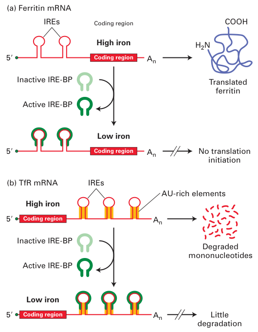
| (a) Ferritin mRNA | （a）铁蛋白mRNA |
| IREs | IRE |
| High iron | 高铁 |
| Low iron | 低铁 |
| Coding region | 编码区 |
| Translated ferritin | 翻译出的铁蛋白 |
| Inactive IRE-BP | 失活IRE-BP |
| Active IRE-BP | 活性IRE-BP |
| No translation initiation | 无翻译起始 |
| (b) TfR mRNA | （b）TfR mRNA |
| AU-rich elements | AU富集元件 |
| Degraded mononucleotides | 降解成的单核苷酸 |
| Little degradation | 很少降解 |
铁需求酶使用。在高铁浓度下，IRE-BP处于不与5′ IRE结合的非活性构象，翻译起始得以进行。新合成的铁蛋白随即结合游离铁离子，防止其积累到有害水平。
该调控系统的另一部分控制铁进入细胞。在脊椎动物中，摄入的铁在血液循环中以与一种称为转铁蛋白的蛋白结合的形式运输。转铁蛋白-铁复合物与质膜上的转铁蛋白受体（TfR）结合后，通过受体介导的内吞作用进入细胞（见图14-31）。TfR mRNA的3′ UTR含有IRE，其茎部带有使mRNA不稳定的AU富集元件（图10-33b）。在高铁浓度下，当IRE-BP处于不结合的非活性构象时，这些AU富集元件通过本节前面所述的机制促进TfR mRNA降解，该机制也导致其他含AU富集元件的短寿命mRNA迅速降解。
转铁蛋白受体生成量的减少会迅速降低铁的输入，从而保护细胞免受过量铁的伤害。然而在低铁浓度下，IRE-BP处于活性状态，能结合TfR mRNA 3′端的IRE。结合的IRE-BP阻止那些本会迅速降解mRNA的蛋白识别AU富集元件。结果，转铁蛋白受体的生成增加，更多铁被运入细胞。
其他受调控的RNA结合蛋白也以类似方式控制特定mRNA的翻译或降解。例如，一种血红素敏感RNA结合蛋白控制编码氨基乙酰丙酸（ALA）合酶的mRNA的翻译，该酶是血红素合成的关键酶。类似地，体外研究显示，编码乳蛋白酪蛋白的mRNA会被激素催乳素稳定，而在缺乏催乳素时迅速降解。
监视机制阻止加工不当的mRNA被翻译
翻译加工不当的mRNA可能导致产生异常蛋白，干扰该基因的正常功能。这种效应相当于第6章讨论的显性失活突变（见图6-41）。有几种机制——统称为mRNA监视——帮助细胞避免翻译加工不当的mRNA分子。我们前面已提到两种此类监视机制：在细胞核中识别加工不当的前体mRNA并由核外切体将其降解，以及对仍与snRNP结合的未完全剪接前体mRNA的核输出的一般性限制。
另一种监视机制称为无义介导的衰变（NMD），它使一个或多个外显子剪接错误的mRNA降解。这种错误剪接常改变不当外显子-外显子连接处3′侧mRNA的开放阅读框，从而引入移码错义突变和不正确的终止密码子。对于几乎所有正确剪接的mRNA，终止密码子都位于最后一个外显子中。无义介导的衰变使终止密码子出现在最后一个外显子-外显子连接处之前的mRNA迅速降解，因为在多数情况下这类mRNA源于RNA剪接错误。然而，NMD也可由基因内产生终止密码子的突变或移码缺失/插入引起。NMD最初是在研究β0地中海贫血患者时发现的，这些患者产生的β-珠蛋白蛋白水平低，并伴有β-珠蛋白mRNA水平低（图10-34）。
为寻找可能指示加工后mRNA中外显子-外显子连接处位置的分子信号，人们发现了外显子连接复合物。如前所述，这些由多种蛋白（包括Y14、Magoh、eIF4IIIA、UPF2、UPF3和REF）组成的复合物在RNA剪接后结合到外显子-外显子连接处5′端约20个核苷酸处
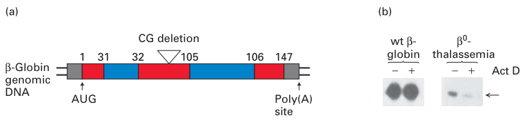
| β-Globin genomic DNA | β-珠蛋白基因组DNA |
| AUG | AUG |
| Poly(A) site | Poly(A)位点 |
| CG deletion | CG缺失 |
| Act D | Act D |
| wt | 野生型 |
| β-globin | β-珠蛋白 |
| β0-thalassemia | β0-地中海贫血 |
并通过与mRNP输出蛋白相互作用刺激mRNP从细胞核输出（见图10-23）。对酵母突变体的分析表明，外显子连接复合物中的一种蛋白（UPF3）参与无义介导的衰变。在细胞质中，UPF3与一种蛋白（UPF1）和一种蛋白激酶（SMG1）相互作用，后者将其磷酸化，使mRNA与P小体结合，抑制翻译并诱导mRNA降解。与外显子连接复合物结合的另一种蛋白（UPF2）结合P小体相关的去腺苷酸酶复合物，后者迅速去除相关mRNA的poly(A)尾，导致其脱帽并被P小体相关的5′→3′外切核糖核酸酶XRN1降解（见图10-24）。对于正确剪接的mRNA，与核帽结合复合物结合的mRNP输出蛋白通过核孔复合物输出，从而保护mRNA免遭降解。人们认为，外显子连接复合物会被第一个翻译该mRNA的"先锋"核糖体的通过所驱离。然而，对于在最后一个外显子-外显子连接处之前就有终止密码子的mRNA，一个或多个外显子连接复合物仍与mRNA结合，导致无义介导的衰变（图10-35a）。其他机制可导致翻译受抑并降解那些过早多聚腺苷酸化的mRNA（非终止衰变）（图10-35b），或含损伤碱基或稳定二级结构、阻碍核糖体沿mRNA移位的mRNA（无行进衰变）（图10-35c）。
mRNA定位使蛋白质得以在细胞质内特定区域生成
许多细胞过程依赖特定蛋白质定位于细胞中特定的结构或区域。在后面的章节中，我们将探讨有些蛋白质在合成后如何被运输到其正确的细胞位置。
另外，蛋白质定位也可通过把mRNA定位到其编码蛋白发挥功能的细胞质特定区域来实现。在迄今研究的大多数例子中，这种mRNA定位由mRNA 3′ UTR中的序列决定。最近一项对果蝇胚胎mRNA定位的基因组水平研究显示，所分析的3000种mRNA中约70%定位于特定的亚细胞区域，提示mRNA定位可能是一种比以往认识普遍得多的现象。
mRNA向酿酒酵母芽体的定位 理解得最透彻的mRNA定位例子发生在芽殖酵母S. cerevisiae中。如第9章所讨论的，单倍体酵母细胞表现为a交配型还是α交配型，取决于III号染色体上表达的MAT基因座处存在的是a基因还是α基因（见图9-35）。把a或α基因从沉默交配型基因座转移到表达的MAT基因座的过程，由一种称为HO的序列特异性核酸内切酶启动。HO基因的转录依赖SWI/SNF染色质重塑复合物（见9.5节）。由母细胞出芽产生的子代酵母细胞含有一种称为Ash1（Asymmetric synthesis of HO，HO不对称合成）的转录阻遏物，它阻止SWI/SNF复合物被招募到HO基因，从而阻止其转录。母细胞中缺乏Ash1，因此能够转录HO基因。结果，母细胞转换交配型，而出芽产生的子代细胞则不转换（图10-36a）。
Ash1蛋白只在子细胞中积累，因为编码它的mRNA被定位到子细胞。这一定位过程需要三种蛋白：She2（SWI依赖的HO表达），一种RNA结合蛋白，特异性结合ASH1 mRNA中具有特定RNA结构的定位信号；Myo4，一种肌球蛋白马达蛋白，沿肌动蛋白丝运输货物（见第17章）；
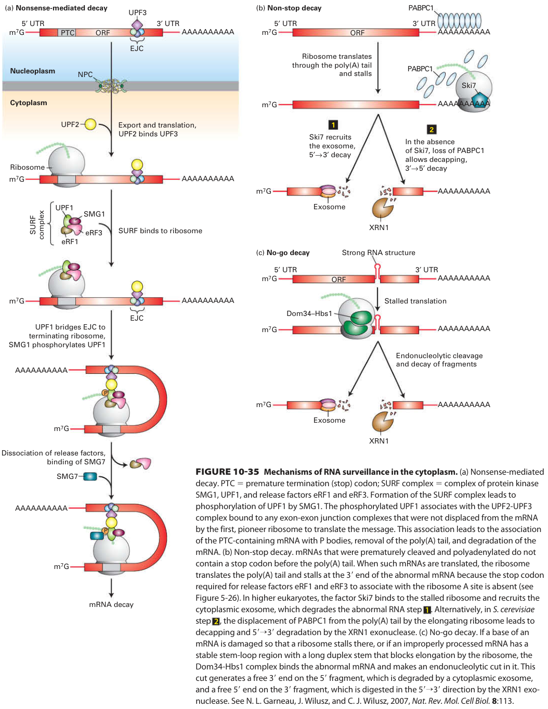
| (a) Nonsense-mediated decay | （a）无义介导的mRNA降解 |
| (b) Non-stop decay | （b）无终止密码子降解 |
| (c) No-go decay | （c）No-go降解 |
| PTC | PTC |
| EJC | EJC |
| UPF1 | UPF1 |
| UPF2 | UPF2 |
| UPF3 | UPF3 |
| SURF complex | SURF复合体 |
| SURF binds to ribosome | SURF结合到核糖体 |
| UPF1 bridges EJC to terminating ribosome, SMG1 phosphorylates UPF1 | UPF1将EJC连接至终止核糖体，SMG1磷酸化UPF1 |
| Dissociation of release factors, binding of SMG7 | 释放因子解离，SMG7结合 |
| eRF1 | eRF1 |
| eRF3 | eRF3 |
| SMG1 | SMG1 |
| SMG7 | SMG7 |
| Ribosome | 核糖体 |
| Exosome | 外切体 |
| XRN1 | XRN1 |
| PABPC1 | PABPC1 |
| Export and translation, UPF2 binds UPF3 | 输出与翻译，UPF2结合UPF3 |
| Ski7 | Ski7 |
| Ribosome translates through the poly(A) tail and stalls | 核糖体翻译通过poly(A)尾并停滞 |
| In the absence of Ski7, loss of PABPC1 allows decapping | 无Ski7时PABPC1缺失使脱帽得以进行 |
| Dom34–Hbs1 | Dom34–Hbs1 |
| Stalled translation | 翻译停滞 |
| Strong RNA structure | 强RNA结构 |
| Endonucleolytic cleavage and decay of fragments | 核酸内切酶切割与片段降解 |
| ORF | ORF |
| 5′ UTR | 5′UTR |
| 3′ UTR | 3′UTR |
| m7G | m7G |
| 5′→3′ decay | 5′→3′降解 |
| 3′→5′ decay | 3′→5′降解 |
| Cytoplasm | 细胞质 |
| Nucleoplasm | 核质 |
| NPC | NPC |
以及She3，它把She2（因而把ASH1 mRNA）连接到Myo4上（图10-36b）。ASH1 mRNA在有丝分裂前于母细胞核中转录。Myo4带着所结合的ASH1 mRNA，沿从母细胞延伸进入芽体的肌动蛋白丝移动，在细胞分裂前把ASH1 mRNA运入正在生长的芽体。
至少还有23种其他mRNA被发现由She2/She3/Myo4系统运输。它们都含有She2所结合的RNA定位信号，通常位于3′ UTR。这一运输过程可在活细胞中用图10-37所示的实验观察。RNA可通过在其序列中引入RNA结合蛋白的高亲和力结合位点而被荧光标记，这类RNA结合蛋白如噬菌体MS2外壳蛋白和噬菌体λ N蛋白，它们分别结合具有特定序列的不同茎环（图10-37a）。当这类工程化mRNA与融合了不同颜色荧光蛋白的噬菌体蛋白一起在芽殖酵母细胞中表达时，融合蛋白结合到其特异的RNA结合位点上，从而把含有这些位点的RNA标记上不同颜色。在图10-37b所示的实验中，ASH1 mRNA通过结合融合了λN的绿色荧光蛋白而被标记。另一种被同一运输系统定位到
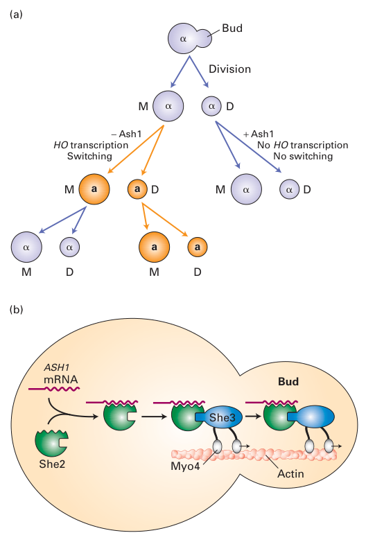
| Division | 分裂 |
| Switching | 转换 |
| No switching | 无转换 |
| Ash1 | Ash1 |
| HO transcription | HO转录 |
| No HO transcription | 无HO转录 |
| Bud | 芽体 |
| ASH1 mRNA | ASH1 mRNA |
| She2 | She2 |
| She3 | She3 |
| Myo4 | Myo4 |
| Actin | 肌动蛋白 |
芽体的mRNA——IST2 mRNA，它编码生长中芽体膜的一个组分——则通过结合融合了MS2外壳蛋白的红色荧光蛋白而被标记。对正在出芽的细胞的视频显示，标记颜色不同的ASH1和IST2 mRNA在母细胞细胞质中积聚于同一个含多种mRNA的大型细胞质RNP颗粒中，这从绿色和红色荧光信号的合并图可以看出。随后，该RNP颗粒在约一分钟内被运入芽体。
形成图10-37b中所观察到的那种大型细胞质RNP颗粒（以及高等真核生物细胞中其他被运输RNA的例子中的颗粒），需要RNA结合蛋白中的低复杂度氨基酸序列，例如由[G/S]Y[G/S]重复组成的序列。含这些低复杂度序列的肽在体外自发缔合，形成半透性凝胶。这些凝胶可通过其中丝氨酸的磷酸化而解离。这类复合物很可能参与在酵母中沿肌动蛋白缆、在高等真核生物的大型不对称细胞（如下一节所述的神经元）中沿微管运输的大型RNP复合物的形成（见第17章和第18章）。与RNP颗粒结合的RNA结合蛋白中这些低复杂度序列的受调控磷酸化，很可能正是图10-37b中所观察到的RNP颗粒受调控地形成与解离的原因。
mRNA向哺乳动物神经系统突触的定位 如前所述，特定mRNA定位于远离神经元胞体的突触，在学习和记忆中起关键作用（图10-38）。与酵母中定位的mRNA一样，这些mRNA在其3′ UTR中含有RNA定位信号。其中一些mRNA最初合成时带有短的
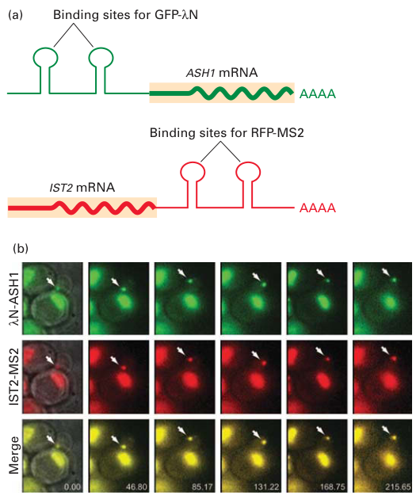
| Binding sites for GFP-λN-ASH1 mRNA | GFP-λN-ASH1 mRNA的结合位点 |
| IST2 mRNA | IST2 mRNA |
| Binding sites for RFP-MS2 | RFP-MS2的结合位点 |
| λN-ASH1 | λN-ASH1 |
| IST2-MS2 | IST2-MS2 |
| Merge | 合并图 |
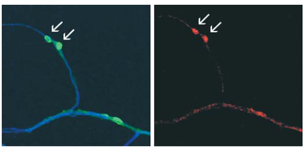
poly(A)尾，不能起始翻译。同样，含多个带定位信号mRNA的大型RNP颗粒在靠近细胞核的细胞质中形成。在这种情况下，RNP颗粒随后由驱动蛋白马达蛋白沿延伸至轴突全长的微管向下运输到突触（见第18章）。某一突触处的电活动随后可刺激该突触区域内mRNA的多聚腺苷酸化，激活编码蛋白的翻译，使该突触增大并改变其神经生理特性，而神经元所构成的数百至数千个其他突触则不受影响。
- 大多数mRNA的降解源于poly(A)尾逐渐缩短（去腺苷酸化）随后由外切体介导的3′→5′消化，或者源于5′帽的去除及5′→3′外切核糖核酸酶的消化（见图10-27）。
- 编码以短促爆发方式表达的蛋白质的真核mRNA，其3′ UTR中通常有AU富集序列（AU富集元件）的重复拷贝。结合这些元件的特定蛋白还与去腺苷酸化酶复合物和细胞质外切体相互作用，促进RNA迅速降解。
- 翻译可被微小RNA（miRNA）抑制，miRNA与特定靶mRNA 3′非翻译区（UTR）中的序列形成不完全杂交体。被多个miRNA结合的mRNA聚集在细胞质中的P小体内，在那里经脱帽并被细胞质外切体消化而降解。
- 与之相关的RNA干扰现象很可能作为抵御病毒和转座子的早期防御系统演化而来，它导致与短干扰RNA（siRNA）形成完全杂交体的mRNA迅速降解。
- miRNA和siRNA都含21–23个核苷酸，由更长的前体分子生成，被Argonaute蛋白结合并组装成多蛋白的RNA诱导沉默复合物（RISC）。RISC复合物或者抑制靶mRNA的翻译并诱导其定位到P小体（在那里被降解）（miRNA），或者切割靶mRNA（siRNA），产生未受保护的末端，被细胞质外切体和5′→3′外切核酸酶XRN1迅速降解（见图10-28和图10-29）。
- 细胞质多聚腺苷酸化是带有短poly(A)尾的mRNA进行翻译所必需的。特定蛋白与3′ UTR中调控元件的结合抑制这些mRNA的翻译。由外部信号诱导的这种RNA结合蛋白的磷酸化，导致3′ poly(A)尾延长，从而进行翻译（见图10-31）。
- 多种蛋白与mRNA 3′或5′ UTR中调控元件的结合，调控细胞质中许多mRNA的翻译或降解。
- 铁蛋白mRNA的翻译和转铁蛋白受体（TfR）mRNA的降解由同一个铁敏感RNA结合蛋白IRE-BP调控。在低铁浓度下，该蛋白处于活性构象，结合mRNA中形成茎环的特定序列，抑制铁蛋白mRNA的翻译和TfR mRNA的降解（见图10-33）。这种双重控制精确调节细胞内的铁水平。
- 无义介导的衰变和其他mRNA监视机制阻止加工不当的mRNA被翻译成异常蛋白，这类异常蛋白可能干扰相应正常蛋白的功能。
- 许多mRNA由序列特异性RNA结合蛋白运输到特定的亚细胞位置，这些蛋白结合通常位于3′ UTR的定位序列。这些RNA结合蛋白随后直接或通过中间蛋白与马达蛋白结合，后者把含许多带定位信号mRNA的大型RNP颗粒沿肌动蛋白或微管纤维运送到细胞质中的特定位置。
10.5 rRNA与tRNA的加工
在快速生长的哺乳动物细胞（例如培养的HeLa细胞）中，总RNA约有80%是rRNA，15%是tRNA；因此，蛋白编码mRNA只占总RNA的一小部分。与pre-mRNA一样，由大多数rRNA基因和tRNA基因产生的初级转录物要经过广泛加工，才能生成这些RNA成熟而有功能的形态。
核糖体是一种高度进化、结构复杂的装置（见图5-22），其结构已针对蛋白质合成中的功能进行了优化。核糖体的合成需要三种核RNA聚合酶共同发挥作用并彼此协调。与大核糖体亚基结合的28S和5.8S rRNA，以及小亚基中唯一的18S rRNA，均由RNA聚合酶I转录。大亚基的5S rRNA由RNA聚合酶III转录，编码核糖体蛋白的mRNA则由RNA聚合酶II转录。除四种rRNA和约70种核糖体蛋白外，还有至少150种其他RNA和蛋白质，在两个核糖体亚基经由一系列协调步骤进行组装的过程中与它们发生瞬时相互作用。此外，成熟rRNA的多个特定碱基和核糖会被修饰，以优化其在蛋白质合成中的功能。核糖体亚基的合成与组装大多发生在核仁（核内一个不被膜包围的亚区室）中，但也有一些步骤发生在核质中，即从核仁运往核孔复合物的途中。在向核外输出之前还存在一个质量控制步骤，从而只有功能完备的亚基才被输出到细胞质——核糖体亚基成熟的最后几步就在细胞质中完成。tRNA同样在细胞核内由前体初级转录物加工而来，并在被输出到细胞质、用于蛋白质合成之前经历广泛修饰。本节我们先讨论rRNA的加工与修饰以及核糖体的组装与核输出，然后讨论tRNA的加工与修饰。
前体rRNA基因充当核仁组织者
在高等真核生物中，与大（60S）核糖体亚基结合的28S和5.8S rRNA，以及与小（40S）核糖体亚基结合的18S rRNA（以及其他所有真核生物中功能相当的rRNA），都由同一个前体rRNA转录单位编码。在人类细胞中，该转录单位由RNA聚合酶I转录，产生一个45S（约13.7 kb）的初级转录物（pre-rRNA，即前体rRNA），后者经切割和加工，成为细胞质核糖体中的成熟28S、18S和5.8S rRNA。第四种rRNA即5S rRNA则单独编码，并在核仁之外转录。对来自许多物种、编码45S pre-rRNA的DNA进行测序表明，这段DNA在所有真核生物中具有若干共同特性。第一，前体rRNA基因排成长串联阵列，阵列之间由非转录
间隔区隔开，其长度从蛙类的2 kb到人类的30 kb不等（图10-39）。第二，与三种成熟rRNA对应的基因组区域总是按相同的5′→3′顺序排列：18S、5.8S和28S。第三，在所有真核细胞中（甚至在细菌中），前体rRNA基因都编码一些在加工过程中被切除并迅速降解的区域。这些区域可能有助于rRNA的正确折叠，但一旦折叠完成就不再需要。前体rRNA转录单位的一般结构见图10-40。
pre-rRNA的合成及大部分加工都发生在核仁中。当初用原位杂交在核仁中鉴定出pre-rRNA基因时，人们还不知道形成核仁是否还需要其他DNA。随后用转基因果蝇品系进行的实验证明，一个完整的pre-rRNA转录单位就足以诱导形成一个小核仁。因此，单个pre-rRNA基因便足以充当核仁组织者，核糖体的所有其他组分则扩散到新形成的pre-rRNA处。用光学显微镜和电子显微镜观察到的核仁结构，源自
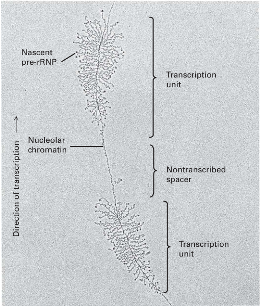
| Transcription unit | 转录单位 |
| Direction of transcription | 转录方向 |
| Nontranscribed spacer | 非转录间隔区 |
| Nucleolar chromatin | 核仁染色质 |
| Nascent pre-rRNP | 新生前体rRNP |
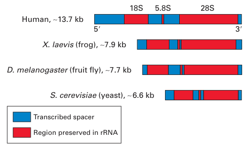
| Human, ∼13.7 kb | 人类，约13.7 kb |
| X. laevis (frog), ∼7.9 kb | 非洲爪蟾（蛙），约7.9 kb |
| D. melanogaster (fruit fly), ∼7.7 kb | 黑腹果蝇（果蝇），约7.7 kb |
| S. cerevisiae (yeast), ∼6.6 kb | 酿酒酵母（酵母），约6.6 kb |
| 18S | 18S |
| 5.8S | 5.8S |
| 28S | 28S |
| Transcribed spacer | 转录间隔区 |
| Region preserved in rRNA | rRNA中保留的区域 |
前体RNA的加工以及核糖体亚基的组装。
小核仁RNA协助加工前体rRNA
核糖体亚基的组装、成熟和向细胞质的输出，在酵母（酿酒酵母，S. cerevisiae）中了解得最为清楚。然而，所涉及的几乎所有蛋白质和RNA在多细胞真核生物中都高度保守，这些生物中核糖体生物合成的基本方面很可能相同。与pre-mRNA一样，新生的pre-rRNA转录物立即被蛋白质结合，形成前核糖体核糖核蛋白颗粒（pre-rRNP）。出于尚不清楚的原因，pre-rRNA的切割要等到其转录接近完成时才开始。在酵母中，转录一条pre-rRNA约需6分钟。转录一旦完成，pre-rRNA便在约10秒内被切割，其碱基和核糖也被修饰。在快速生长的酵母细胞中，每秒约有40对核糖体亚基被合成、加工并运送到细胞质。如此高的核糖体合成速率——尽管转录一条pre-rRNA看似需要很长时间——之所以可能，是因为pre-rRNA基因上密布着RNA聚合酶I分子，它们同时转录同一个基因（见图10-39），也因为在酵母的核仁组织者即第XII号染色体上有100–200个这样的基因。
在酵母中，约6.6 kb的初级转录物经由一系列切割和外切核酸酶步骤被切开，最终产生核糖体中成熟的rRNA（图10-41）。加工过程中，pre-rRNA还会被广泛修饰，主要是特定核糖的2′-羟基被甲基化，以及特定尿苷残基转变为假尿苷。这些rRNA的转录后修饰很可能对蛋白质合成很重要，因为它们高度保守。几乎所有这些修饰都发生在
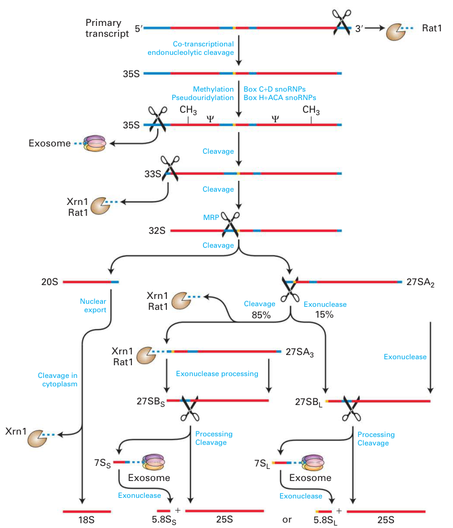
| Primary transcript | 初级转录本 |
| Co-transcriptional endonucleolytic cleavage | 共转录核酸内切酶切割 |
| Box C+D snoRNPs | Box C+D snoRNP |
| Box H+ACA snoRNPs | Box H+ACA snoRNP |
| Cleavage | 切割 |
| Cleavage in cytoplasm | 细胞质中切割 |
| Nuclear export | 核输出 |
| Exonuclease | 核酸外切酶 |
| Exonuclease processing | 核酸外切酶加工 |
| Rat1 | Rat1 |
| Xrn1 | Xrn1 |
| Exosome | 外切体 |
| Methylation | 甲基化 |
| Pseudouridylation | 假尿苷化 |
| MRP | MRP |
| 35S | 35S |
| 33S | 33S |
| 32S | 32S |
| 27SA2 | 27SA2 |
| 27SA3 | 27SA3 |
| 27SB | 27SB |
| 27SBL | 27SBL |
| 27SBS | 27SBS |
| 20S | 20S |
| 7S | 7S |
| 7SL | 7SL |
| 7SS | 7SS |
| 5.8S | 5.8S |
| 5.8SL | 5.8SL |
| 25S | 25S |
| 18S | 18S |
核糖体最保守的核心结构中，而该结构直接参与蛋白质合成。
2′-O-甲基化和假尿苷形成的确切位点，由约150种不同的小型、仅存在于核仁的RNA分子决定，这些RNA称为小核仁RNA（snoRNA），它们与pre-rRNA分子瞬时杂交。与在pre-mRNA加工中发挥作用的snRNA一样，snoRNA与蛋白质结合，形成称为snoRNP的核糖核蛋白颗粒。一类由40多种snoRNP组成的群体（含框C+D snoRNA）将甲基转移酶定位到pre-rRNA中的甲基化位点附近。多种不同的框C+D snoRNA通过相似的机制引导多个位点的甲基化。它们具有共同的序列和结构特征，并结合着一组共同的蛋白质。这些snoRNA各自的一两个区域与pre-rRNA上的位点精确互补，从而把甲基转移酶引向与其杂交的序列中的特定核糖（图10-42a）。第二大类snoRNP（含框H+ACA snoRNA）负责定位将尿苷转变为假尿苷的酶（图10-42b）。这一转变涉及嘧啶环的旋转（图10-42c）。pre-rRNA中待修饰尿苷两侧的碱基与H+ACA snoRNA中一个茎上凸环（bulge）内的碱基配对，使该尿苷从螺旋双链区中凸出，就像pre-mRNA剪接体剪接中的分支点A一样（见图10-10）。pre-rRNA核苷酸的其他修饰，例如腺嘌呤二甲基化，则由特定蛋白质完成，无需引导性snoRNA协助。
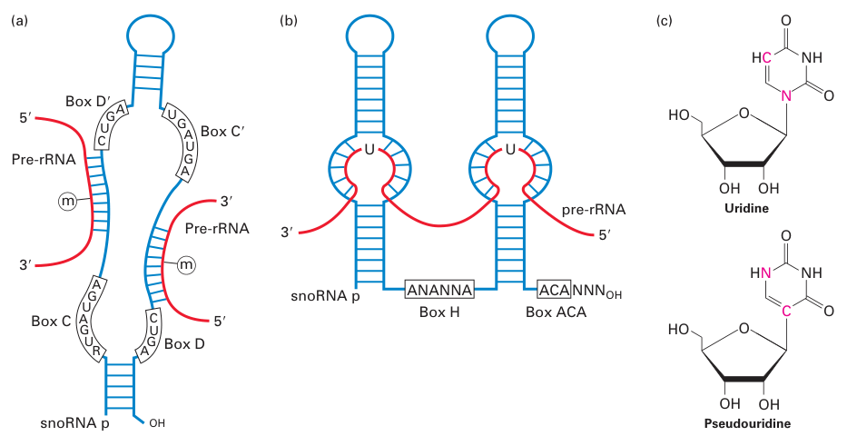
| Pre-rRNA | 前体rRNA |
| snoRNA | snoRNA |
| Box C | Box C |
| Box D | Box D |
| Box H | Box H |
| Box ACA | Box ACA |
| Uridine | 尿苷 |
| Pseudouridine | 假尿苷 |
U3 snoRNA被组装进一个含有约72种蛋白质的巨大snoRNP，称为小亚基（SSU）加工体，它决定在A0位点进行切割——这是靠近pre-rRNA 5′端的第一次切割（见图10-41）。U3 snoRNA与pre-rRNA上游的一个区域碱基配对，从而确定切割的位置。据认为，加工体形成了在pre-rRNP电镜照片中可见的"5′球状凸起"（见图10-39）。其他snoRNP的碱基配对决定了切除转录间隔区的后续切割反应。启动酵母大亚基5.8S和25S rRNA加工的最初切割由RNase MRP完成，后者是由九种蛋白质与一条RNA组成的复合物。间隔序列一旦从pre-rRNA上切下，便由降解pre-mRNA剪接所去除内含子的那些与外切体结合的核3′→5′外切核酸酶降解。核5′→3′外切核糖核酸酶（酵母中为Rat1；人类中为XRN1）也会切除5′间隔区的一些部分。
有些snoRNA由自身的启动子经RNA聚合酶II或III表达。然而值得注意的是，绝大多数snoRNA是由那些编码参与核糖体合成或翻译的蛋白质的功能性mRNA的基因，从剪接去除的内含子加工而来的。有些snoRNA则来自显然无功能mRNA所剪接去除的内含子。编码这些mRNA的基因似乎仅仅是为了从被切除的内含子中表达出snoRNA而存在。
与18S、5.8S和28S rRNA基因不同，5S rRNA基因由RNA聚合酶III在核仁之外的核质中转录。5S rRNA只需再经少量加工以去除3′端的核苷酸，便扩散到核仁，在那里与pre-rRNA组装在一起，并持续结合于将被切割成大核糖体亚基前体的那个区域。
小（40S）核糖体亚基的大多数核糖体蛋白在转录过程中就与新生的pre-rRNA结合（图10-43）。在该亚基的90S RNP前体中，全长pre-rRNA被切割后释放出一个pre-40S颗粒，后者只需再经少数几步重塑即可被运往细胞质。pre-40S颗粒一旦离开核仁，便迅速穿过核质，并经核孔复合物（NPC）输出，详见下文。小核糖体亚基成熟的最后几步发生在细胞质中：由细胞质5′→3′外切核糖核酸酶XRN1将20S rRNA外切加工成成熟的小亚基18S rRNA，以及由细胞质酶Dim1将18S rRNA 3′端附近两个相邻的腺嘌呤二甲基化。
与pre-40S颗粒不同，大亚基的前体需要经历大量重塑，与许多非核糖体蛋白发生多得多的瞬时相互作用，才能成熟到足以输出到细胞质。因此，正在成熟的60S亚基离开细胞核所需的时间要长得多（在培养的人类细胞中为30分钟，而40S亚基的输出只需5分钟）。多种推定的RNA解旋酶和小G蛋白与正在成熟的pre-60S亚基相关联。有些RNA解旋酶是去除snoRNP所必需的，后者与pre-rRNA完美碱基配对长达30个碱基对。其他RNA解旋酶可能负责破坏蛋白质-RNA相互作用。需要如此众多的GTP酶提示，
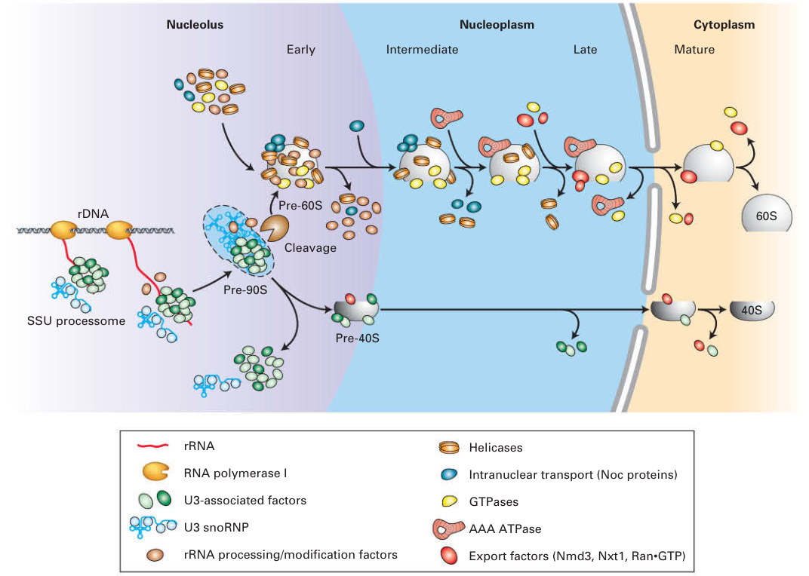
| rDNA | rDNA |
| Nucleolus | 核仁 |
| Nucleoplasm | 核质 |
| Cytoplasm | 细胞质 |
| rRNA | rRNA |
| RNA polymerase I | RNA聚合酶I |
| SSU processome | SSU加工体 |
| U3 snoRNP | U3 snoRNP |
| U3-associated factors | U3相关因子 |
| rRNA processing/modification factors | rRNA加工/修饰因子 |
| Helicases | 解旋酶 |
| GTPases | GTP酶 |
| AAA ATPase | AAA ATP酶 |
| Intranuclear transport (Noc proteins) | 核内转运（Noc蛋白） |
| Export factors (Nmd3, Nxt1, ...) | 输出因子（Nmd3、Nxt1等） |
| Pre-90S | Pre-90S |
| Pre-60S | Pre-60S |
| Pre-40S | Pre-40S |
| 60S | 60S |
| 40S | 40S |
| Mature | 成熟 |
| Early | 早期 |
| Intermediate | 中期 |
| Late | 晚期 |
| Cleavage | 切割 |
大亚基RNP的组装与重塑过程中存在许多质量控制检查点：必须完成一步，GTP酶才被激活，从而允许下一步进行。AAA ATP酶家族的成员也与之瞬时结合。这类蛋白质常参与大规模的分子运动，可能是将庞大而复杂的rRNA折叠成正确构象所必需的。60S亚基成熟的某些步骤发生在核质中，即从核仁运往核孔复合物的途中（见图10-43）。关于核糖体亚基形成过程中所发生的那些复杂、引人入胜而又必不可少的重塑过程，仍有大量问题有待了解。
大核糖体亚基是穿过核孔复合物的最大结构之一。大亚基在核质中的成熟会产生一个称为Nmd3的核输出衔接蛋白的结合位点。Nmd3被核转运受体exportin 1（又称Crm1）结合。这一结合是另一个质量控制步骤，因为只有正确组装的亚基才能结合Nmd3并被输出。mRNP输出蛋白的小亚基（Nxt1）也会与接近成熟的大核糖体亚基结合。这些核转运受体使大亚基得以扩散穿过NPC的中央通道；该通道中充满了无结构蛋白结构域构成的云状物，这些结构域从衬在通道壁上的蛋白质的结构化部分延伸出来（见第13章）。构成NPC中央通道壁的若干其他亚基也是核糖体亚基输出所必需的，它们可能还具有专门针对这一任务的额外功能。核糖体亚基的尺寸（直径约25–30 nm）与NPC中央通道相当，因此通过时可能既不使核糖体亚基也不使通道发生变形。大亚基在细胞质中的最终成熟包括去除这些输出因子。与大多数大分子（包括tRNA和pre-miRNA，但不包括大多数mRNP）从核内输出的情况一样，核糖体亚基的输出需要一种称为Ran的小G蛋白发挥作用，详见第13章。
自我剪接的I类内含子是最早发现的催化性RNA实例
20世纪70年代，人们发现原生动物嗜热四膜虫（Tetrahymena thermophila）的pre-rRNA基因中含有一个内含子。仔细搜寻也未能找到哪怕一个不含这段额外序列的pre-rRNA基因，这表明在这些生物中，产生成熟rRNA需要经过剪接。1982年，体外研究表明，在没有任何蛋白质存在的情况下，pre-rRNA仍能在正确位点被剪接，这首次提示RNA能够像酶一样起催化剂的作用。
随后，大量自我剪接序列被发现于其他单细胞生物的pre-rRNA中、线粒体和叶绿体的pre-rRNA中、某些大肠杆菌噬菌体的若干pre-mRNA中，以及一些细菌tRNA初级转录物中。所有这些前体中的自我剪接序列统称为I类内含子，它们以鸟苷作为辅因子，并能通过内部碱基配对折叠，使必须连接的两个外显子相互靠近。如前所述，某些线粒体和叶绿体的pre-mRNA和tRNA还含有第二类自我剪接内含子，称为II类内含子。
I类内含子、II类内含子和剪接体所用的剪接机制大体相似，都涉及两次
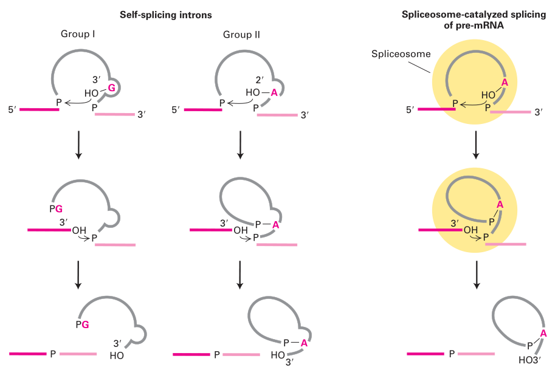
| Spliceosome-catalyzed splicing of pre-mRNA | 剪接体催化的前体mRNA剪接 |
| Spliceosome | 剪接体 |
| Group I | I型 |
| Group II | II型 |
| Self-splicing introns | 自剪接内含子 |
转酯反应，且不需要能量输入（图10-44）。对来自四膜虫pre-rRNA的I类内含子进行的结构研究，结合突变和生化实验，揭示出该RNA折叠成精确的三维结构；这一结构像酶一样，含有用于结合底物的深沟，以及参与催化的、溶剂无法接近的区域。I类内含子像金属酶一样发挥作用，把参与两次转酯反应的原子精确地置于催化性Mg2+离子旁边。现在有大量证据表明，II类内含子以及剪接体中snRNA所进行的剪接同样涉及结合的催化性Mg2+离子。在I类和II类自我剪接内含子中（很可能在剪接体中也是如此），RNA作为核酶——即具有催化能力的RNA序列——发挥作用。
pre-tRNA在细胞核中经历广泛修饰
成熟的胞质tRNA平均长75–80个核苷酸，由RNA聚合酶III在核质中合成的较大前体（pre-tRNA）产生。成熟tRNA含有许多tRNA初级转录物中所没有的修饰碱基。所有pre-tRNA的加工过程中都会发生切割和碱基修饰；有些
pre-tRNA在加工过程中还会被剪接。所有这些加工和修饰事件都发生在细胞核中。
所有pre-tRNA都含有一段长度可变、而成熟tRNA中不存在的5′序列（图10-45）。之所以存在这些额外的5′核苷酸，是因为成熟tRNA的5′端并非由转录起始位点产生，而是由tRNA三维结构所决定的一次内切核酸酶切割产生。这些额外核苷酸由核糖核酸酶P（RNase P）去除，后者是一种核糖核蛋白内切核酸酶。对大肠杆菌RNase P的研究表明，在高Mg2+浓度下，仅其RNA组分就能识别并切割大肠杆菌pre-tRNA。RNase P的多肽提高了RNA切割的速率，使切割得以在生理Mg2+浓度下进行。真核生物中存在一种与之相当的RNase P。
pre-tRNA中约10%的碱基在加工过程中被酶促修饰。碱基修饰分为三类（见图10-45）：
1. pre-tRNA 3′端的U残基被一段CCA序列取代。CCA序列存在于所有tRNA的3′端，是蛋白质合成过程中氨酰-tRNA合成酶对tRNA进行装载所必需的。tRNA合成的这一步很可能起质量控制点的作用，因为只有正确折叠的tRNA才能被CCA添加酶识别。
2. 甲基和异戊烯基被加到嘌呤碱基的杂环上，特定残基核糖上的2′-OH基团被甲基化。
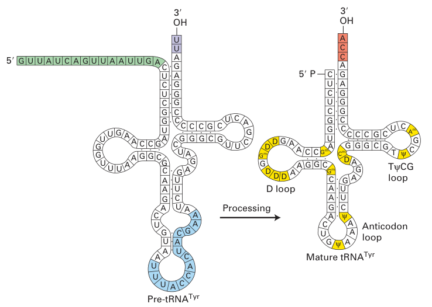
| Pre-tRNATyr | 前体tRNATyr |
| Mature tRNATyr | 成熟tRNATyr |
| Processing | 加工 |
| Anticodon loop | 反密码子环 |
| D loop | D环 |
| TψCG loop | TψCG环 |
| D = dihydrouridine | D=二氢尿苷 |
| ψ = pseudouridine | ψ=假尿苷 |
3. 特定的尿苷被转变为二氢尿苷、假尿苷或核糖胸苷残基。这些碱基和核糖修饰的功能尚不十分清楚，但由于它们高度保守，很可能对蛋白质合成有正面影响。
如图10-45所示，由酵母酪氨酸tRNA（tRNATyr）基因表达的pre-tRNA含有一个14碱基的内含子，而成熟tRNATyr中不含该内含子。其他一些真核tRNA基因和某些古菌tRNA基因也含有内含子。核内pre-tRNA的内含子比pre-mRNA的内含子短，且缺少pre-mRNA中存在的共有剪接位点序列（见图10-7）。pre-tRNA内含子也与叶绿体和线粒体pre-rRNA中长得多、能自我剪接的I类和II类内含子明显不同。pre-tRNA的剪接机制在三个基本方面不同于自我剪接内含子和剪接体所用的机制（见图10-44）。第一，pre-tRNA的剪接由蛋白质而非RNA催化。第二，pre-tRNA内含子通过一步切除，该步同时在内含子两端进行切割。最后，连接由内含子两侧切割产生的两半tRNA需要GTP和ATP的水解。
pre-tRNA在核质中加工完成后，成熟tRNA由exportin-t经核孔复合物运往细胞质；exportin-t是一种专门负责tRNA核输出的exportin（见第13章）。在细胞质中，tRNA在氨酰-tRNA合成酶、延伸因子和核糖体之间传递，
参与蛋白质合成（见第5章）。因此，tRNA通常与蛋白质结合在一起，在细胞中很少以游离状态存在；mRNA和rRNA也是如此。
核体是功能特化的核结构域
用电子显微镜以及荧光标记抗体染色对植物和动物细胞核进行高分辨率观察，揭示出核内除染色体领土和核仁之外还存在一些结构域。这些特化的核结构域称为核体（nuclear body），它们不被膜包围。尽管如此，它们是特定蛋白质和RNA高度集中的区域，在核内形成独特的、往往大致呈球形的结构（图10-46）。最显著的核体是核仁，即前面讨论过的核糖体亚基合成与组装场所。结构研究还描述了其他几种类型的核体。
用荧光标记核蛋白进行的实验表明，细胞核是一个高度动态的环境，蛋白质在其中迅速扩散于核质之中。与核体相关的蛋白质常常也以较低浓度出现在核体之外的核质中，荧光研究表明它们会扩散进入和离开核体。基于对活细胞中分子运动性的测量，核体可以在数学上建模为特定扩散蛋白所预期的稳态：这些蛋白质之间的相互作用亲和力足以形成自组织的高浓度区域，但彼此间的亲和力又低到足以扩散进出这些结构。在电镜照片中，这些结构呈现为由相互作用组分构成的、异质的海绵状网络。这里我们讨论几个核体的例子。
卡哈尔体 卡哈尔体是直径0.2–1 μm的球状结构，一个多世纪以来一直在大型细胞核中观察到（图10-46a）。目前的研究表明，与核仁一样，卡哈尔体是剪接体snRNP及其他RNP复合物组装的中心。与rRNA一样，snRNA也经历特定的转录后修饰，例如特定尿苷残基转变为假尿苷，以及甲基被加到特定核糖的2′-羟基上；这些修饰对snRNP在pre-mRNA剪接中的正确组装和功能很重要。这些修饰发生在卡哈尔体中，由一类称为scaRNA（小卡哈尔体相关RNA）的snoRNA样引导RNA分子引导。还有
| Speckle | 核斑点 |
| Nucleolus | 核仁 |
| Histone locus body | 组蛋白基因座小体 |
证据表明，卡哈尔体是U4/U6/U5三-snRNP复合物重新组装的场所——该复合物由mRNA去除内含子过程中释放出的游离U4、U5和U6 snRNP重新组装而成（见图10-11）。
组蛋白基因座小体 组蛋白基因座小体（图10-46b）是组蛋白mRNA合成的场所。它们含有高浓度的U7 snRNP，后者参与主要组蛋白mRNA的3′端特殊加工——这些mRNA没有poly(A)尾。
核斑点 使用针对snRNP蛋白和其他参与pre-mRNA剪接的蛋白质的荧光标记抗体，可观察到核斑点为约25–50个不规则、无定形的结构，直径0.5–2 μm，分布于脊椎动物细胞的核质中（图10-46c）。由于核斑点并不位于与染色质紧密相连的共转录pre-mRNA剪接位点，它们被认为是snRNP和参与pre-mRNA剪接的蛋白质的储存区，这些组分在需要时被释放到核质中。
核副斑点 副斑点由RNP构成，这些RNP是通过一种长非蛋白编码RNA（lncRNA）——NEAT1——与DBHS（Drosophila Behavior Human Splicing，果蝇行为人类剪接）家族蛋白P54NRB/NONO、PSPC1和PSF/SFPQ之间的相互作用形成的。副斑点通过把含有双链RNA区域（这些区域已经过腺苷到肌苷的编辑）的RNA滞留在核内，对基因表达的控制至关重要。由此，它们可能参与核内那些人们了解甚少的mRNA质量控制机制。
早幼粒细胞白血病（PML）核体 最初发现PML基因，是因为在患有早幼粒细胞白血病（PML）这一罕见疾病的患者白血病细胞中观察到了该基因内部的染色体易位。当把针对PML蛋白的特异性抗体用于哺乳动物细胞的免疫荧光显微镜研究时，发现该蛋白定位在细胞核内10–30个直径0.3–1 μm、大致呈球形的区域。对于这些PML核体，人们提出了多种功能，但逐渐形成的共识是：它们是参与DNA修复和细胞凋亡诱导的蛋白质复合物组装与修饰的场所。例如，重要的p53抑癌蛋白在DNA损伤后似乎会在PML核体中被磷酸化和乙酰化修饰，从而增强其激活那些产物能缓解该损伤的基因表达的能力。PML核体也是细胞抵御DNA病毒所必需的一环，这种防御由干扰素诱导；干扰素是由病毒感染细胞和参与免疫应答的T淋巴细胞分泌的蛋白质（见第23章）。
PML核体也是蛋白质翻译后修饰的场所，其方式是通过添加一种称为SUMO1（small ubiquitin-like moiety-1，小泛素样部分1）的小型泛素样蛋白；SUMO1能够控制被修饰蛋白的活性和亚细胞定位。许多转录激活因子在被SUMO化后受到抑制，而将其SUMO化位点突变则会增强它们刺激转录的活性。这些观察表明，PML核体参与了一种人们尚未完全了解的转录抑制机制。
除核糖体亚基合成之外的核仁功能 最早被观察到的核体——核仁——具有特化的亚结构区域（图10-46b），这些区域专门承担核糖体生物发生之外的功能。有证据表明，参与蛋白质分泌和内质网膜插入的信号识别颗粒（见第13章）在核仁中组装，然后输出到细胞质，在那里完成最终的成熟。在酵母中调控有丝分裂最后阶段过程的Cdc14蛋白磷酸酶，被隔离在核仁中，直到染色体正确地分配到芽体中（见第19章）。此外，一种称为ARF的抑癌蛋白被隔离在核仁中，并在DNA损伤时被释放；ARF参与调控由人类癌症中最常发生突变的基因——p53基因——所编码的蛋白质（见第24章）。再者，异染色质常常在核仁表面形成（见图8-28），提示与核仁相关的蛋白质参与这种抑制转录的染色质结构的形成。
- 由RNA聚合酶I转录产生的大前体pre-rRNA（在人类中为13.7 kb）经过切割、外切核酸酶消化和碱基修饰，产生成熟的28S、18S和5.8S rRNA，这些rRNA与核糖体蛋白缔合形成核糖体亚基。
- pre-rRNA的转录与加工发生在核仁中。大核糖体亚基的5S rRNA组分由RNA聚合酶III在核质中合成。
- 约150种小核仁RNA（snoRNA）与蛋白质结合成snoRNP，与pre-rRNA中的特定位点碱基配对，从而在核仁的rRNA加工过程中引导核糖甲基化、尿苷向假尿苷的转变以及特定位点的切割。
- I类和II类自我剪接内含子，以及剪接体中可能存在的snRNA，都作为核酶（即具有催化活性的RNA序列）发挥作用，它们通过需要结合Mg2+的类似转酯反应完成剪接（见图10-44）。
- 由RNA聚合酶III在核质中合成的pre-tRNA，经去除5′端序列、添加CCA至3′端以及修饰多个内部碱基而被加工（见图10-45）。
- 有些pre-tRNA含有一个短内含子，该内含子由一种蛋白质催化的机制去除，这一机制不同于pre-mRNA和自我剪接内含子所用的剪接机制。
- 所有种类的RNA分子都与蛋白质结合形成各种类型的核糖核蛋白颗粒，无论是在细胞核中，还是在被输出到细胞质之后。
- 核体是细胞核中功能特化的区域，在那里相互作用的蛋白质形成自组织结构。其中许多核体（包括核仁）是RNP复合物组装的区域。
访问LaunchPad获取学习工具并了解更多本章内容：展望未来、分析数据、扩展参考文献、附加学习工具（包括视频、动画和测验）
关键术语
复习题
- 1.描述蛋白质编码基因转录后调控的三种类型。
- 2.判断正误：CTD负责mRNA加工中那些对mRNA特异、而不适用于其他形式RNA的步骤。请解释你判断为"正确"或"错误"的理由。
- 3.在一个mRNA中存在若干保守序列，它们决定剪接在何处发生。相对于外显子–内含子连接处，这些序列位于何处？这些序列在剪接过程中有何意义？其中一个重要区域是内含子中的分支点A。分支点A在剪接过程中起什么作用？该作用能否由2′碳或3′碳上的OH基完成？
- 4.请说明hnRNA、snRNA、miRNA、siRNA和snoRNA之间有哪些差异？
- 5.请说明II类内含子自我剪接与剪接体剪接在机制上有哪些相似之处？有何证据表明两者之间可能存在进化关系？
- 6.你获得了一个基因的序列，该基因含10个外显子、9个内含子，以及一个含多聚腺苷酸化共有序列的3′ UTR。第5个内含子也含有一个多聚腺苷酸化位点。为检验这两个多聚腺苷酸化位点是否都被使用，你分离mRNA，发现来自肌肉组织的转录本较长，而来自其他所有组织的转录本较短。请推测产生这些不同转录本的机制。
- 7.有一种称为RNA编辑的过程，在锥虫和植物的线粒体中以及叶绿体中很常见，在高等真核生物中则罕见发生。什么是RNA编辑？在人类ApoB这一已有文献记载的例子中，它体现了什么益处？
- 8.由于DNA存在于细胞核中，转录是定位在核内的过程；而负责蛋白质合成的核糖体存在于细胞质中。为什么hnRNP向细胞质的运输局限于核孔复合物？
- 9.细胞核中的一种蛋白质复合物负责把mRNA分子转运进细胞质。请描述构成这一输出因子的蛋白质。可能是哪两类蛋白质参与了驱动mRNP和输出因子定向进入细胞质的机制？
- 10.在用于抑制基因表达的各种方法中，RNA敲低已成为一种有力的工具。请简要描述如何敲低基因表达。向TSC1引入siRNA会对人类细胞产生什么影响？
- 11.请推测为什么Dicer活性缺陷的植物对RNA病毒感染的敏感性增高。
- 12.细胞中mRNA稳定性是蛋白质水平的关键调控因素。请简要描述mRNA降解的三条途径。 假设一个酵母细胞的DCP1基因发生突变，导致去帽活性降低，你预期在该突变细胞中观察到的P小体会发生变化吗？
- 13.现在看来，mRNA定位是一种普遍现象。mRNA定位对细胞有何益处？有何证据表明某些mRNA被引导在特定亚细胞位置聚集？
参考文献
Processing of Eukaryotic Pre-mRNA
Bergkessel, M., G. M. Wilmes, and C. Guthrie. 2009. SnapShot: formation of mRNPs. Cell 136:794.
Hocine, S., R. H. Singer, and D. Grünwald. 2010. RNA process- ing and export. Cold Spring Harb. Perspect. Biol. 2(12):a000752.
Houseley, J., and D. Tollervey. 2009. The many pathways of RNA degradation. Cell 136:763–776.
Lambowitz, A. M., and S. Zimmerly. 2004. Mobile group II introns. Annu. Rev. Genet. 38:1–35.
Moore, M. J., and N. J. Proudfoot. 2009. Pre-mRNA process- ing reaches back to transcription and ahead to translation. Cell 136:688–700.
Sharp, P. A. 2005. The discovery of split genes and RNA splic- ing. Trends Biochem. Sci. 30:279–281.
Shi, Y., and J. L. Manley. 2015. The end of the message: mul- tiple protein-RNA interactions define the mRNA polyadenylation site. Genes Dev. 29:889–897.
Valadkhan, S. 2010. Role of the snRNAs in spliceosomal active site. RNA Biol. 7:345–353.
Wahl, M. C., C. L. Will, and R. Lührmann. 2009. The spliceo- some: design principles of a dynamic RNP machine. Cell 136:701–718.
Regulation of Pre-mRNA Processing
Licatalosi, D. D., and R. B. Darnell. 2010. RNA processing and its regulation: global insights into biological networks. Nat. Rev. Genet. 11:75–87.
Maniatis, T., and B. Tasic. 2002. Alternative pre-mRNA splic- ing and proteome expansion in metazoans. Nature 418:236–243.
Raponi, M., and D. Baralle. 2010. Alternative splicing: good and bad effects of translationally silent substitutions. FEBS J. 277:836–840.
Wang, E. T., et al. 2008. Alternative isoform regulation in hu- man tissue transcriptomes. Nature 456:470–476.
Zheng, S., and D. L. Black. 2013. Alternative pre-mRNA splic- ing in neurons: growing up and extending its reach. Trends Genet. 29:442–448.
Zhong, X. Y., et al. 2009. SR proteins in vertical integration of gene expression from transcription to RNA processing to transla- tion. Curr. Opin. Genet. Dev. 19:424–436.
Transport of mRNA Across the Nuclear Envelope
Field, M. C., L. Koreny, and M. P. Rout. 2014. Enriching the pore: splendid complexity from humble origins. Traffic 15: 141–156.
Folkmann, A. W., et al. 2011. Dbp5, Gle1-IP6 and Nup159: a working model for mRNP export. Nucleus 2:540–548.
Grünwald, D., R. H. Singer, and M. Rout. 2011. Nuclear ex- port dynamics of RNA-protein complexes. Nature 475:333–341.
Cytoplasmic Mechanisms of Post-transcriptional Control
Ambros, V. 2004. The functions of animal microRNAs. Nature 431:350–355.
Bar-Peled, L., and D. M. Sabatini. 2014. Regulation of mTORC1 by amino acids. Trends Cell Biol. 24:400–406.
Buchan, J. R., and R. Parker. 2009. Eukaryotic stress granules: the ins and outs of translation. Mol. Cell 36:932–941.
Doma, M. K., and R. Parker. 2007. RNA quality control in eukaryotes. Cell 131:660–668.
Ghildiyal, M., and P. D. Zamore. 2009. Small silencing RNAs: an expanding universe. Nat. Rev. Genet. 10:94–108.
Ivshina, M., P. Lasko, and J. D. Richter. 2014. Cytoplasmic polyadenylation element binding proteins in development, health, and disease. Annu. Rev. Cell Dev. Biol. 30:393–415.
Jonas, S., and E. Izaurralde. 2015. Towards a molecular under- standing of microRNA-mediated gene silencing. Nat. Rev. Genet. 16:421–433.
Kato, M., et al. 2012. Cell-free formation of RNA granules: low complexity sequence domains form dynamic fibers within hydrogels. Cell 149:753–767.
Martin, K. C., and A. Ephrussi. 2009. mRNA localization: gene expression in the spatial dimension. Cell 136:719–730.
Processing of rRNA and tRNA
Handwerger, K. E., and J. G. Gall. 2006. Subnuclear organelles: new insights into form and function. Trends Cell Biol. 16:19–26.
Hopper, A. K., and H. Y. Huang. 2015. Quality control path- ways for nucleus-encoded eukaryotic tRNA biosynthesis and subcel- lular trafficking. Mol. Cell Biol. 35:2052–2058.
Januszyk, K., and C. D. Lima. 2014. The eukaryotic RNA exo- some. Curr. Opin. Struct. Biol. 24:132–140.
Kressler, D., E. Hurt, and J. Bassler. 2010. Driving ribosome assembly. Biochim. Biophys. Acta 1803:673–683.
Stahley, M. R., and S. A. Strobel. 2006. RNA splicing: group I intron crystal structures reveal the basis of splice site selection and metal ion catalysis. Curr. Opin. Struct. Biol. 16:319–326.
Turowski, T. W., and D. Tollervey. 2015. Cotranscriptional events in eukaryotic ribosome synthesis. Wiley Interdiscip. Rev. RNA 6:129–139
此页有意留白